Editor‘s documentation
This documentation explains the backend work needed to create ParsedClassics collections.
To understand adequately Editor‘s documentation you should first study the Reader‘s documentation.
Editorial roles
There are two editorial roles: senior editor and resource editor. Senior editor must know basics of HTML and Javascript coding.
Senior editor
Senior editor performs the following tasks:
- defines edition;
- defines collection and its resources;
- sends the files to work with to resource editors;
- explains tools to be used and formatting to resource editors;
- checks formatting of the files created by resource editors;
- uploads created files to the server.
Resource editor
Resource editor performs the following task:
- creates resource files.
Editor‘s main tools
All editing work is being done on the localhost. The main tools are coding editor to create and edit files and web browser to view the result.
In order to start to work on ParsedClassics project, the editor should place the copy of ParsedClassics app into some directory on localhost, open /app.html file in web browser and fire the coding editor program. The editing work consists in making edits in the code editor, saving and previewing results in the web browser.
Coding editor software
Any HTML/CSS/Javascript coding editor software is suitable for ParsedClassics projects. We recommend VS Code (Win/Mac, free).
Greek polytonic keyboard
To type Greek characters Greek polytonic keyboard software should be used. It is recommended to use virtual Greek polytonic keyboard, because it implements encoding conventions required for resources of ParsedClassics collections.
Web browser
Any major modern webbrowser – Chrome, Firefox, Opera, Safari – is suitable for previewing ParsedClassics projects on localhost. Among them Firefox has certain advantage: it preserves form values while reloading the page. But in Firefox default security settings may prevent the webfonts to be rendered in localhost environment. To see correct font in Firefox in localhost environment go to about:config and change the value of security.fileuri.strict_origin_policy to "false":

Defining edition
To define a new edition senior editor should add JSON object into the file /data/_catalogues/_sets.js . The order of JSON objects in this file is important because Catalogue page displays the list of editions in the same order.
For example, to define the edition "Ἡ Καινὴ Διαθήκη. Πράξεις, Ἐπιστολαί, Ἀποκάλυψις / The New Testament. Acts, Epistles, Revelation" such JSON object has been added:
nt_apostolics: {
title_orig: 'Ἡ Καινὴ Διαθήκη. Πράξεις, Ἐπιστολαί, Ἀποκάλυψις',
title_orig_short: 'Κ.Δ. Πράξεις, Ἐπιστολαί, Ἀποκάλυψις',
title_eng: 'The New Testament. Acts, Epistles, Revelation',
collections: [],
},
The value of the key "title_orig" should be a string in original language. It should include author or scripture name and the title. Abbreviation or/and shortened title can be used in order to avoid very long value. This value will be used in Catalogue page.
The value of the key "title_orig_short" should be a string in original language. This value usually is shorter than the value of the key "title_orig". Abbreviation or/and shortened title can be used in order to avoid very long value. This value will be used inside Collections selectbox at Library app page.
The value of the key "title_eng" should be a string in English. It should include author or scripture name and the title. Abbreviation or/and shortened title can be used in order to avoid very long value. This value will be used in Catalogue page.
The value of the key "collections" should be array of strings which are shortnames of collections. For now let's leave this array empty; we will add member to this array after defining certain collection.
After editing /data/_catalogues/_sets.js file refresh Catalogue page. A new value should appear in editions list.
Defining collection and its resources
Defining collection and its resources consists of the following tasks:
(1) listing collection;
(2) registering collection as part of edition;
(3) creating empty collection catalogue;
(4) listing collection resources;
(5) listing scanned books.
Listing collection
To list a new collection senior editor should add JSON object into the file /data/_catalogues/_collections.js as the value of certain key of ParsedClassicsCollDefs object.
For example, to list the collection Epistle to Titus such JSON object has been added:
const ParsedClassicsCollDefs = {
// some lines have been omitted
nt_titus: {
author_orig: 'Ἡ Καινὴ Διαθήκη',
author_eng: 'The New Testament',
collection_selectboxname: 'Κ.Δ. Πρὸς Τίτον',
collections_page_title_orig: 'Παύλου τοῦ ἀποστόλου ἡ πρὸς Τίτον ἐπιστολή',
collections_page_title_eng: 'Apostle Paul\'s epistle to Titus',
},
// some lines have been omitted
}
The key "nt_titus" is collection's shortname of the collection being added. Collection's shortname should be a string containing only lowercase latin letters, numbers and underscores (no spaces!). It should include author or scripture name and the title. Abbreviation or/and shortened title can be used in order to avoid very long value.
The value of the key "collection_selectboxname" should be a string in original language. It should include author or scripture name and the title. Abbreviation or/and shortened title can be used in order to avoid very long value. It will be displayed in Collections selectbox.
The key "collections_page_title_eng" should have as its value the title of the collection in English.
The key "collections_page_title_orig" should have as its value the title of the collection in original language.
Both English and original title will be displayed in Collections page. Original title will also be displayed as title of parsed text resource.
The key "author_orig" should have as its value the name of the author or the name of the scripture in original language, i. e. in Greek or Latin. It will be displayed as author name of parsed text resource.
The key "author_eng" should have as its value English name of the author or English name of the scripture. The value is currently not used.
Since classics text usually consists of several books and each book usually will have its own collection, the values of the keys "author_orig" and "author_eng" will be repeated listing those collections. In order to avoid repetitions it is recommended to define JSON object containing all keys whose values would be repeated. That JSON object should be the value of certain key of ParsedClassicsCollProtos object which is in the same file as ParsedClassicsCollDefs object. Since the values of the keys "author_orig" and "author_eng" will be repeated for all NT books, let's name the key "nt_book":
const ParsedClassicsCollProtos = {
// some lines have been omitted
nt_book: {
author_orig: 'Ἡ Καινὴ Διαθήκη',
author_eng: 'The New Testament',
},
// some lines have been omitted
};
Now we can destructure the object ParsedClassicsCollProtos.nt_book anywhere we need the same values of "author_orig" and "author_eng" keys:
const ParsedClassicsCollDefs = {
// some lines have been omitted
nt_titus: {
...ParsedClassicsCollProtos.nt_book,
collection_selectboxname: 'Κ.Δ. Πρὸς Τίτον',
collections_page_title_orig: 'Παύλου τοῦ ἀποστόλου ἡ πρὸς Τίτον ἐπιστολή',
collections_page_title_eng: 'Apostle Paul\'s epistle to Titus',
},
// some lines have been omitted
}
Registering collection
The collection we just listed among other collections should be registered as a part of edition. This should be done by entering collection's shortname as member of array which is value of the key "collections" in edition's definition:
nt_apostolics: {
title_orig: 'Ἡ Καινὴ Διαθήκη. Πράξεις, Ἐπιστολαί, Ἀποκάλυψις',
title_orig_short: 'Κ.Δ. Πράξεις, Ἐπιστολαί, Ἀποκάλυψις',
title_eng: 'The New Testament. Acts, Epistles, Revelation',
collections: [
'nt_titus',
],
},
The order of collection shortnames is important, because list of collections will be displayed in that order.
Edited until here
Listing collection
To list a new collection senior editor should add JSON object into the file /data/catalogues/_collections.js . The order of JSON objects in this file is important because collections selectbox displays the list of collections in the same order.
For example, to register Epistle to Titus collection such JSON object has been added:
, {
"collection_shortname": "nt_titus"
, "collection_selectboxname": "Κ.Δ. Πρὸς Τίτον"
, "collection_set": "nt_apostolics"
}
The value of the key "collection_shortname" should be a string containing only lowercase latin letters, numbers and underscores (no spaces!). It should include author or scripture name and the title. Abbreviation or/and shortened title can be used in order to avoid very long value.
The value of the key "collection_selectboxname" should be a string in original language. It should include author or scripture name and the title. Abbreviation or/and shortened title can be used in order to avoid very long value.
The value of the key "collection_set" should be a key from JSON object in the file /data/catalogues/_sets.js, which contains definitions of the editions. By entering the key "nt_apostolics" as the value of the key "collection_set" we are making Epistle to Titus collection a part of the edition "Ἡ Καινὴ Διαθήκη. Πράξεις, Ἐπιστολαί, Ἀποκάλυψις / The New Testament. Acts, Epistles, Revelation", whose shortname is "nt_apostolics".
After editing /data/catalogues/collections.js file refresh Library app. After that a new value should apper in collections selectbox. If you select this new value, both Parsed text pane and Resources pane should be empty.
Listing scanned books
To list a new scanned book senior editor should add a key and a JSON object as its value into the file /data/catalogues/_scanned_books.js . The order of JSON objects in this file is not important.
For example, to list E. Robinson‘s book Greek and English lexicon of the New Testament the key "greek_and_english_lexicon_of_nt_by_robinson" and JSON object as its value has been added:
, "greek_and_english_lexicon_of_nt_by_robinson": {
"bookTitle": "A Greek and English lexicon of the New Testament."
, "bookUrlText": 'By Edward Robinson. Second edition. 1850. New York: Harper and Brothers.'
, "numLeafs": "816"
, "thumbnail": "page0001.jpg"
, "metadata": [
{
"label": "Title"
, "value": "A Greek and English lexicon of the New Testament. By Edward Robinson. Second edition. 1850. New York: Harper and Brothers."
}
]
}
As you see the key "greek_and_english_lexicon_of_nt_by_robinson" includes at the beginning lowercase book title whose words are separated by underscores, the string "_by_", and lowercase author surname at the end.
This key is also used as directory name: /_scans/ greek_and_english_lexicon_of_nt_by_robinson . This directory contains images of the pages of the scanned book.
The JSON object‘s key "bookTitle" should have as its value scanned book title in original language.
The key "bookUrlText" should have as its value all remaining bibliographic data of the book (author, edition, year, place, publishing house).
The key "numLeafs" should have as its value number of files in the directory containing images of the pages.
The key "thumbnail" should have as its value the filename of the image displaying the title page of the scanned book.
The key "label" should always have as its value the word "Title".
The key "value" should have as its value the string containing all relevant bibliographic data of the scanned book. Usually you will get it by combining values of the keys "bookTitle" and "bookUrlText".
Creating empty collection catalogue
Collection catalogue is a file inside /data/catalogues directory. Collection catalogue‘s filename should be the same as the value of the key "collection_shortname" using which collection has been registered. In the example above we registered collection using string "nt_titus" as the value of such key. That means the name of the file of the collection catalogue should be "nt_titus.js".
The encoding of the collection catalogue file must be UTF-8 (no BOM).
Let‘s as example to create catalogue for Epistle to Titus collection:
ParsedClassicsData.loadCollectionData({
"collection_shortname": "nt_titus"
, "author_eng": "The New Testament"
, "author_orig": "Ἡ Καινὴ Διαθήκη"
, "collections_page_title_eng": "Epistle to Titus"
, "collections_page_title_orig": "Ἡ πρὸς Τίτον ἐπιστολή"
, "contents_shortname": "coll_nt_titus_contents"
, "enabled_resources": []
, "parsed_text": ""
, "original_texts": []
, "concordance": []
, "lexicons": []
, "translations": []
, "commentaries": []
, "grammar_refs": []
, "diagrams": []
, "audio": []
});
JSON object‘s key "collection_shortname" should have as its value the same string which was used for listing collection.
The key "author_eng" should have as its value English name of the author or English name of the scripture.
The key "author_orig" should have as its value the name of the author or the name of the scripture in original language, i. e. in Greek or Latin.
The key "collections_page_title_eng" should have as its value the title of the collection in English.
The key "collections_page_title_orig" should have as its value the title of the collection in original language. Both English and original title will be displayed in Collections page.
The key "contents_shortname" should have as its value the name of the file containing collections contents. The name of this file is usually formed by adding the string "coll_" at the beginning and the string "_contents" at the end of the collection shortname. So, if the collection shortname was "nt_titus", the the name of collection contents file will be "coll_nt_titus_contents". Collection contents files are placed in /data/contents directory.
The key "enabled_resources" should have as its value array of the shortnames of the resources. Resources whose shortnames are included in this array will be enabled by default. In case this array is left emply, all resources will be enabled by default.
After creating catalogue file and placing it in /data/catalogues directory we will see no change in Library app. But if we visit Collections page, the name of the new collection will be visible in the table.
Listing collection resources
The catalogue just created is empty because no resource is listed in it. Library app supports following types of resources: Parsed text, Critical edition, Concordance, Lexicon, Translation, Commentary, Grammar references, Diagram set, Audio recording. In the catalogue code above you see names of the resource types as keys of JSON object.
Parsed text
There can be only one parsed text inside collection and parsed text resource is always transcribed, never scanned.
As an example let‘s list parsed text resource for Epistle to Titus collection:
, "parsed_text": {
"resource_shortname": "nt_titus_parsed_text"
, "collections_page_resource_desc": "compiled by J. K. Tauber (2016)"
, "library_app_panel_title": "Ἡ πρὸς Τίτον ἐπιστολή"
, "library_app_panel_unit_num": ""
, "library_app_panel_text_from": "The New Testament in the original Greek. Byzantine textform. Compiled and arranged by M. A. Robinson and W. G. Pierpont. 2005. Southborough, MA: Chilton book publishing."
, "library_app_panel_note": "Parsing by J. K. Tauber (2016)."
, "scanned_or_typed": "typed"
, "scanned_source_shortname": "new_testament_in_original_greek_ed_robinson_pierpont" // if not empty, must be different from resource_shortname
, "contents_shortname": ""
}
After you add these lines into collection catalogue‘s file, you should see parsed text title in Parsed text pane and info about parsed text in the table in Collections page.
JSON object‘s key "resource_shortname" should have as its value a string which has at the beginning collection shortname and the string "_parsed_text" at the end.
The key "collections_page_resource_desc" should have as its value a string "compiled by" plus compilator‘s surname and the year in brackets.
The key "library_app_panel_title" should have as its value the title of the collection in original language.
The key "library_app_panel_unit_num" should have as its value name and number in original language of the part of the book. In the example this key has as its value empty string because the text comprises whole text of the Epistle to Titus. But other collection may inlude only part of the text of some classical work, usualy a single book. So, for example there is collection Xenophon. Anabasis. Book 1, which includes only one book. The value of the key "library_app_panel_unit_num" is in this case the string "Βιβλίον Αʹ".
The key "library_app_panel_text_from" should have as its value bibliographich description of the book from which the text for parsing was taken.
The key "library_app_panel_note" should have as its value the string "Parsing by" plus the surname plus the year in brackets.
The key "scanned_or_typed" should have as its value the string "typed" (it means "transcribed").
The key "scanned_source_shortname" should have as its value the name of the directory (without path) in which has been uploaded the images of the pages of the book from which the text for parsing was taken. Directory name includes title of the book, string "_ed_" and surnames of the authors. The value for this key must be different from the value for the key "resource_shortname".
The key "contents_shortname" should have as its value empty string because parsed text does not have its own content table; it uses collection‘s content table. Collection content‘s shortname was defined when empty catalogue was created.
Critical edition
There can be many critical editions inside collection. In principle, resources belonging to type "Critical edition" can be either scanned or transcribed, but they surely will be all scanned because it is very difficult to reproduce complex formatting of the scholarly editions using very limitted means available in HTML.
As an example let‘s list critical edition resource for Epistle to Titus collection:
, "original_texts": [
{
"resource_shortname": "nt_titus_text_ed_holmes"
, "collections_page_resource_desc": "ed. by M. W. Holmes (2010)"
, "library_app_selectbox_title": "Edition by M. W. Holmes (2010)"
, "library_app_panel_title": "Text ed. M. W. Holmes (2010)"
, "library_app_panel_text_from": "The Greek New Testament. SBL edition. Edited by M. W. Holmes. 2010. Atlanta, Ga.: Society of Biblical Literature; Bellingham, Wash.: Logos Bible Software."
, "library_app_panel_note": ""
, "scanned_or_typed": "scanned"
, "scanned_source_shortname": "greek_new_testament_sbl_edition_ed_holmes" // if not empty, must be different from resource_shortname
, "contents_shortname": "lines_nt_titus_ed_holmes_contents"
}
]
After you add these lines into collection catalogue‘s file, you should see critical edition‘s title in Resources selectbox and in Resources pane and info about critical edition should be displayed in the table in Collections page.
JSON object‘s key "resource_shortname" should have as its value collection shortname at the beginning, then the string "_text_ed_" and editor’s surname.
The key "collections_page_resource_desc" should have as its value the string "ed. by" plus editor‘s surname and the year in brackets.
The key "library_app_selectbox_title" should have as its value the string "Edition by" plus editor‘s surname and the year in brackets.
The key "library_app_panel_title" should have as its value the string "Text ed." plus editor‘s surname and the year in brackets.
The key "library_app_panel_text_from" should have as its value bibliographic description of the book.
The key "library_app_panel_note" should have as its value empty string.
The key "scanned_or_typed" should have as its value the string "scanned".
The key "scanned_source_shortname" should have as its value the name of the directory (without path) in which have been uploaded the images of the pages of the book. Directory name includes title of the book, string "_ed_" and surname of the editor. The value for this key must be different from the value for the key "resource_shortname".
The key "contents_shortname" should have as its value the string "lines_" at the beginning, then the value of the key "resource_shortname" and the string "_contents" at the end.
In case we want this resource to be enabled by default, its shortname should be added to "enabled_resources" array:
, "enabled_resources": [ "nt_titus_text_ed_holmes" ]
Concordance
There can be many concordances inside a collection. Resource belonging to the type "Concordance" can be either scanned or transcribed.
As examples let‘s list scanned and transcribed concordance resources for Epistle to Titus collection:
, "concordance": [
{
"resource_shortname": "concordance_by_moulton_geden"
, "collections_page_resource_desc": "ed. by W. F. Moulton and A. S. Geden (1899)"
, "library_app_selectbox_title": "Concordance ed. by W. F. Moulton and A. S. Geden (1899)"
, "library_app_panel_title": "A concordance to the Greek Testament ed. by W. F. Moulton and A. S. Geden (1899)"
, "library_app_panel_text_from": "A concordance to the Greek Testament according to the texts of Westcott and Hort, Tischendorf and the English Revisers. Edited by W. F. Moulton and A. S. Geden. 2-nd ed. 1899. Edinburgh: T. & T. Clark."
, "library_app_panel_note": ""
, "scanned_or_typed": "scanned"
, "scanned_source_shortname": "concordance_to_greek_testament_by_moulton_geden" // if not empty, must be different from resource_shortname
, "contents_shortname": "words_concordance_to_greek_testament_by_moulton_geden_contents"
}
, {
"resource_shortname": "nt_titus_conc_by_parsedclassics"
, "collections_page_resource_desc": "compiled by ParsedClassics (2018)"
, "library_app_selectbox_title": "Concordance compiled by ParsedClassics (2018)"
, "library_app_panel_title": "Epistle to Colossians concordance compiled by ParsedClassics (2018)"
, "library_app_panel_text_from": ""
, "library_app_panel_note": "Based on J. K. Tauber's parsing."
, "scanned_or_typed": "typed"
, "scanned_source_shortname": "" // if not empty, must be different from resource_shortname
, "contents_shortname": ""
}
]
After you add these lines into collection catalogue‘s file, you should see concordances‘ titles in Resources selectbox and in Resources pane and info about concordances should be displayed in the table in Collections page.
JSON object‘s key "resource_shortname" should have as its value collection shortname at the beginning, then the string "_conc_by_" and author’s surname.
The key "collections_page_resource_desc" should have as its value the string "ed. by" or "compiled by" plus author‘s surname and the year in brackets.
The key "library_app_selectbox_title" should have as its value the string "Concordance ed. by" or "Concordance compiled by" plus author‘s surname and the year in brackets.
The key "library_app_panel_title" should have as its value the string which contains short title, author‘s surname and the year in brackets.
The key "library_app_panel_text_from" should have as its value bibliographic description of the book.
The key "library_app_panel_note" can have as its value some string containing additional information about resource or empty string.
The key "scanned_or_typed" should have as its value the string "scanned" if the resource is scanned or the value "typed" if the resource is transcribed.
The key "scanned_source_shortname" should have as its value the name of the directory (without path) in which has been uploaded the images of the pages of the book. Directory name includes title of the book, string "_by_" and surname of the editor. The value for this key must be different from the value for the key "resource_shortname".
The key "contents_shortname" should have as its value the string "words_" at the beginning, then the value of the key "scanned_source_shortname" and the string "_contents" at the end in the case the resource is scanned. In the case the resource is transcribed, the key "contents_shortname" should have as its value empty string.
In case we want certain concordance resource to be enabled by default, its shortname should be added to "enabled_resources" array:
, "enabled_resources": [ "nt_titus_text_ed_holmes" , "concordance_by_moulton_geden" ]
Lexicon
There can be many lexicons inside collection. Resource belonging to type "Lexicon" can be either scanned or transcribed.
As examples let‘s list scanned and transcribed lexicon resources for Epistle to Titus collection:
, "lexicons": [
{
"resource_shortname": "greek_lexicon_of_nt_by_robinson"
, "collections_page_resource_desc": "Greek-English lexicon of the NT by E. Robinson (1850)"
, "library_app_selectbox_title": "Greek-English lexicon of the NT by E. Robinson (1850)"
, "library_app_panel_title": "A Greek and English lexicon of the New Testament by E. Robinson (1850)"
, "library_app_panel_text_from": "A Greek and English lexicon of the New Testament. By Edward Robinson. Second edition. 1850. New York: Harper and Brothers."
, "library_app_panel_note": ""
, "scanned_or_typed": "scanned"
, "scanned_source_shortname": "greek_and_english_lexicon_of_nt_by_robinson" // if not empty, must be different from resource_shortname
, "contents_shortname": "words_greek_and_english_lexicon_of_nt_by_robinson_contents"
}
, {
"resource_shortname": "greek_lexicon_to_nt_by_green"
, "collections_page_resource_desc": "Greek-English lexicon of the NT by Th. S. Green (1896)"
, "library_app_selectbox_title": "Greek-English lexicon of the NT by Th. S. Green (1896)"
, "library_app_panel_title": "A Greek-English lexicon to the New Testament by Th. S. Green (1896)"
, "library_app_panel_text_from": "A Greek-English lexicon to the New Testament. Revised and enlarged by Thomas Sheldon Green. 1896. Boston: H. L. Hastings."
, "library_app_panel_note": "Transcribed by S. A. Bridgeford."
, "scanned_or_typed": "typed"
, "scanned_source_shortname": "greek_english_lexicon_to_nt_by_green" // if not empty, must be different from resource_shortname
, "contents_shortname": ""
}
]
After you add these lines into collection catalogue‘s file, you should see lexicons‘ titles in Resources selectbox and in Resources pane and info about lexicons should be displayed in the table in Collections page.
JSON object‘s key "resource_shortname" should have as its value short title of the lexicon followed by string "_by_" and author’s surname. Only lowercase Latin letters, numbers and underscores are allowed.
The key "collections_page_resource_desc" should have as its value short title of the lexicon followed by author’s surname and the year in brackets.
The key "library_app_selectbox_title" should have as its value short title of the lexicon followed by author’s surname and the year in brackets.
The key "library_app_panel_title" should have as its value short title of the lexicon followed by author’s surname and the year in brackets.
The key "library_app_panel_text_from" should have as its value bibliographic description of the book.
The key "library_app_panel_note" can have as its value some string containing additional information about resource or empty string.
The key "scanned_or_typed" should have as its value the string "scanned" if the resource is scanned or the value "typed" if the resource is transcribed.
The key "scanned_source_shortname" should have as its value the name of the directory (without path) in which has been uploaded the images of the pages of the book. Directory name includes title of the book, string "_by_" and surname of the editor. The value for this key must be different from the value for the key "resource_shortname".
The key "contents_shortname" should have as its value the string "words_" at the beginning, then the value of the key "scanned_source_shortname" and the string "_contents" at the end in the case the resource is scanned. In the case the resource is transcribed, the key "contents_shortname" should have as its value empty string.
In case we want certain lexicon resource to be enabled by default, its shortname should be added to "enabled_resources" array:
, "enabled_resources": [ "nt_titus_text_ed_holmes" , "concordance_by_moulton_geden" , "greek_lexicon_of_nt_by_robinson" ]
Translation
There can be many translations inside collection. Resource belonging to type "Translation" can be either scanned or transcribed.
As examples let‘s list scanned and transcribed translation resources for Epistle to Titus collection:
, "translations": [
{
"resource_shortname": "nt_titus_tr_LA_hieronymus"
, "collections_page_resource_desc": "to Latin by Saint Jerome (382-405)"
, "library_app_selectbox_title": "Translation to Latin by Saint Jerome (382-405)"
, "library_app_panel_title": "Latin translation by Saint Jerome (382-405)"
, "library_app_panel_text_from": "Novum Testamentum Latine. Vulgatae versione Clementinae textui breves capitulorum inscriptiones et locos parallelos uberiores addidit Fridericus Brandscheid. Editio altera. 1901. Friburgi Brisgoviae: Typis Herderianis."
, "library_app_panel_note": ""
, "scanned_or_typed": "scanned"
, "scanned_source_shortname": "novum_testamentum_latine_ed_brandscheid" // if not empty, must be different from resource_shortname
, "contents_shortname": "lines_nt_titus_tr_LA_ hieronymus _contents"
}
, {
"resource_shortname": "nt_titus_tr_EN_young"
, "collections_page_resource_desc": "to English by R. Young (1898)"
, "library_app_selectbox_title": "Translation to English by R. Young (1898)"
, "library_app_panel_title": "English translation by R. Young (1898)"
, "library_app_panel_text_from": "The Holy Bible, consisting of the Old and New Covenants, translated according to the letter and idiom of the original languages by Robert Young. Revised edition. 1898. Edinburgh: G. A. Young and Co."
, "library_app_panel_note": ""
, "scanned_or_typed": "typed"
, "scanned_source_shortname": "holy_bible_tr_young" // if not empty, must be different from resource_shortname
, "contents_shortname": ""
}
]
After you add these lines into collection catalogue‘s file, you should see translations‘ titles in Resources selectbox and in Resources pane and info about translations should be displayed in the table in Collections page.
JSON object‘s key "resource_shortname" should have as its value collection shortname at the beginning, then the string "_tr_" followed by translation‘s language code in uppercase and author’s surname.
The key "collections_page_resource_desc" should have as its value the string "to" followed by language name, translator‘s surname and year in brackets.
The key "library_app_selectbox_title" should have as its value the string "Translation to" followed by language name, translator‘s surname and year in brackets.
The key "library_app_panel_title" should have as its value language name followed by string "translation by", author’s surname and the year in brackets.
The key "library_app_panel_text_from" should have as its value bibliographic description of the book.
The key "library_app_panel_note" can have as its value some string containing additional information about resource or empty string.
The key "scanned_or_typed" should have as its value the string "scanned" if the resource is scanned or the value "typed" if the resource is transcribed.
The key "scanned_source_shortname" should have as its value the name of the directory (without path) in which has been uploaded the images of the pages of the book. Directory name includes title of the book, string "_ed_" or "_tr_" and surname of the editor. The value for this key must be different from the value for the key "resource_shortname".
The key "contents_shortname" should have as its value the string "lines_" at the beginning, then the value of the key "resource_shortname" and the string "_contents" at the end in the case the resource is scanned. In the case the resource is transcribed, the key "contents_shortname" should have as its value empty string.
In case we want certain translation resource to be enabled by default, its shortname should be added to "enabled_resources" array:
, "enabled_resources": [ "nt_titus_text_ed_holmes" , "concordance_by_moulton_geden" , "greek_lexicon_of_nt_by_robinson" , "nt_titus_tr_EN_young" ]
Commentary
There can be many commentaries inside collection. Resource belonging to type "Commentary" can be either scanned or transcribed.
As examples let‘s list scanned and transcribed commentary resources for Epistle to Titus collection:
, "commentaries": [
{
"resource_shortname": "nt_titus_commentary_by_nicoll"
, "collections_page_resource_desc": "ed. by W. R. Nicoll (1897)"
, "library_app_selectbox_title": "Commentary ed. by W. R. Nicoll (1897)"
, "library_app_panel_title": "Commentary ed. by W. R. Nicoll (1897)"
, "library_app_panel_text_from": "The Expositor's Greek Testament. Volume 4. Edited by W. R. Nicoll. 1897. New York: George H. Doran Company."
, "library_app_panel_note": ""
, "scanned_or_typed": "scanned"
, "scanned_source_shortname": "expositors_greek_testament_ed_nicoll_vol_4" // if not empty, must be different from resource_shortname
, "contents_shortname": "lines_nt_titus_commentary_by_nicoll_contents"
}
, {
"resource_shortname": "nt_titus_commentary_by_bengel"
, "collections_page_resource_desc": "ed. by J. A. Bengel (1877)"
, "library_app_selectbox_title": "Commentary ed. by J. A. Bengel (1877)"
, "library_app_panel_title": "Commentary ed. by J. A. Bengel (1877)"
, "library_app_panel_text_from": "Gnomon of the New Testament. By J. A. Bengel. Volume 4. 1877. Edinburgh: T. & A. Clark."
, "library_app_panel_note": ""
, "scanned_or_typed": "typed"
, "scanned_source_shortname": "gnomon_of_new_testament_ed_bengel_vol_4" // if not empty, must be different from resource_shortname
, "contents_shortname": ""
}
]
After you add these lines into collection catalogue‘s file, you should see commentaries‘ titles in Resources selectbox and in Resources pane and info about commentaries should be displayed in the table in Collections page.
JSON object‘s key "resource_shortname" should have as its value collection shortname at the beginning, then the string "_commentary_by_" followed by editor’s surname.
The key "collections_page_resource_desc" should have as its value the string "ed. by" followed by editor‘s surname and year in brackets.
The key "library_app_selectbox_title" should have as its value the string "Commentary ed. by" followed by editor‘s surname and year in brackets.
The key "library_app_panel_title" should have as its value string "Commentary ed. by" followed by editor’s surname and the year in brackets.
The key "library_app_panel_text_from" should have as its value bibliographic description of the book. The key "library_app_panel_note" can have as its value some string containing additional information about resource or empty string.
The key "scanned_or_typed" should have as its value the string "scanned" if the resource is scanned or the value "typed" if the resource is transcribed.
The key "scanned_source_shortname" should have as its value the name of the directory (without path) in which has been uploaded the images of the pages of the book. Directory name includes title of the book, string "_ed_" and surname of the editor. The value for this key must be different from the value for the key "resource_shortname".
The key "contents_shortname" should have as its value the string "lines_" at the beginning, then the value of the key "resource_shortname" and the string "_contents" at the end in the case the resource is scanned. In the case the resource is transcribed, the key "contents_shortname" should have as its value empty string.
In case we want certain commentary resource to be enabled by default, its shortname should be added to "enabled_resources" array:
, "enabled_resources": [ "nt_titus_text_ed_holmes" , "concordance_by_moulton_geden" , "greek_lexicon_of_nt_by_robinson" , "nt_titus_tr_EN_young" , "nt_titus_commentary_by_nicoll" ]
Grammar references
There can be many resources of the type "grammar references" inside collection. Resource belonging to type "Grammar references" can only be transcribed.
As example let‘s list grammar references resource for Epistle to Titus collection:
, "grammar_refs": [
{
"resource_shortname": "nt_titus_grammar_refs_by_parsedclassics"
, "collections_page_resource_desc": "compiled by ParsedClassics (2019)"
, "library_app_selectbox_title": "Grammar references by ParsedClassics (2019)"
, "library_app_panel_title": "Grammar references by ParsedClassics (2019)"
, "library_app_panel_text_from": ""
, "library_app_panel_note": ""
, "scanned_or_typed": "typed"
, "scanned_source_shortname": "" // if not empty, must be different from resource_shortname
, "contents_shortname": ""
}
]
After you add these lines into collection catalogue‘s file, you should see grammar references' title in Resources selectbox and in Resources pane and info about grammar references resource should be displayed in the table in Collections page.
JSON object‘s key "resource_shortname" should have as its value collection shortname at the beginning, then the string "_grammar_refs_by_" followed by author’s surname.
The key "collections_page_resource_desc" should have as its value the string "by" followed by author‘s surname and year in brackets.
The key "library_app_selectbox_title" should have as its value the string "Grammar references by" followed by author‘s surname and year in brackets.
The key "library_app_panel_title" should have as its value the string "Grammar references by" followed by author’s surname and the year in brackets.
The key "library_app_panel_text_from" should have as its value empty string.
The key "library_app_panel_note" can have as its value some string containing additional information about resource or empty string.
The key "scanned_or_typed" should have as its value the string "typed".
The key "scanned_source_shortname" should have as its value empty string.
The key "contents_shortname" should have as its value empty string.
In case we want certain grammar reference resource to be enabled by default, its shortname should be added to "enabled_resources" array:
, "enabled_resources": [ "nt_titus_text_ed_holmes" , "concordance_by_moulton_geden" , "greek_lexicon_of_nt_by_robinson" , "nt_titus_tr_EN_young" , "nt_titus_commentary_by_nicoll" , "nt_titus_grammar_refs_by_parsedclassics" ]
Diagram set
There can be many diagram sets inside collection. Resource belonging to type "Diagram set" can only be transcribed.
As example let‘s list diagram set resource for Epistle to Titus collection:
, "diagrams": [
{
"resource_shortname": "nt_titus_diagrams_by_parsedclassics"
, "collections_page_resource_desc": "by ParsedClassics (2018)"
, "library_app_selectbox_title": "Diagrams by ParsedClassics (2018)"
, "library_app_panel_title": "Modernized Reed-Kellogg syntax diagrams by ParsedClassics (2018)"
, "library_app_panel_text_from": "The New Testament in the original Greek. Byzantine textform. Compiled and arranged by M. A. Robinson and W. G. Pierpont. 2005. Southborough, MA: Chilton book publishing."
, "library_app_panel_note": ""
, "scanned_or_typed": "typed"
, "scanned_source_shortname": "new_testament_in_original_greek_ed_robinson_pierpont" // if not empty, must be different from resource_shortname
, "contents_shortname": ""
}
]
After you add these lines into collection catalogue‘s file, you should see diagram set‘s title in Resources selectbox and in Resources pane and info about diagram set should be displayed in the table in Collections page.
JSON object‘s key "resource_shortname" should have as its value collection shortname at the beginning, then the string "_diagrams_by_" followed by author’s surname.
The key "collections_page_resource_desc" should have as its value the string "by" followed by author‘s surname and year in brackets.
The key "library_app_selectbox_title" should have as its value the string "Diagrams by" followed by author‘s surname and year in brackets.
The key "library_app_panel_title" should have as its value diagrams‘ name followed by author’s surname and the year in brackets.
The key "library_app_panel_text_from" should have as its value bibliographic description of the book from which the diagrammed text was taken.
The key "library_app_panel_note" can have as its value some string containing additional information about resource or empty string.
The key "scanned_or_typed" should have as its value the string "typed".
The key "scanned_source_shortname" should have as its value the name of the directory (without path) in which have been uploaded the images of the pages of the book. Directory name includes title of the book, string "_ed_" and surname of the editor. The value for this key must be different from the value for the key "resource_shortname".
The key "contents_shortname" should have as its value empty string.
In case we want certain diagram set resource to be enabled by default, its shortname should be added to "enabled_resources" array:
, "enabled_resources": [ "nt_titus_text_ed_holmes" , "concordance_by_moulton_geden" , "greek_lexicon_of_nt_by_robinson" , "nt_titus_tr_EN_young" , "nt_titus_commentary_by_nicoll" , "nt_titus_grammar_refs_by_parsedclassics" , "nt_titus_diagrams_by_parsedclassics" ]
Audio recording
There can be many audio recordings inside collection. Resource belonging to type "Audio recording" can only be transcribed.
As example let‘s list audio recording resource for Epistle to Titus collection:
, "audio": [
{
"resource_shortname": "nt_titus_audio_by_robinson"
, "collections_page_resource_desc": "by M. Robinson (2016)"
, "library_app_selectbox_title": "Audio recording by M. Robinson (2016)"
, "library_app_panel_title": "Audio recording by M. Robinson (2016)"
, "library_app_panel_text_from": "The New Testament in the original Greek. Byzantine textform. Compiled and arranged by M. A. Robinson and W. G. Pierpont. 2005. Southborough, MA: Chilton book publishing."
, "library_app_panel_note": ""
, "scanned_or_typed": "typed"
, "scanned_source_shortname": "new_testament_in_original_greek_ed_robinson_pierpont" // if not empty, must be different from resource_shortname
, "contents_shortname": "sounds_nt_titus_audio_by_robinson_contents"
}
]
After you add these lines into collection catalogue‘s file, you should see audio recording‘s title in Resources selectbox and in Resources pane and info about audio recording should be displayed in the table in Collections page.
JSON object‘s key "resource_shortname" should have as its value collection shortname at the beginning, then the string "_audio_by_" followed by author’s surname.
The key "collections_page_resource_desc" should have as its value the string "by" followed by author‘s surname and year in brackets.
The key "library_app_selectbox_title" should have as its value the string "Audio recording by" followed by author‘s surname and year in brackets.
The key "library_app_panel_title" should have as its value the string "Audio recording by" followed by author‘s surname and year in brackets.
The key "library_app_panel_text_from" should have as its value bibliographic description of the book from which the text read in audio recording was taken.
The key "library_app_panel_note" can have as its value some string containing additional information about resource or empty string.
The key "scanned_or_typed" should have as its value the string "typed".
The key "scanned_source_shortname" should have as its value the name of the directory (without path) in which have been uploaded the images of the pages of the book. Directory name includes title of the book, string "_ed_" and surname of the editor. The value for this key must be different from the value for the key "resource_shortname".
The key "contents_shortname" should have as its value the string "sounds_" at the beginning, then the value of the key "resource_shortname" and the string "_contents" at the end.
In case we want certain audio recording resource to be enabled by default, its shortname should be added to "enabled_resources" array:
, "enabled_resources": [ "nt_titus_text_ed_holmes" , "concordance_by_moulton_geden" , "greek_lexicon_of_nt_by_robinson" , "nt_titus_tr_EN_young" , "nt_titus_commentary_by_nicoll" , "nt_titus_grammar_refs_by_parsedclassics" , "nt_titus_diagrams_by_parsedclassics" , "nt_titus_audio_by_robinson" ]
Creating resources
Library app supports following types of resources: Parsed text, Critical edition, Concordance, Lexicon, Translation, Commentary, Diagram set, Audio recording. Parsed text, Diagram set and Audio recording resources can only be transcribed; Critical edition, Concordance, Lexicon, Translation, Commentary resources can be transcribed or scanned. Creating transcribed and scanned resources will be described separately because the process is very different.
Parsed text (transcribed)
Creating Parsed text resource involves creating two files: contents file and data file. The content file of the Parsed text resource also serves as the content file for the whole collection.
Creating contents file
The contents file is being created by filling Collection contents generator form.
Let‘s create contents file for Epistle to Titus collection.
The value of the form‘s field "Contents shortname" should be the same as the value of the key "contents_shortname" in collection‘s catalogue. While creating collection‘s catalogue for Epistle to Titus collection we entered for this key the value "coll_nt_titus_contents", so we now should enter it as the value of the field "Contents shortname".
The value of the form‘s field "Line range" should be pipe delimited line ranges. In Epistle to Titus there are three chapters, the first having 16 verses, the second – 15 verses and the third – 15 verses. So, the value of this field should be 1-16|1-15|1-15.
The value of the form‘s field "Line number prefix" should be pipe delimited line prefixes, one for each chapter. Line number prefix usually indicates the number of the chapter. The chapters of the New Testament are usually indicated by the number; colon usually used to separate chapter number from verse number. So, the value of this field should be 1:|2:|3: .
The value of the form‘s field "Line class prefix" should be be pipe delimited class prefixes, one for each chapter. Class prefix should start with the letter "v" and follow with line number prefix in which special symbols are replaced with dashes. So, we replace colons in line number prefixes, add leading letter "v" and get the value for this field v1-|v2-|v3- .
After filling the fields the form should have the following look:
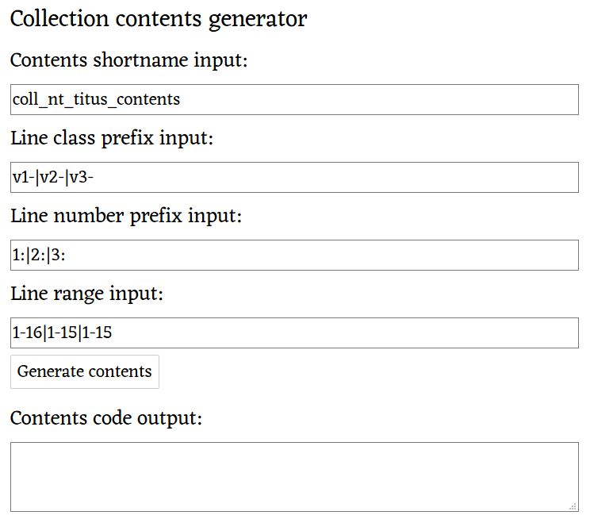
After filling fields with these values, click the button "Generate contents" and the contents code will be displayed in "Contents code output" textarea.
The code will be as this:
var coll_nt_titus_contents = {
"v-title": ""
, "levelstart-1": ""
, "v1-1": "1:1"
, "v1-2": "1:2"
// part of code has been cut out
, "v1-15": "1:15"
, "v1-16": "1:16"
, "levelend-1": ""
, "levelstart-2": ""
, "v2-1": "2:1"
, "v2-2": "2:2"
// part of code has been cut out
, "v2-14": "2:14"
, "v2-15": "2:15"
, "levelend-2": ""
, "levelstart-3": ""
, "v3-1": "3:1"
, "v3-2": "3:2"
// part of code has been cut out
, "v3-14": "3:14"
, "v3-15": "3:15"
, "levelend-3": ""
};
Now let‘s copy this code to code editor and let‘s enter values for the keys "v-title" , "levelstart-1" , "levelstart-2", "levelstart-3". All these values should be in original language, in this case Greek. Since the key "v-title" is the class name of the title, let‘s enter "Τίτλος" as the value of this key. Since the keys "levelstart-1" , "levelstart-2", "levelstart-3" are the class names of the chapters, let‘s enter "Κεφάλαιον A'", "Κεφάλαιον Β'", "Κεφάλαιον Γ'" as the values of these keys.
After this the code will be as this:
var coll_nt_titus_contents = {
"v-title": "Τίτλος"
, "levelstart-1": "Κεφάλαιον A'"
, "v1-1": "1:1"
, "v1-2": "1:2"
// part of code has been cut out
, "v1-15": "1:15"
, "v1-16": "1:16"
, "levelend-1": ""
, "levelstart-2": "Κεφάλαιον Β'"
, "v2-1": "2:1"
, "v2-2": "2:2"
// part of code has been cut out
, "v2-14": "2:14"
, "v2-15": "2:15"
, "levelend-2": ""
, "levelstart-3": "Κεφάλαιον Γ'"
, "v3-1": "3:1"
, "v3-2": "3:2"
// part of code has been cut out
, "v3-14": "3:14"
, "v3-15": "3:15"
, "levelend-3": ""
};
This code should be saved in the file having the same name as the value in "Contents shortname" field. The file should be placed in "contents" directory: /data/contents/coll_nt_titus_contents.js
Creating data file
Data file‘s name should be the same as the value of the key "resource_shortname" from collection catalogue. Parsed text resource shortname from Epistle to Titus catalogue is "nt_titus_parsed_text", so this should be data file‘s name. Data file should be placed in "parsed_text" directory: /data/resources/parsed_texts/nt_titus_parsed_text.js
Tags and required attributes
Data file uses certain formatting conventions.
HTML "span" tag having class attribute "verse" should wrap each line of the text.
"span" tag having class attribute "verse-number" should wrap verse number in each line. The same "span" element should also have as its class attribute the line class as generated by contents generator.
"span" tag having class attribute "word" should wrap each word. The same "span" element should also have the attributes "data-form", "data-part-of-speech", "data-parsing", "data-lemma". These four attributes contain morphological data of the word.
"span" tag having class attribute "para" should mark start of each new paragraph.
HTML code formatted using these "span" tags should be converted to string and made the second argument of the function "ParsedClassicsData._loadResource". The first argument of this function should be the value of the key "resource_shortname" from collection catalogue. Parsed text resource shortname from Epistle to Titus catalogue is "nt_titus_parsed_text", so this string will be the first argument.
This way we get such data file:
ParsedClassicsData._loadResource("nt_titus_parsed_text",
'<span class="verse"><span class="verse-number v1-1">1:1</span>' +
' <span class="word" data-form="Παῦλος" data-part-of-speech="noun" data-parsing="nominative singular masculine" data-lemma="Παῦλος">Παῦλος,</span>' +
' <span class="word" data-form="δοῦλος" data-part-of-speech="noun" data-parsing="nominative singular masculine" data-lemma="δοῦλος">δοῦλος</span>' +
' <span class="word" data-form="θεοῦ" data-part-of-speech="noun" data-parsing="genitive singular masculine" data-lemma="θεός">θεοῦ,</span>' +
' <span class="word" data-form="ἀπόστολος" data-part-of-speech="noun" data-parsing="nominative singular masculine" data-lemma="ἀπόστολος">ἀπόστολος</span>' +
' <span class="word" data-form="δέ" data-part-of-speech="conjunction" data-parsing="" data-lemma="δέ">δὲ</span>' +
' <span class="word" data-form="Ἰησοῦ" data-part-of-speech="noun" data-parsing="genitive singular masculine" data-lemma="Ἰησοῦς">Ἰησοῦ</span>' +
' <span class="word" data-form="χριστοῦ" data-part-of-speech="noun" data-parsing="genitive singular masculine" data-lemma="χριστός">χριστοῦ,</span>' +
' <span class="word" data-form="κατά" data-part-of-speech="preposition" data-parsing="" data-lemma="κατά">κατὰ</span>' +
' <span class="word" data-form="πίστιν" data-part-of-speech="noun" data-parsing="accusative singular feminine" data-lemma="πίστις">πίστιν</span>' +
' <span class="word" data-form="ἐκλεκτῶν" data-part-of-speech="adjective" data-parsing="genitive plural masculine" data-lemma="ἐκλεκτός">ἐκλεκτῶν</span>' +
' <span class="word" data-form="θεοῦ" data-part-of-speech="noun" data-parsing="genitive singular masculine" data-lemma="θεός">θεοῦ</span>' +
' <span class="word" data-form="καί" data-part-of-speech="conjunction" data-parsing="" data-lemma="καί">καὶ</span>' +
' <span class="word" data-form="ἐπίγνωσιν" data-part-of-speech="noun" data-parsing="accusative singular feminine" data-lemma="ἐπίγνωσις">ἐπίγνωσιν</span>' +
' <span class="word" data-form="ἀληθείας" data-part-of-speech="noun" data-parsing="genitive singular feminine" data-lemma="ἀλήθεια">ἀληθείας</span>' +
' <span class="word" data-form="τῆς" data-part-of-speech="article" data-parsing="genitive singular feminine" data-lemma="ὁ">τῆς</span>' +
' <span class="word" data-form="κατά" data-part-of-speech="preposition" data-parsing="" data-lemma="κατά">κατ’</span>' +
' <span class="word" data-form="εὐσέβειαν" data-part-of-speech="noun" data-parsing="accusative singular feminine" data-lemma="εὐσέβεια">εὐσέβειαν,</span> </span>' +
'<span class="verse"><span class="verse-number v1-2">1:2</span>' +
' <span class="word" data-form="ἐπί" data-part-of-speech="preposition" data-parsing="" data-lemma="ἐπί">ἐπ’</span>' +
' <span class="word" data-form="ἐλπίδι" data-part-of-speech="noun" data-parsing="dative singular feminine" data-lemma="ἐλπίς">ἐλπίδι</span>' +
' <span class="word" data-form="ζωῆς" data-part-of-speech="noun" data-parsing="genitive singular feminine" data-lemma="ζωή">ζωῆς</span>' +
' <span class="word" data-form="αἰωνίου" data-part-of-speech="adjective" data-parsing="genitive singular feminine" data-lemma="αἰώνιος">αἰωνίου,</span>' +
' <span class="word" data-form="ἥν" data-part-of-speech="relative pronoun" data-parsing="accusative singular feminine" data-lemma="ὅς">ἣν</span>' +
' <span class="word" data-form="ἐπηγγείλατο" data-part-of-speech="verb" data-parsing="aorist middle indicative 3rd person singular" data-lemma="ἐπαγγέλλομαι">ἐπηγγείλατο</span>' +
' <span class="word" data-form="ὁ" data-part-of-speech="article" data-parsing="nominative singular masculine" data-lemma="ὁ">ὁ</span>' +
' <span class="word" data-form="ἀψευδής" data-part-of-speech="adjective" data-parsing="nominative singular masculine" data-lemma="ἀψευδής">ἀψευδὴς</span>' +
' <span class="word" data-form="θεός" data-part-of-speech="noun" data-parsing="nominative singular masculine" data-lemma="θεός">θεὸς</span>' +
' <span class="word" data-form="πρό" data-part-of-speech="preposition" data-parsing="" data-lemma="πρό">πρὸ</span>' +
' <span class="word" data-form="χρόνων" data-part-of-speech="noun" data-parsing="genitive plural masculine" data-lemma="χρόνος">χρόνων</span>' +
' <span class="word" data-form="αἰωνίων" data-part-of-speech="adjective" data-parsing="genitive plural masculine" data-lemma="αἰώνιος">αἰωνίων,</span> </span>' +
'<span class="verse"><span class="verse-number v1-3">1:3</span>' +
' <span class="word" data-form="ἐφανέρωσε(ν)" data-part-of-speech="verb" data-parsing="aorist active indicative 3rd person singular" data-lemma="φανερόω">ἐφανέρωσεν</span>' +
' <span class="word" data-form="δέ" data-part-of-speech="conjunction" data-parsing="" data-lemma="δέ">δὲ</span>' +
' <span class="word" data-form="καιροῖς" data-part-of-speech="noun" data-parsing="dative plural masculine" data-lemma="καιρός">καιροῖς</span>' +
' <span class="word" data-form="ἰδίοις" data-part-of-speech="adjective" data-parsing="dative plural masculine" data-lemma="ἴδιος">ἰδίοις</span>' +
' <span class="word" data-form="τόν" data-part-of-speech="article" data-parsing="accusative singular masculine" data-lemma="ὁ">τὸν</span>' +
' <span class="word" data-form="λόγον" data-part-of-speech="noun" data-parsing="accusative singular masculine" data-lemma="λόγος">λόγον</span>' +
' <span class="word" data-form="αὐτοῦ" data-part-of-speech="personal pronoun" data-parsing="genitive singular masculine" data-lemma="αὐτός">αὐτοῦ</span>' +
' <span class="word" data-form="ἐν" data-part-of-speech="preposition" data-parsing="" data-lemma="ἐν">ἐν</span>' +
' <span class="word" data-form="κηρύγματι" data-part-of-speech="noun" data-parsing="dative singular neuter" data-lemma="κήρυγμα">κηρύγματι</span>' +
' <span class="word" data-form="ὅ" data-part-of-speech="relative pronoun" data-parsing="accusative singular neuter" data-lemma="ὅς">ὃ</span>' +
' <span class="word" data-form="ἐπιστεύθην" data-part-of-speech="verb" data-parsing="aorist passive indicative 1st person singular" data-lemma="πιστεύω">ἐπιστεύθην</span>' +
' <span class="word" data-form="ἐγώ" data-part-of-speech="personal pronoun" data-parsing="nominative singular" data-lemma="ἐγώ">ἐγὼ</span>' +
' <span class="word" data-form="κατά" data-part-of-speech="preposition" data-parsing="" data-lemma="κατά">κατ’</span>' +
' <span class="word" data-form="ἐπιταγήν" data-part-of-speech="noun" data-parsing="accusative singular feminine" data-lemma="ἐπιταγή">ἐπιταγὴν</span>' +
' <span class="word" data-form="τοῦ" data-part-of-speech="article" data-parsing="genitive singular masculine" data-lemma="ὁ">τοῦ</span>' +
' <span class="word" data-form="σωτῆρος" data-part-of-speech="noun" data-parsing="genitive singular masculine" data-lemma="σωτήρ">σωτῆρος</span>' +
' <span class="word" data-form="ἡμῶν" data-part-of-speech="personal pronoun" data-parsing="genitive plural" data-lemma="ἐγώ">ἡμῶν</span>' +
' <span class="word" data-form="θεοῦ" data-part-of-speech="noun" data-parsing="genitive singular masculine" data-lemma="θεός">θεοῦ,</span> </span>' +
'<span class="verse"><span class="verse-number v1-4">1:4</span>' +
' <span class="word" data-form="Τίτῳ" data-part-of-speech="noun" data-parsing="dative singular masculine" data-lemma="Τίτος">Τίτῳ</span>' +
' <span class="word" data-form="γνησίῳ" data-part-of-speech="adjective" data-parsing="dative singular neuter" data-lemma="γνήσιος">γνησίῳ</span>' +
' <span class="word" data-form="τέκνῳ" data-part-of-speech="noun" data-parsing="dative singular neuter" data-lemma="τέκνον">τέκνῳ</span>' +
' <span class="word" data-form="κατά" data-part-of-speech="preposition" data-parsing="" data-lemma="κατά">κατὰ</span>' +
' <span class="word" data-form="κοινήν" data-part-of-speech="adjective" data-parsing="accusative singular feminine" data-lemma="κοινός">κοινὴν</span>' +
' <span class="word" data-form="πίστιν" data-part-of-speech="noun" data-parsing="accusative singular feminine" data-lemma="πίστις">πίστιν·</span>' +
' <span class="word" data-form="χάρις" data-part-of-speech="noun" data-parsing="nominative singular feminine" data-lemma="χάρις">χάρις,</span>' +
' <span class="word" data-form="ἔλεος" data-part-of-speech="noun" data-parsing="nominative singular neuter" data-lemma="ἔλεος">ἔλεος,</span>' +
' <span class="word" data-form="εἰρήνη" data-part-of-speech="noun" data-parsing="nominative singular feminine" data-lemma="εἰρήνη">εἰρήνη</span>' +
' <span class="word" data-form="ἀπό" data-part-of-speech="preposition" data-parsing="" data-lemma="ἀπό">ἀπὸ</span>' +
' <span class="word" data-form="θεοῦ" data-part-of-speech="noun" data-parsing="genitive singular masculine" data-lemma="θεός">θεοῦ</span>' +
' <span class="word" data-form="πατρός" data-part-of-speech="noun" data-parsing="genitive singular masculine" data-lemma="πατήρ">πατρός,</span>' +
' <span class="word" data-form="καί" data-part-of-speech="conjunction" data-parsing="" data-lemma="καί">καὶ</span>' +
' <span class="word" data-form="κυρίου" data-part-of-speech="noun" data-parsing="genitive singular masculine" data-lemma="κύριους">κυρίου</span>' +
' <span class="word" data-form="Ἰησοῦ" data-part-of-speech="noun" data-parsing="genitive singular masculine" data-lemma="Ἰησοῦς">Ἰησοῦ</span>' +
' <span class="word" data-form="χριστοῦ" data-part-of-speech="noun" data-parsing="genitive singular masculine" data-lemma="χριστός">χριστοῦ</span>' +
' <span class="word" data-form="τοῦ" data-part-of-speech="article" data-parsing="genitive singular masculine" data-lemma="ὁ">τοῦ</span>' +
' <span class="word" data-form="σωτῆρος" data-part-of-speech="noun" data-parsing="genitive singular masculine" data-lemma="σωτήρ">σωτῆρος</span>' +
' <span class="word" data-form="ἡμῶν" data-part-of-speech="personal pronoun" data-parsing="genitive plural" data-lemma="ἐγώ">ἡμῶν.</span> </span>' +
'<span class="para"></span>' +
'<span class="verse"><span class="verse-number v1-5">1:5</span>' +
' <span class="word" data-form="τούτου" data-part-of-speech="demonstrative" data-parsing="genitive singular neuter" data-lemma="οὗτος">Τούτου</span>' +
' <span class="word" data-form="χάριν" data-part-of-speech="preposition" data-parsing="" data-lemma="χάριν">χάριν</span>' +
' <span class="word" data-form="κατέλιπόν" data-part-of-speech="verb" data-parsing="aorist active indicative 1st person singular" data-lemma="καταλείπω">κατέλιπόν</span>' +
' <span class="word" data-form="σε" data-part-of-speech="personal pronoun" data-parsing="accusative singular" data-lemma="σύ">σε</span>' +
' <span class="word" data-form="ἐν" data-part-of-speech="preposition" data-parsing="" data-lemma="ἐν">ἐν</span>' +
' <span class="word" data-form="Κρήτῃ" data-part-of-speech="noun" data-parsing="dative singular feminine" data-lemma="Κρήτη">Κρήτῃ,</span>' +
' <span class="word" data-form="ἵνα" data-part-of-speech="conjunction" data-parsing="" data-lemma="ἵνα">ἵνα</span>' +
' <span class="word" data-form="τά" data-part-of-speech="article" data-parsing="accusative plural neuter" data-lemma="ὁ">τὰ</span>' +
' <span class="word" data-form="λείποντα" data-part-of-speech="verb" data-parsing="present active participle accusative plural neuter" data-lemma="λείπω">λείποντα</span>' +
' <span class="word" data-form="ἐπιδιορθώσῃ" data-part-of-speech="verb" data-parsing="aorist middle subjunctive 2nd person singular" data-lemma="ἐπιδιορθόω">ἐπιδιορθώσῃ,</span>' +
' <span class="word" data-form="καί" data-part-of-speech="conjunction" data-parsing="" data-lemma="καί">καὶ</span>' +
' <span class="word" data-form="καταστήσῃς" data-part-of-speech="verb" data-parsing="aorist active subjunctive 2nd person singular" data-lemma="καθίστημι">καταστήσῃς</span>' +
' <span class="word" data-form="κατά" data-part-of-speech="preposition" data-parsing="" data-lemma="κατά">κατὰ</span>' +
' <span class="word" data-form="πόλιν" data-part-of-speech="noun" data-parsing="accusative singular feminine" data-lemma="πόλις">πόλιν</span>' +
' <span class="word" data-form="πρεσβυτέρους" data-part-of-speech="adjective" data-parsing="accusative plural masculine" data-lemma="πρεσβύτερος">πρεσβυτέρους,</span>' +
' <span class="word" data-form="ὡς" data-part-of-speech="conjunction" data-parsing="" data-lemma="ὡς">ὡς</span>' +
' <span class="word" data-form="ἐγώ" data-part-of-speech="personal pronoun" data-parsing="nominative singular" data-lemma="ἐγώ">ἐγώ</span>' +
' <span class="word" data-form="σοι" data-part-of-speech="personal pronoun" data-parsing="dative singular" data-lemma="σύ">σοι</span>' +
' <span class="word" data-form="διεταξάμην" data-part-of-speech="verb" data-parsing="aorist middle indicative 1st person singular" data-lemma="διατάσσω">διεταξάμην·</span> </span>' +
// part of code has been cut out
""
);
Optional attributes
It happens, that more than one word has the same lemma. E.g. in Greek-English lexicon to the New Testament by Th. S. Green two words have the lemma δέω, two words have the lemma μήν, and two words have the lemma ὅτι. If one clicks in parsed text pane on the word whose lemma has more than one article in the dictionary, then by default the first article will be crolled into view.
In cases second, third etc. lexicon article should be loaded we need to use two additional attributes for the tag "span" having class "word". These are attributes "data-lexicon" and "data-lexicon-entry". The value of the attribute "data-lexicon" should be resource shortname of the relevant lexicon; the value of the attribute "data-lexicon-entry" should be order number of the entry which should be scrolled into view. E.g. the verse Matthew 9:38 contains the word δεήθητε, whose lemma is δέω. The needed article in Green's lexicon is second article for the lemma δέω. To load second article the code for the word δεήθητε in parsed text resource should be as this:
' <span class="word" data-form="δεήθητε" data-part-of-speech="verb" data-parsing="aorist passive imperative 2nd person plural" data-lemma="δέω" data-lexicon="greek_lexicon_to_nt_by_green" data-lexicon-entry="2">δεήθητε</span>' +
Parsing scheme
"span" tag having class attribute "word" should wrap each word in the data file. This "span" tag also has the attributes "data-form", "data-part-of-speech", "data-parsing", "data-lemma which contain morphological data of the word.
The attribute "data-form" contains as its value the same form of the word which "span" tag wraps. Usually the word wrapped and the value of "data-form" are exactly the same. But in some cases, as word undergoing elision or word having movable consonant or word having several orthographic variants the word wrapped and the value of "data-form" will be slightly different.
The attribute "data-lemma" contains as its value the dictionary lemma of the wrapped word.
The attribute "data-part-of-speech" contains as its value the name of the part of speech the wrapped word belongs to.
The attribute "data-parsing" contains as its value parsing data of the wrapped word except the part of speech.
The values of the attributes "data-part-of-speech" and "data-parsing" are entered according to parsing scheme. The attribute "data-part-of-speech" always must have a value and always contains one piece of data. The attribute "data-parsing" can be empty or contain one or more pieces of data. In case the attribute "data-parsing" contains several pieces of data, these pieces should be in proper order, i.e. each piece has its own position. E.g. the value of the attribute "data-parsing" for nouns should consist of case, number and gender exactly in this order.
The following table presents parsing scheme which is used to enter values for "data-part-of-speech" and "data-parsing" attributes:
| Attribute "data-part-of-speech" | Attribute "data-parsing" | |
|---|---|---|
| Possible values | Position name | Possible values |
| verb | tense |
present imperfect future aorist perfect pluperfect |
| voice |
active middle passive |
|
| mood |
indicative subjunctive optative imperative |
|
| person |
1st person 2nd person 3rd person |
|
| number |
singular dual plural |
|
| verb | tense |
present imperfect future aorist perfect pluperfect |
| voice |
active middle passive |
|
| participle | participle | |
| case |
nominative genitive dative accusative voccative |
|
| number |
singular dual plural |
|
| gender |
masculine feminine neuter |
|
| verb | tense |
present imperfect future aorist perfect pluperfect |
| voice |
active middle passive |
|
| infinitive | infinitive | |
| noun | case |
nominative genitive dative accusative voccative |
| number |
singular dual plural |
|
| gender |
masculine feminine neuter |
|
| adjective | case |
nominative genitive dative accusative voccative |
| number |
singular dual plural |
|
| gender |
masculine feminine neuter |
|
| article | case |
nominative genitive dative accusative voccative |
| number |
singular dual plural |
|
| gender |
masculine feminine neuter |
|
| demonstrative | case |
nominative genitive dative accusative voccative |
| number |
singular dual plural |
|
| gender |
masculine feminine neuter |
|
| personal pronoun | case |
nominative genitive dative accusative voccative |
| number |
singular dual plural |
|
| gender |
masculine feminine neuter |
|
| relative pronoun | case |
nominative genitive dative accusative voccative |
| number |
singular dual plural |
|
| gender |
masculine feminine neuter |
|
| interrogative/indefinite pronoun | case |
nominative genitive dative accusative voccative |
| number |
singular dual plural |
|
| gender |
masculine feminine neuter |
|
| adverb | ||
| conjunction | ||
| preposition | ||
| particle | ||
Notice, that there are in this table 3 entries for the value "verb" of the "data-part-of-speech" attribute: first for finite verb, second – for participle and the third – for infinitive.
Coding and parsing policy
Dealing with missing and differently numbered lines
It happens, that some lines of the classical text, which are included in some critical editions, are considered inauthentic and excluded from other editions. E.g. lines 16:25-27 of apostle Paul's epistle to Romans are included in Scrivener's edition, in Westcott and Hort's edition, and in Nestle and Nestle's edition of the New Testament, but are excluded from Robinson and Pierpont's edition and from Antoniadis's edition; in Westcott and Hort's edition and in Nestle and Nestle's edition of the New Testament the line 16:24 is not included.
So, it may be that the critical edition parsed text resource is based on lacks certain lines included in some other critical edition. In such case parsed text resource should include the line numbers of missing lines. In the parsed text of the apostle Paul's epistle to Romans which is based on Robinson and Pierpont's edition of the New Testament, the lines 16:25-27 are represented in parsed text resource's data file by their line numbers:
' <span class="verse"><span class="verse-number v16-25">16:25</span></span>' + ' <span class="verse"><span class="verse-number v16-26">16:26</span></span>' + ' <span class="verse"><span class="verse-number v16-27">16:27</span></span>' +
After including numbers of missing lines in parsed text resource's data file we should not forget to to add these same lines into contents file.
Also it happens that some lines of the classical text are numbered slightly differently in some critical editions. E.g. the line from apostle John's Third Catholic epistle, which in Robinson and Pierpont's edition of the New Testament is numbered as 1:14, in Antoniadis's edition, in Scrivener's edition, in Westcott and Hort's edition and in Nestle and Nestle's edition is numbered as lines 1:14-15. In cases when numbering of lines has some differences across critical editions, it is best for parsed text to accept the most common numbering of lines.
Dealing with crasis
Cases of crasis, such as κἀκεῖ, κἀκεῖθεν, κἀκεῖνος, κἄν, ταὐτά, τοὐναντίον, τοὔνομα, τουτέστι, although might be explained in certain dictionaries, should be treated as two words and those two words should be parsed separately. The "span" tag of the first word should contain that part of the crasis expression which is before vowel having breathing mark, and the "span" tag of the second word should contain part of the crasis expression strarting with vowel having breathin mark to the end of expression. E.g. in case of crasis expression κἀκεῖθεν the "span" tag of the first word will contain "κ" and the "span" tag of the second word will contain "ἀκεῖθεν". The code for crasis expression κἀκεῖθεν will be this:
' <span class="word" data-form="καί" data-part-of-speech="conjunction" data-parsing="" data-lemma="καί">κ</span><span class="word" data-form="ἐκεῖθεν" data-part-of-speech="adverb" data-parsing="" data-lemma="ἐκεῖθεν">ἀκεῖθεν</span>' +
Dealing with punctuation
Punctuation marks, i.e. symbols ",", ".", "·", ";", "–", "—" should be outside "span" tag having class atribute "word", that is, "span" tag should not wrap the word together with punctuation symbol. E.g. in Matthew 2:10 there are punctuation marks "," and ".":
' <span class="verse"><span class="verse-number v2-10">2:10</span>' + ' <span class="word" data-form="ἰδόντες" data-part-of-speech="verb" data-parsing="aorist active participle nominative plural masculine" data-lemma="ὁράω">Ἰδόντες</span>' + ' <span class="word" data-form="δέ" data-part-of-speech="conjunction" data-parsing="" data-lemma="δέ">δὲ</span>' + ' <span class="word" data-form="τόν" data-part-of-speech="article" data-parsing="accusative singular masculine" data-lemma="ὁ">τὸν</span>' + ' <span class="word" data-form="ἀστέρα" data-part-of-speech="noun" data-parsing="accusative singular masculine" data-lemma="ἀστήρ">ἀστέρα</span>,' + ' <span class="word" data-form="ἐχάρησαν" data-part-of-speech="verb" data-parsing="aorist passive indicative 3rd person plural" data-lemma="χαίρω">ἐχάρησαν</span>' + ' <span class="word" data-form="χαράν" data-part-of-speech="noun" data-parsing="accusative singular feminine" data-lemma="χαρά">χαρὰν</span>' + ' <span class="word" data-form="μεγάλην" data-part-of-speech="adjective" data-parsing="accusative singular feminine" data-lemma="μέγας">μεγάλην</span>' + ' <span class="word" data-form="σφόδρα" data-part-of-speech="adverb" data-parsing="" data-lemma="σφόδρα">σφόδρα</span>.' + ' </span>' +
The exception is apostroph symbol "’" marking elision. It should be inside "span" tag having class atribute "word", that is, "span" tag should wrap the word together with apostroph symbol. E.g. in Matthew 2:12 there are two apostroph symbols:
' <span class="verse"><span class="verse-number v2-12">2:12</span>' + ' <span class="word" data-form="καί" data-part-of-speech="conjunction" data-parsing="" data-lemma="καί">Καὶ</span>' + ' <span class="word" data-form="χρηματισθέντες" data-part-of-speech="verb" data-parsing="aorist passive participle nominative plural masculine" data-lemma="χρηματίζω">χρηματισθέντες</span>' + ' <span class="word" data-form="κατά" data-part-of-speech="preposition" data-parsing="" data-lemma="κατά">κατ’</span>' + ' <span class="word" data-form="ὄναρ" data-part-of-speech="noun" data-parsing="accusative singular neuter" data-lemma="ὄναρ">ὄναρ</span>' + ' <span class="word" data-form="μή" data-part-of-speech="adverb" data-parsing="" data-lemma="μή">μὴ</span>' + ' <span class="word" data-form="ἀνακάμψαι" data-part-of-speech="verb" data-parsing="aorist active infinitive" data-lemma="ἀνακάμπτω">ἀνακάμψαι</span>' + ' <span class="word" data-form="πρός" data-part-of-speech="preposition" data-parsing="" data-lemma="πρός">πρὸς</span>' + ' <span class="word" data-form="Ἡρῴδην" data-part-of-speech="noun" data-parsing="accusative singular masculine" data-lemma="Ἡρῴδης">Ἡρῴδην</span>,' + ' <span class="word" data-form="διά" data-part-of-speech="preposition" data-parsing="" data-lemma="διά">δι’</span>' + ' <span class="word" data-form="ἄλλης" data-part-of-speech="adjective" data-parsing="genitive singular feminine" data-lemma="ἄλλος">ἄλλης</span>' + ' <span class="word" data-form="ὁδοῦ" data-part-of-speech="noun" data-parsing="genitive singular feminine" data-lemma="ὁδός">ὁδοῦ</span>' + ' <span class="word" data-form="ἀνεχώρησαν" data-part-of-speech="verb" data-parsing="aorist active indicative 3rd person plural" data-lemma="ἀναχωρέω">ἀνεχώρησαν</span>' + ' <span class="word" data-form="εἰς" data-part-of-speech="preposition" data-parsing="" data-lemma="εἰς">εἰς</span>' + ' <span class="word" data-form="τήν" data-part-of-speech="article" data-parsing="accusative singular feminine" data-lemma="ὁ">τὴν</span>' + ' <span class="word" data-form="χώραν" data-part-of-speech="noun" data-parsing="accusative singular feminine" data-lemma="χώρα">χώραν</span>' + ' <span class="word" data-form="αὐτῶν" data-part-of-speech="personal pronoun" data-parsing="genitive plural masculine" data-lemma="αὐτός">αὐτῶν</span>.' + ' </span>' +
Dealing with alternative characters
In unicode two or more code points may encode characters which look identically or have only stylistic difference. In order for all functionality to work correctly the uniformity of encoding must be enforced by using only characters from certain "standard" set. To achieve this go to Unicode Characters changer and use the form to change unicode characters into "standard" ones.
Critical edition (scanned)
In principle, resources belonging to type "Critical edition" can be either scanned or transcribed, but they surely will be all scanned because it is very difficult to reproduce complex formatting of the scholarly editions using very limitted means available in HTML. So, only creation of scanned resources of the type "Critical edition" will be described in documentation.
Creating image files
To create scanned resource of the type "Critical edition" you first need a series of JPG images, each image picturing one page of the book. Scanned resource always includes all pages of the book, i.e. each page from the title page to the last, not including covers and promotional materials. About creating a series of JPG files for scanned resource, read in Common tasks the sections on scanning a book, on converting PDF file to images, on batch renaming of files, on cropping images, on retouching images, on optimizing size of JPG files.
When you have a series of JPG files each image picturing one page of the book and named sttarting from page0001.jpg, submit them to the senior editor who will upload those files to the server. The files will be uploaded to the directory specified in catalogue file as the value of the key "scanned_source_shortname". For example, in the Epistle to Titus collection the critical edition by M. W. Holmes has been listed and the value of the key "scanned_source_shortname" is "greek_new_testament_sbl_edition_ed_holmes". It means that the pictures of the pages must be uploaded to the directory /_scans/ greek_new_testament_sbl_edition_ed_holmes .
Having uploaded the images of the pages to the server, senior editor should list the scanned book as described in section Listing scanned books.
After uploading the files of the scanned book and listing it among scanned books, it can be browsed using the value of the key "scanned_source_shortname" in the URL: parsedclassics.com/reader/embedded_bookreader.html?greek_new_testament_sbl_edition_ed_holmes
Creating contents file
In order for critical edition to work in sync with parsed text, the contents file must be created. To create contents file go to Scanned book contents generator page and fill the form:
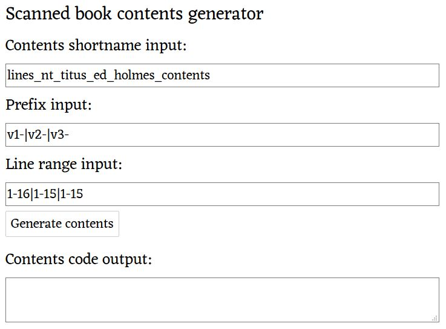
The value of the form‘s field "Line range" should be pipe delimited line ranges. In Epistle to Titus there are three chapters, the first having 16 verses, the second – 15 verses and the third – 15 verses. So, the value of this field should be 1-16|1-15|1-15.
The value of the form‘s field "Line class prefix" should be be pipe delimited class prefixes, one for each chapter. The chapters of the New Testament are usually indicated by the number written to the left from verse number; colon usually used to separate chapter number from verse number. Class prefix should start with the letter "v" and follow with line number prefix in which special symbols are replaced with dashes. So, we replace colons in line number prefixes, add leading letter "v" and get the value for this field v1-|v2-|v3- .
The value of the form‘s field "Contents shortname" should be the same as the value of the key "contents_shortname" in collection‘s catalogue. While creating collection‘s catalogue for Epistle to Titus collection we entered for this key the value "lines_nt_titus_ed_holmes_contents", so we now should enter it as the value of the field "Contents shortname".
After filling fields with these values, click the button "Generate contents" and the contents code will be displayed in "Contents code output" textarea.
The code will be as this:
var lines_nt_titus_ed_holmes_contents = {
"v-title": ""
, "v1-1": ""
, "v1-2": ""
// part of code has been cut out
, "v1-15": ""
, "v1-16": ""
, "v2-1": ""
, "v2-2": ""
// part of code has been cut out
, "v2-14": ""
, "v2-15": ""
, "v3-1": ""
, "v3-2": ""
// part of code has been cut out
, "v3-14": ""
, "v3-15": ""
};
Now we need to enter values for each key of this JSON object. The keys are class names of lines of the parsed text. "v-title" is the class name of the title of the parsed text. The values should be numbers from image file names (without zero padding). View images of the scanned files, look for the numbers in their file names and enter those numbers as the values for relevant keys.
We get the following code:
var lines_nt_titus_ed_holmes_contents = {
"v-title": "451"
, "v1-1": "451"
, "v1-2": "451"
// part of code has been cut out
, "v1-15": "451"
, "v1-16": "451"
, "v2-1": "452"
, "v2-2": "452"
// part of code has been cut out
, "v2-14": "452"
, "v2-15": "452"
, "v3-1": "452"
, "v3-2": "452"
// part of code has been cut out
, "v3-14": "453"
, "v3-15": "453"
};
This code should be saved in the file having the same name as the value in "Contents shortname" field. The file should be placed in "contents" directory: /data/contents/lines_nt_titus_ed_holmes_contents.js
After doing this critical edition resource should work in sync with parsed text resource.
Concordance (scanned)
Creating image files
To create scanned resource of the type "Concordance" you first need a series of JPG images, each image picturing one page of the book. Scanned resource always includes all pages of the book, i.e. each page from the title page to the last, not including covers and promotional materials. About creating a series of JPG files for scanned resource, read in Common tasks the sections on scanning a book, on converting PDF file to images, on batch renaming of files, on retouching images, on cropping images, on optimizing size of JPG files.
When you have a series of JPG files each image picturing one page of the book and named starting from page0001.jpg, submit them to the senior editor which will upload those files to the server. The files will be uploaded to the directory specified in catalogue file as the value of the key "scanned_source_shortname". For example in the Epistle to Titus collection the concordance edited by W. F. Moulton and A. S. Geden has been listed and the value of the key "scanned_source_shortname" is "concordance_to_greek_testament_by_moulton_geden". It means that the pictures of the pages must be uploaded to the directory /_scans/concordance_to_greek_testament_by_moulton_geden .
Having uploaded the images of the pages to the server, senior editor should list the scanned book as described in section Listing scanned books.
After uploading the files of the scanned book and listing it among scanned books, it can be browsed using the value of the key "scanned_source_shortname" in the URL: parsedclassics.com/reader/embedded_bookreader.html?concordance_to_greek_testament_by_moulton_geden
In order for concordance to work in sync with parsed text, the contents file should be prepared. Concordance resources, which use the same scanned book, share the same contents file. This means that there could be two cases: (1) there is no contents file and we need to create it; (2) there is contents file and we need to supplement it.
Creating new contents file
To create new contents file go to Word list generator page and fill the form:
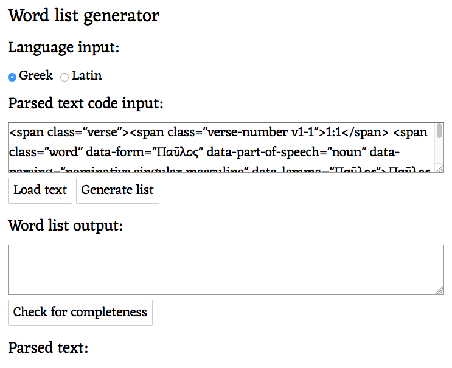
The value of the form‘s field "Language" should be "Greek" because in Epistle to Titus collection parsed text resource is in Greek.
The value of the form‘s field "Parsed text code" should be full HTML code of the parsed text. Use browser’s HTML inspector (available on right-click in every major browser) to copy parsed text's HTML code from Library app’s page. To do this right-click inside HTML inspector's panel on the "div" element having "class" attribute "pc-content-panel-inner" and in context menu select option "Copy outerHTML":
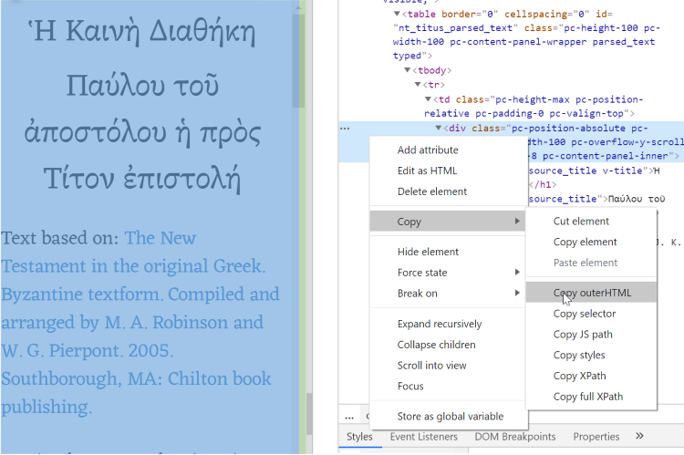
Then paste the copied string into form‘s field. After that select and delete opening and closing "div" tags from the code pasted into field:
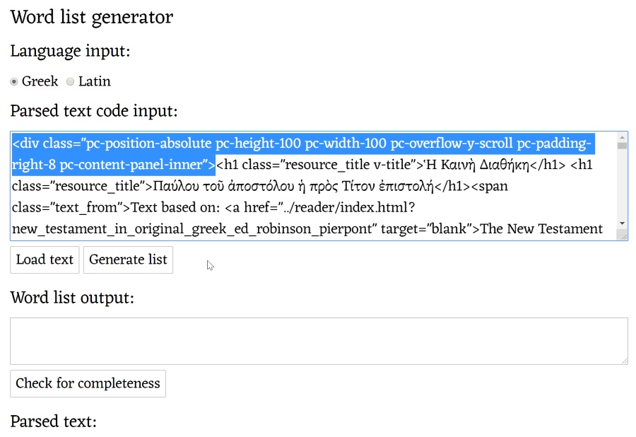
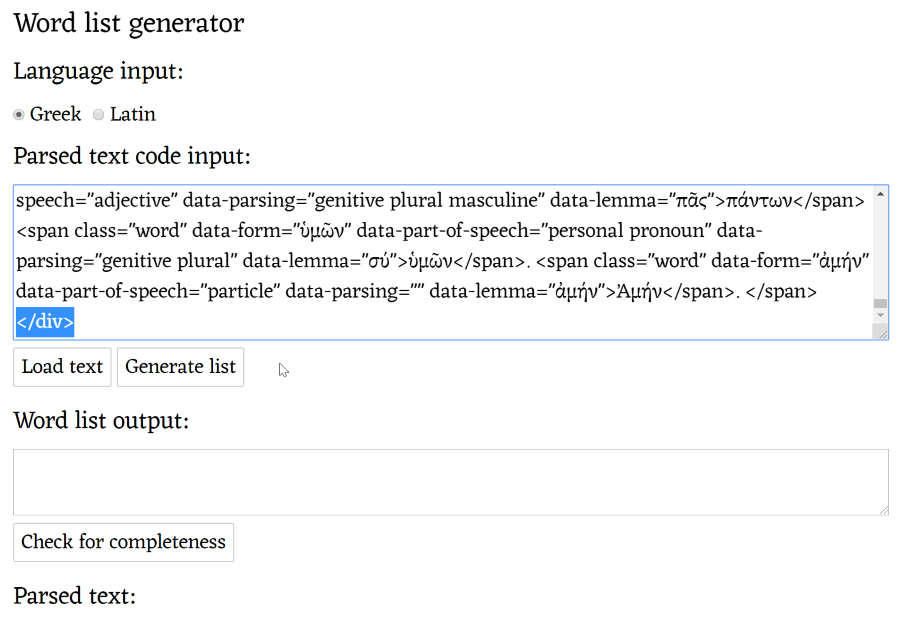
After filling fields with these values, click the button "Load text" and the text will be displayed beneath "Parsed text:" heading.
After loading text click the button "Generate list" and the pipe delimited alphabetical list of all words in the text will appear in "Word list" textarea.
The word list will be as this:
ἀγαθός|ἀγάπη|ἅγιος|ἁγνός|ἀδιαφθορία|ἀδόκιμος|ἀεί|αἱρετικός|αἰσχροκερδής|αἰσχρός|αἰτία|αἰών|αἰώνιος|ἄκαρπος|ἀκατάγνωστος|ἀλήθεια|ἀληθής|ἀλλά|ἀλλήλων|ἁμαρτάνω|ἄμαχος|ἀμήν|ἀναγκαῖος|ἀνακαίνωσις|ἀνατρέπω|ἀνέγκλητος|ἀνήρ|ἄνθρωπος|ἀνόητος|ἀνομία|ἀντέχομαι|ἀντιλέγω|ἀνυπότακτος|ἀνωφελής|ἀπειθής|ἄπιστος|ἀπό|Ἀπολλῶς|ἀπόστολος|ἀποστρέφω|ἀποτόμως|ἀργός|ἀρνέομαι|Ἀρτεμᾶς|ἀρχή|ἀσέβεια|ἀσπάζομαι|ἀσωτία|αὐθάδης|αὐτοκατάκριτος|αὐτός|ἀφθαρσία|ἀψευδής|βδελυκτός|βλασφημέω|βούλομαι|γάρ|γαστήρ|γενεαλογία|γίνομαι|γνήσιος|γυνή|δέ|δεσπότης|δεύτερος|δέω|διά|διαβεβαιόομαι|διάβολος|διάγω|διατάσσω|διδασκαλία|διδάσκω|διδαχή|δίδωμι|δίκαιος|δικαιοσύνη|δικαιόω|δικαίως|δόξα|δουλεύω|δοῦλος|δουλόω|δυνατός|ἑαυτοῦ|ἐγκρατής|ἐγώ|εἰ|εἰμί|εἰρήνη|εἷς|εἰς|ἐκ|ἐκεῖ|ἐκεῖνος|ἐκλεκτός|ἐκστρέφομαι|ἐκχέω|ἐλέγχω|ἔλεος|ἐλπίς|ἐν|ἐναντίος|ἐνδείκνυμι|ἐντολή|ἐντρέπω|ἐξουσία|ἐπαγγέλλομαι|ἐπί|ἐπίγνωσις|ἐπιδιορθόω|ἐπιεικής|ἐπιθυμία|ἐπίσκοπος|ἐπιστομίζω|ἐπιταγή|ἐπιφαίνω|ἐπιφάνεια|ἔργον|ἔρις|ἔρχομαι|ἕτοιμος|εὐάρεστος|εὐσέβεια|εὐσεβῶς|ἔχω|ζάω|ζηλωτής|Ζηνᾶς|ζήτησις|ζωή|ἤ|ἡδονή|ἡμέτερος|θεός|θηρίον|ἴδιος|ἱεροπρεπής|Ἰησοῦς|ἵνα|Ἰουδαϊκός|καθαρίζω|καθαρός|καθίστημι|καί|καιρός|κακία|κακός|καλοδιδάσκαλος|καλός|κατά|καταλείπω|κατάστημα|κατηγορία|κέρδος|κήρυγμα|κληρονόμος|κοινός|κοσμέω|κοσμικός|Κρής|Κρήτη|κρίνω|κύριους|λαλέω|λαός|λέγω|λείπω|λόγος|λουτρόν|λυτρόομαι|μακάριος|μάλιστα|μανθάνω|μαρτυρία|ματαιολόγος|μάταιος|μάχη|μέγας|μέν|μετά|μή|μηδείς|μιαίνω|μισέω|μῦθος|μωρός|νέος|νηφάλιος|Νικόπολις|νομικός|νοσφίζομαι|νουθεσία|νοῦς|νῦν|ὁ|οἶδα|οἰκονόμος|οἶκος|οἰκουργός|οἶνος|ὅλος|ὁμολογέω|ὁράω|ὀργίλος|ὅς|ὅσιος|ὅστις|ὅταν|ὅτε|ὅτι|οὐ|οὐδείς|οὗτος|παιδεύω|παλιγγενεσία|παραιτέομαι|παρακαλέω|παραχειμάζω|παρέχω|πάροινος|πᾶς|πατήρ|Παῦλος|πειθαρχέω|πέμπω|περί|περιΐστημι|περιούσιος|περιτομή|περιφρονέω|πιστεύω|πίστις|πιστός|πλανάω|πλήκτης|πλουσίως|πνεῦμα|ποιέω|ποικίλος|πόλις|πολύς|ποτέ|πραΰτης|πρέπω|πρεσβύτερος|πρεσβύτης|πρεσβῦτις|πρό|προΐστημι|προπέμπω|πρός|προσδέχομαι|προσέχω|προφήτης|σεαυτοῦ|σεμνός|σεμνότης|σπουδάζω|σπουδαίως|στυγητός|σύ|συνείδησις|σῴζω|σωτήρ|σωτήριος|σωφρονέω|σωφρονίζω|σωφρόνως|σώφρων|τέκνον|τίς|τις|Τίτος|τοιοῦτος|τύπος|Τυχικός|ὑγιαίνω|ὑγιής|ὑπέρ|ὑπομιμνῄσκω|ὑπομονή|ὑποτάσσω|φανερόω|φαῦλος|φθόνος|φιλάγαθος|φίλανδρος|φιλανθρωπία|φιλέω|φιλόξενος|φιλότεκνος|φρεναπάτης|φροντίζω|χάριν|χάρις|χρεία|χρηστότης|χριστός|χρόνος|ψεύστης|ὡς|ὡσαύτως|ὠφέλιμος
Then click the button "Check for completeness". After this all words beneath the heading "Parsed text" should be displayed on green backgound. If some words remain on white background, it means that the script was not able to generate complete list of words. Inform about it senior editor.
When you have pipe delimited alphabetical list of all words in the parsed text, go to Lexicon contents generator page and fill the form:
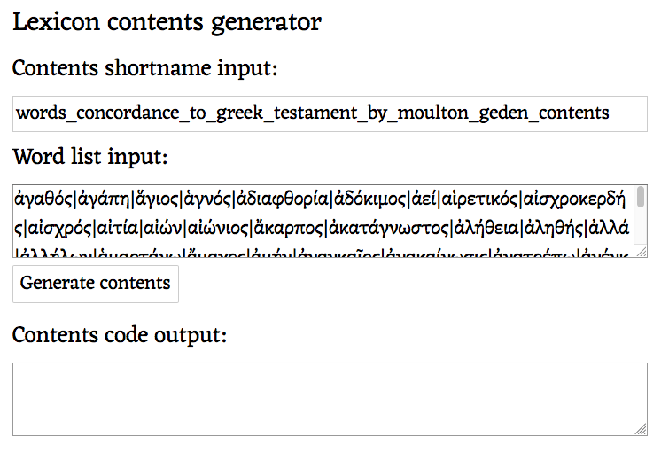
The value of the form‘s field "Contents shortname" should be the same as the value of the key "contents_shortname" in collection‘s catalogue. While creating collection‘s catalogue for Epistle to Titus collection we entered for this key the value "words_concordance_to_greek_testament_by_moulton_geden_contents", so we now should enter it as the value of the field "Contents shortname".
The value of the form‘s field "Word list" should be just created pipe delimited alphabetical list of all words in the parsed text.
After filling fields with these values click the button "Generate contents" and the contents code will appear in "Contents code" textarea.
The contents code will be as this:
var words_concordance_to_greek_testament_by_moulton_geden_contents = {
/*Title page*/ "w-title": ""
, /*ἀγαθός*/ "w-7936-947-945-952-972-962": ""
, /*ἀγάπη*/ "w-7936-947-940-960-951": ""
, /*ἅγιος*/ "w-7941-947-953-959-962": ""
, /*ἁγνός*/ "w-7937-947-957-972-962": ""
// part of code has been cut out
, /*χριστός*/ "w-967-961-953-963-964-972-962": ""
, /*χρόνος*/ "w-967-961-972-957-959-962": ""
, /*ψεύστης*/ "w-968-949-973-963-964-951-962": ""
, /*ὡς*/ "w-8033-962": ""
, /*ὡσαύτως*/ "w-8033-963-945-973-964-969-962": ""
, /*ὠφέλιμος*/ "w-8032-966-941-955-953-956-959-962": ""
};
Now we need to enter values for each key of this JSON object. The keys are strings starting with "w" and consisting from numerical letter codes. "v-title" is the key for the title page of the concordane. The values should be numbers from image file names (without zero padding). View images of the scanned files, look for the numbers in their file names and enter those numbers as the values for relevant keys.
We get the following code:
var words_concordance_to_greek_testament_by_moulton_geden_contents = {
/*Title page*/ "w-title": "3"
, /*ἀγαθός*/ "w-7936-947-945-952-972-962": "14"
, /*ἀγάπη*/ "w-7936-947-940-960-951": "18"
, /*ἅγιος*/ "w-7941-947-953-959-962": "23"
, /*ἁγνός*/ "w-7937-947-957-972-962": "26"
// part of code has been cut out
, /*χριστός*/ "w-967-961-953-963-964-972-962": "1023"
, /*χρόνος*/ "w-967-961-972-957-959-962": "1030"
, /*ψεύστης*/ "w-968-949-973-963-964-951-962": "1034"
, /*ὡς*/ "w-8033-962": "1038"
, /*ὡσαύτως*/ "w-8033-963-945-973-964-969-962": "1043"
, /*ὠφέλιμος*/ "w-8032-966-941-955-953-956-959-962": "1044"
};
This code should be saved in the file having the same name as the value in "Contents shortname" field. The file should be placed in "contents" directory: /data/contents/words_concordance_to_greek_testament_by_moulton_geden_contents.js
After doing this Concordance resource should work in sync with parsed text resource.
Supplementing contents file
In case there is already contents file for scanned concordance book we need to supplement contents.
To do this go to Lexicon contents supplementer page and fill the form:
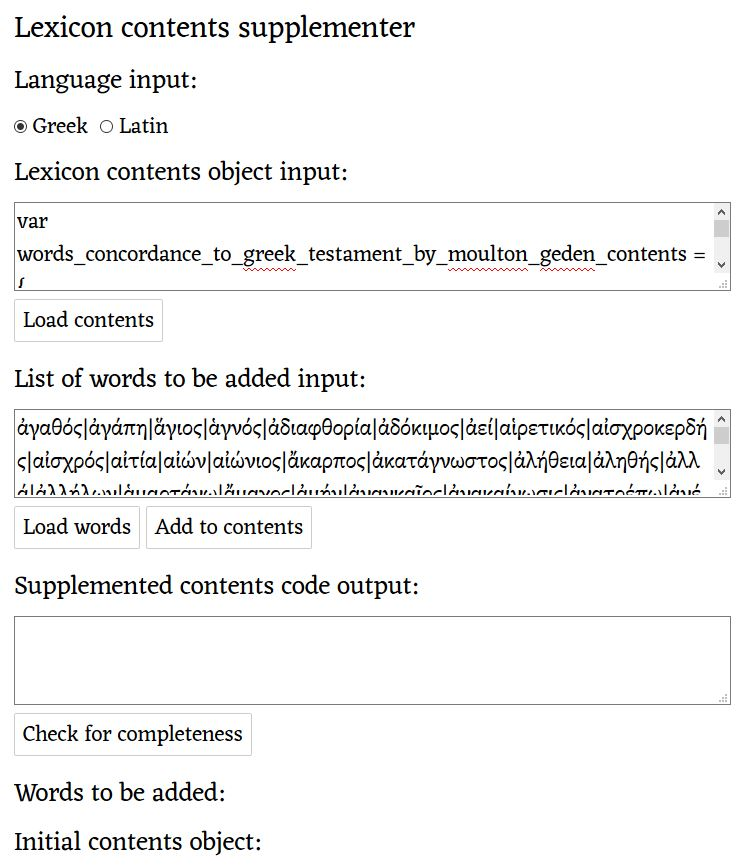
The value of the form‘s field "Language" should be "Greek" because in Epistle to Titus collection parsed text resource is in Greek.
The value of the form‘s field "Lexicon contents object" should be complete content of the concordance contents file. In previous section we saved it as /data/contents/words_concordance_to_greek_testament_by_moulton_geden_contents.js
The value of the form‘s field "List of words to be added" should be pipe delimited alphabetical list of words contained in parsed text resource. How to create such word list has been described in the section Creating new contents file.
After filling fields with these values, click the button "Load contents" and the code of the concordance contents object will be displayed beneath "Initial contents object:" heading.
Then click the button "Load words" and the list of words to be added to contents will be displayed beneath "Words to be added:" heading.
After that click the button "Add to contents" and the code of supplemented contents object will appear in "Supplemented contents code" textarea.
Then click the button "Check for completeness" and all words beneath the headings "Words to be added:" and "Initial contents object:" should be displayed in green background. If some words will not be displayed in green background, inform about it senior editor.
The code generated will be as this:
var words_concordance_to_greek_testament_by_moulton_geden_contents = {
/*Title page*/ "w-title": "3"
, /*ἀγαθός*/ "w-7936-947-945-952-972-962": "14"
, /*ἀγαπάω*/ "w-7936-947-945-960-940-969": "16"
, /*ἀγάπη*/ "w-7936-947-940-960-951": "18"
, /*ἀγαπητός*/ "w-7936-947-945-960-951-964-972-962": "19"
, /*ἄγγελος*/ "w-7940-947-947-949-955-959-962": "20"
, /*ἅγιος*/ "w-7941-947-953-959-962": "23"
, /*ἁγνός*/ "w-7937-947-957-972-962": ""
, /*ἀγών*/ "w-7936-947-974-957": "29"
// part of code has been cut out
, /*χρόνος*/ "w-967-961-972-957-959-962": ""
, /*ψαλμός*/ "w-968-945-955-956-972-962": "1033"
, /*ψεύδομαι*/ "w-968-949-973-948-959-956-945-953": "1033"
, /*ψεύστης*/ "w-968-949-973-963-964-951-962": ""
, /*ψυχή*/ "w-968-965-967-942": "1034"
, /*ὧδε*/ "w-8039-948-949": "1036"
, /*ᾠδή*/ "w-8096-948-942": "1036"
, /*ὡς*/ "w-8033-962": "1038"
, /*ὡσαύτως*/ "w-8033-963-945-973-964-969-962": ""
, /*ὠφέλιμος*/ "w-8032-966-941-955-953-956-959-962": ""
};
Notice, tat some keys have numerical values while the other keys have empty strings as their values. The latter represents the words which were not included in the initial contents object.
Now we need to enter numerical values for each key having empty string as its value. The values should be numbers from image file names (without zero padding). So, view images of the scanned files, look for the numbers in their file names and enter those numbers as the values for relevant keys.
We get the following code:
var words_concordance_to_greek_testament_by_moulton_geden_contents = {
/*Title page*/ "w-title": "3"
, /*ἀγαθός*/ "w-7936-947-945-952-972-962": "14"
, /*ἀγαπάω*/ "w-7936-947-945-960-940-969": "16"
, /*ἀγάπη*/ "w-7936-947-940-960-951": "18"
, /*ἀγαπητός*/ "w-7936-947-945-960-951-964-972-962": "19"
, /*ἄγγελος*/ "w-7940-947-947-949-955-959-962": "20"
, /*ἅγιος*/ "w-7941-947-953-959-962": "23"
, /*ἁγνός*/ "w-7937-947-957-972-962": "26"
, /*ἀγών*/ "w-7936-947-974-957": "29"
// part of code has been cut out
, /*χρόνος*/ "w-967-961-972-957-959-962": "1030"
, /*ψαλμός*/ "w-968-945-955-956-972-962": "1033"
, /*ψεύδομαι*/ "w-968-949-973-948-959-956-945-953": "1033"
, /*ψεύστης*/ "w-968-949-973-963-964-951-962": "1034"
, /*ψυχή*/ "w-968-965-967-942": "1034"
, /*ὧδε*/ "w-8039-948-949": "1036"
, /*ᾠδή*/ "w-8096-948-942": "1036"
, /*ὡς*/ "w-8033-962": "1038"
, /*ὡσαύτως*/ "w-8033-963-945-973-964-969-962": "1043"
, /*ὠφέλιμος*/ "w-8032-966-941-955-953-956-959-962": "1045"
};
Replace with this code the contents of the file from which initial code was taken (in our case this was the file /data/contents/words_concordance_to_greek_testament_by_moulton_geden_contents.js) and save it.
After doing this concordance resource should work in sync with parsed text resource.
Workflows for multiple collections
Usually scanned resource of the type "Concordance" is being included into several collections. E.g. such resource as concordance edited by W. F. Moulton and A. S. Geden will be used in every collection dedicated to certain book of the New Testament. This means that the same contents file of the scanned resource of the type "Concordance" will be used by all relevant collections.
There are several workflows for creating contents file to be used by several collections.
Supplementing in stages
One possible workflow is as follows: at first we create new contents file to be used by certain single collection and fill the gaps with page numbers for all lemmas found in the original text of that collection. Then we supplement the contents file with the lemmas found in original text of another collection and fill the gaps with page numbers of these lemmas. And we repeat this process again and again untill all lemmas of the all original texts of the all relevant collections are included in the contents file and all relevant page numbers are filled in.
This workflow has the advantage that we can work only with lemmas of the original text of the single collection and doing so quickly prepare one or more resources of the type "Concordance" to be used inside single collection. The disadvantage is that in each cycle we need again to browse through all pages of the scanned book in search for relevant lemmas and that takes a lot of time.
Supplementing at start
Another possible workflow is as follows: at first we create new contents file to be used by certain single collection. Then we don't fill the gaps with page numbers, but instead supplement the contents file with the lemmas found in original text of another collection. And we repeat this process again and again untill all lemmas of the all original texts of the all relevant collections are included in the contents file. Then we browse through all pages of the scanned book, find the page numbers of the all lemmas and fill the gaps in contents file with these page numbers.
This workflow has the advantage that we must browse though all pages of the scanned book only once and this takes much less time than repeated browsing of the workflow described above. But the disadvantage is that we cannot work with the single collection at the time and must create huge contents file at once.
Cleaning page numbers
By using the first or the second workflow of those described above we get contents file of the resource of the type "Concordance" which is being used by multiple collections. We may need to add another resource of the type "Concordance" to the same collections. E.g. after having added concordance edited by W. F. Moulton and A. S. Geden to every collection dedicated to certain book of the New Testament we may need to add concordance edited by Ch. F. Hudson and E. Abbot to the same collections. In such cases we can shortcut the process by using the third workflow.
The contents file for the new resource of the type "Concordance" should contain the same lemmas. This means that we can reuse existing contens file: we only need to remove page numbers, to change the name of the contents object and to change the name of the file. To remove page numbers from the contents file use Lexicon page numbers cleaner. Copy contents object from the contens file, paste it in the field "Lexicon contents object" and click the button "Clean page numbers":
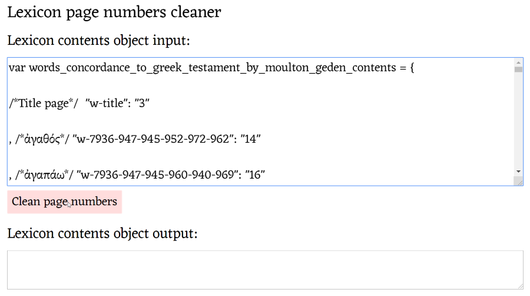
Then save the outputted contens object without page numbers using relevant contents object name and file name.
Importing after cleaning
It may happen that one resource of the type "Concordance" has been added to multiple collections and another resource of the type "Concordance" has been added to just single or several collections. E.g. such resource as concordance edited by W. F. Moulton and A. S. Geden has been added to every collection dedicated to certain book of the New Testament, but such resource as concordance edited by Ch. F. Hudson and E. Abbot has been added to one or couple of collections. Now we need to add this resource to remaining collections.
In this case we need to use the following workflow. At first we should take that bigger contents file which contains comprehensive list of lemmas found in multiple collections and remove the page numbers from it. After that we need to import data into cleaned contents object from the contents object which contains less comprehensive list of lemmas from single collection or couple of collections. To do this go to Lexicon contents importer form anf fill the fields:
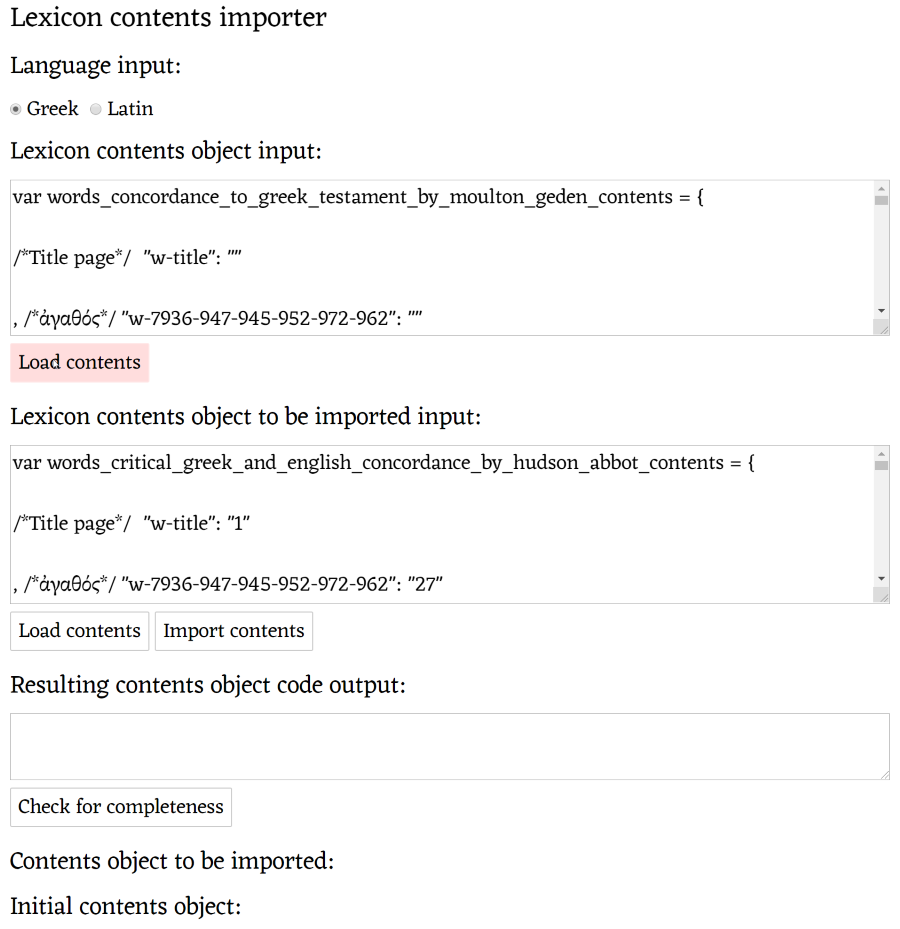
The value of the form‘s field "Language" should be "Greek" because lemmas in both contents objects are in Greek.
The value of the field "Lexicon contents object" should be contents object in which page numbers have been removed, i.e. that contents object which contains comprehensive list of lemmas found in multiple collections.
The value of the field "Lexicon contents object to be imported" should be contents object with all page numbers intact which contains less comprehensive list of lemmas from single collection or couple of collections.
After filling fields with such values click the button "Load contents" which is below the first textarea and the list of lemmas contained in the initial contents object will be displayed below the heading "Initial contents object:". Then click the button "Load contents" which is below the second textarea and the list of lemmas contained in contents object to be imported will be displayed below the heading "Contents object to be imported:". After that click the button "Import contents" and the resulting contents object will be outputted inside textarea "Resulting contents object code". Then click the button "Check for completeness". All lemmas below the headings "Contents object to be imported:" and "Initial contents object:" should be colored green. If certain lemmas remain not colored, inform about it senior editor.
Then save the resulting contents object using relevant object name and file name.
Concordance (transcribed)
Creating transcribed resource of the type "concordance" involves creating data file and contents file.
Creating data file
Let‘s create data file of the transcribed concordance of the Epistle to Titus text.
The data file is being created by filling Concordance generator form:
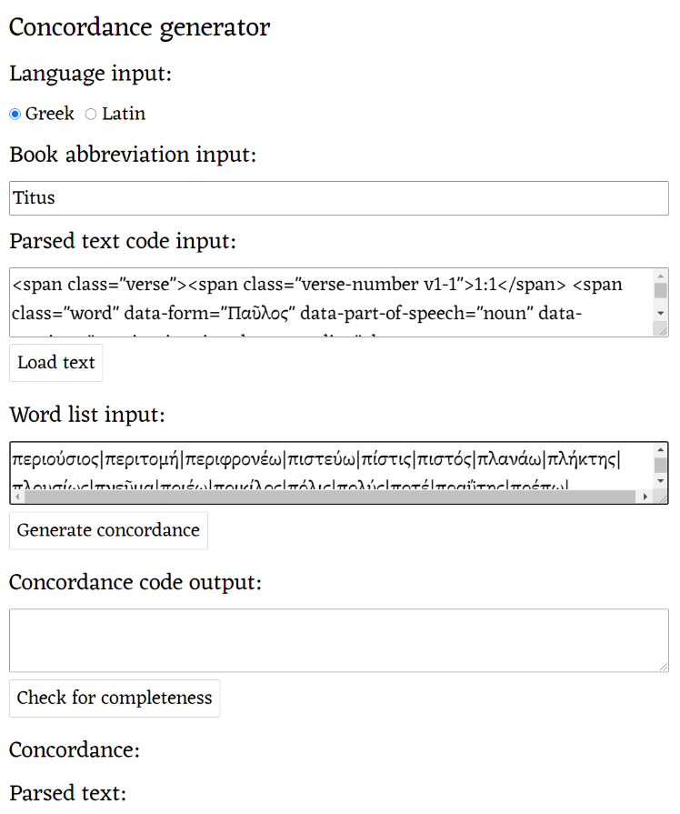
The value of the form‘s field "Language" should be "Greek" because in Epistle to Titus collection parsed text resource is in Greek.
The value of the form‘s field "Book abbreviation" should be standard abbreviation of the title of the classical book. For example, abbreviation of the apostle Paul's First Epistle to Thessalonians would be "1 Thess.", abbreviation of the Revelation to John the Theologian would be "Rev.".
The value of the form‘s field "Parsed text code" should be HTML code of the parsed text starting from the first "span" tag having class attribute value "verse" and ending with the last "span" tag having the same attribute value. Use browser’s HTML inspector (available on right-click in every major browser) to copy this part of code from Library app’s page.
The value of the form‘s field "Word list" should be pipe delimited alphabetical list of words contained in parsed text resource. How to create such word list has been described in the section on Creating new contents file for scanned concordance resource.
After filling fields with these values, click the button "Load text" and the text will be displayed beneath "Parsed text:" heading.
After loading text click the button "Generate concordance" and the concordance code will appear in "Concordance code" textarea.
Then click the button "Check for completeness" and all words beneath the heading "Parsed text:" should be displayed in green background. If some words will not be displayed in green background, inform about it senior editor.
The generated concordance code will be as this:
<h2><span class="concordance-heading" data-lemma="ἀγαθός">ἀγαθός</span></h2> <span class="concordance-verse"><span class="concordance-verse-number">2:10</span> <span class="concordance-word" data-concordance-verse-class="v2-10" data-lemma="ἀγαθός" data-form="ἀγαθήν">ἀγαθήν</span> adjective accusative singular feminine</span> <span class="concordance-verse"><span class="concordance-verse-number">1:16</span> <span class="concordance-word" data-concordance-verse-class="v1-16" data-lemma="ἀγαθός" data-form="ἀγαθόν">ἀγαθόν</span> adjective accusative singular neuter</span> <span class="concordance-verse"><span class="concordance-verse-number">3:1</span> <span class="concordance-word" data-concordance-verse-class="v3-1" data-lemma="ἀγαθός" data-form="ἀγαθόν">ἀγαθόν</span> adjective accusative singular neuter</span> <span class="concordance-verse"><span class="concordance-verse-number">2:5</span> <span class="concordance-word" data-concordance-verse-class="v2-5" data-lemma="ἀγαθός" data-form="ἀγαθάς">ἀγαθάς</span> adjective accusative plural feminine</span> <h2><span class="concordance-heading" data-lemma="ἀγάπη">ἀγάπη</span></h2> <span class="concordance-verse"><span class="concordance-verse-number">2:2</span> <span class="concordance-word" data-concordance-verse-class="v2-2" data-lemma="ἀγάπη" data-form="ἀγάπῃ">ἀγάπῃ</span> noun dative singular feminine</span> <h2><span class="concordance-heading" data-lemma="ἅγιος">ἅγιος</span></h2> <span class="concordance-verse"><span class="concordance-verse-number">3:5</span> <span class="concordance-word" data-concordance-verse-class="v3-5" data-lemma="ἅγιος" data-form="ἁγίου">ἁγίου</span> adjective genitive singular neuter</span> // part of code has been cut out <h2><span class="concordance-heading" data-lemma="χάρις">χάρις</span></h2> <span class="concordance-verse"><span class="concordance-verse-number">1:4</span> <span class="concordance-word" data-concordance-verse-class="v1-4" data-lemma="χάρις" data-form="χάρις">χάρις</span> noun nominative singular feminine</span> <span class="concordance-verse"><span class="concordance-verse-number">2:11</span> <span class="concordance-word" data-concordance-verse-class="v2-11" data-lemma="χάρις" data-form="χάρις">χάρις</span> noun nominative singular feminine</span> <span class="concordance-verse"><span class="concordance-verse-number">3:15</span> <span class="concordance-word" data-concordance-verse-class="v3-15" data-lemma="χάρις" data-form="χάρις">χάρις</span> noun nominative singular feminine</span> <span class="concordance-verse"><span class="concordance-verse-number">3:7</span> <span class="concordance-word" data-concordance-verse-class="v3-7" data-lemma="χάρις" data-form="χάριτι">χάριτι</span> noun dative singular feminine</span> <h2><span class="concordance-heading" data-lemma="χρεία">χρεία</span></h2> <span class="concordance-verse"><span class="concordance-verse-number">3:14</span> <span class="concordance-word" data-concordance-verse-class="v3-14" data-lemma="χρεία" data-form="χρείας">χρείας</span> noun accusative plural feminine</span> <h2><span class="concordance-heading" data-lemma="χρηστότης">χρηστότης</span></h2> <span class="concordance-verse"><span class="concordance-verse-number">3:4</span> <span class="concordance-word" data-concordance-verse-class="v3-4" data-lemma="χρηστότης" data-form="χρηστότης">χρηστότης</span> noun nominative singular feminine</span> <h2><span class="concordance-heading" data-lemma="χριστός">χριστός</span></h2> <span class="concordance-verse"><span class="concordance-verse-number">1:1</span> <span class="concordance-word" data-concordance-verse-class="v1-1" data-lemma="χριστός" data-form="χριστοῦ">χριστοῦ</span> noun genitive singular masculine</span> <span class="concordance-verse"><span class="concordance-verse-number">1:4</span> <span class="concordance-word" data-concordance-verse-class="v1-4" data-lemma="χριστός" data-form="χριστοῦ">χριστοῦ</span> noun genitive singular masculine</span> <span class="concordance-verse"><span class="concordance-verse-number">2:13</span> <span class="concordance-word" data-concordance-verse-class="v2-13" data-lemma="χριστός" data-form="χριστοῦ">χριστοῦ</span> noun genitive singular masculine</span> <span class="concordance-verse"><span class="concordance-verse-number">3:6</span> <span class="concordance-word" data-concordance-verse-class="v3-6" data-lemma="χριστός" data-form="χριστοῦ">χριστοῦ</span> noun genitive singular masculine</span> <h2><span class="concordance-heading" data-lemma="χρόνος">χρόνος</span></h2> <span class="concordance-verse"><span class="concordance-verse-number">1:2</span> <span class="concordance-word" data-concordance-verse-class="v1-2" data-lemma="χρόνος" data-form="χρόνων">χρόνων</span> noun genitive plural masculine</span> <h2><span class="concordance-heading" data-lemma="ψεύστης">ψεύστης</span></h2> <span class="concordance-verse"><span class="concordance-verse-number">1:12</span> <span class="concordance-word" data-concordance-verse-class="v1-12" data-lemma="ψεύστης" data-form="ψεῦσται">ψεῦσται</span> noun nominative plural masculine</span> <h2><span class="concordance-heading" data-lemma="ὡς">ὡς</span></h2> <span class="concordance-verse"><span class="concordance-verse-number">1:5</span> <span class="concordance-word" data-concordance-verse-class="v1-5" data-lemma="ὡς" data-form="ὡς">ὡς</span> conjunction </span> <span class="concordance-verse"><span class="concordance-verse-number">1:7</span> <span class="concordance-word" data-concordance-verse-class="v1-7" data-lemma="ὡς" data-form="ὡς">ὡς</span> conjunction </span> <h2><span class="concordance-heading" data-lemma="ὡσαύτως">ὡσαύτως</span></h2> <span class="concordance-verse"><span class="concordance-verse-number">2:3</span> <span class="concordance-word" data-concordance-verse-class="v2-3" data-lemma="ὡσαύτως" data-form="ὡσαύτως">ὡσαύτως</span> adverb </span> <span class="concordance-verse"><span class="concordance-verse-number">2:6</span> <span class="concordance-word" data-concordance-verse-class="v2-6" data-lemma="ὡσαύτως" data-form="ὡσαύτως">ὡσαύτως</span> adverb </span> <h2><span class="concordance-heading" data-lemma="ὠφέλιμος">ὠφέλιμος</span></h2> <span class="concordance-verse"><span class="concordance-verse-number">3:8</span> <span class="concordance-word" data-concordance-verse-class="v3-8" data-lemma="ὠφέλιμος" data-form="ὠφέλιμα">ὠφέλιμα</span> adjective nominative plural neuter</span>
Concordance HTML code should be converted to string and made the second argument of the function "ParsedClassicsData._loadResource". To convert concordance HTML code to string it should be enclosed by the backtick/grave accent (` `) character. The first argument of the function "ParsedClassicsData._loadResource" should be the value of the key "resource_shortname" from collection catalogue. Transcribed concordance resource shortname from Epistle to Titus catalogue is "nt_titus_conc_by_hieronymus", so this string will be the first argument.
This way we get such data file:
ParsedClassicsData._loadResource("nt_titus_conc_by_parsedclassics",
`<h2><span class="concordance-heading" data-lemma="ἀγαθός">ἀγαθός</span></h2>
<span class="concordance-verse"><span class="concordance-verse-number">2:10</span> <span class="concordance-word" data-concordance-verse-class="v2-10" data-lemma="ἀγαθός" data-form="ἀγαθήν">ἀγαθήν</span> adjective accusative singular feminine</span>
<span class="concordance-verse"><span class="concordance-verse-number">1:16</span> <span class="concordance-word" data-concordance-verse-class="v1-16" data-lemma="ἀγαθός" data-form="ἀγαθόν">ἀγαθόν</span> adjective accusative singular neuter</span>
<span class="concordance-verse"><span class="concordance-verse-number">3:1</span> <span class="concordance-word" data-concordance-verse-class="v3-1" data-lemma="ἀγαθός" data-form="ἀγαθόν">ἀγαθόν</span> adjective accusative singular neuter</span>
<span class="concordance-verse"><span class="concordance-verse-number">2:5</span> <span class="concordance-word" data-concordance-verse-class="v2-5" data-lemma="ἀγαθός" data-form="ἀγαθάς">ἀγαθάς</span> adjective accusative plural feminine</span>
<h2><span class="concordance-heading" data-lemma="ἀγάπη">ἀγάπη</span></h2>
<span class="concordance-verse"><span class="concordance-verse-number">2:2</span> <span class="concordance-word" data-concordance-verse-class="v2-2" data-lemma="ἀγάπη" data-form="ἀγάπῃ">ἀγάπῃ</span> noun dative singular feminine</span>
<h2><span class="concordance-heading" data-lemma="ἅγιος">ἅγιος</span></h2>
<span class="concordance-verse"><span class="concordance-verse-number">3:5</span> <span class="concordance-word" data-concordance-verse-class="v3-5" data-lemma="ἅγιος" data-form="ἁγίου">ἁγίου</span> adjective genitive singular neuter</span>
// part of code has been cut out
<h2><span class="concordance-heading" data-lemma="χάρις">χάρις</span></h2>
<span class="concordance-verse"><span class="concordance-verse-number">1:4</span> <span class="concordance-word" data-concordance-verse-class="v1-4" data-lemma="χάρις" data-form="χάρις">χάρις</span> noun nominative singular feminine</span>
<span class="concordance-verse"><span class="concordance-verse-number">2:11</span> <span class="concordance-word" data-concordance-verse-class="v2-11" data-lemma="χάρις" data-form="χάρις">χάρις</span> noun nominative singular feminine</span>
<span class="concordance-verse"><span class="concordance-verse-number">3:15</span> <span class="concordance-word" data-concordance-verse-class="v3-15" data-lemma="χάρις" data-form="χάρις">χάρις</span> noun nominative singular feminine</span>
<span class="concordance-verse"><span class="concordance-verse-number">3:7</span> <span class="concordance-word" data-concordance-verse-class="v3-7" data-lemma="χάρις" data-form="χάριτι">χάριτι</span> noun dative singular feminine</span>
<h2><span class="concordance-heading" data-lemma="χρεία">χρεία</span></h2>
<span class="concordance-verse"><span class="concordance-verse-number">3:14</span> <span class="concordance-word" data-concordance-verse-class="v3-14" data-lemma="χρεία" data-form="χρείας">χρείας</span> noun accusative plural feminine</span>
<h2><span class="concordance-heading" data-lemma="χρηστότης">χρηστότης</span></h2>
<span class="concordance-verse"><span class="concordance-verse-number">3:4</span> <span class="concordance-word" data-concordance-verse-class="v3-4" data-lemma="χρηστότης" data-form="χρηστότης">χρηστότης</span> noun nominative singular feminine</span>
<h2><span class="concordance-heading" data-lemma="χριστός">χριστός</span></h2>
<span class="concordance-verse"><span class="concordance-verse-number">1:1</span> <span class="concordance-word" data-concordance-verse-class="v1-1" data-lemma="χριστός" data-form="χριστοῦ">χριστοῦ</span> noun genitive singular masculine</span>
<span class="concordance-verse"><span class="concordance-verse-number">1:4</span> <span class="concordance-word" data-concordance-verse-class="v1-4" data-lemma="χριστός" data-form="χριστοῦ">χριστοῦ</span> noun genitive singular masculine</span>
<span class="concordance-verse"><span class="concordance-verse-number">2:13</span> <span class="concordance-word" data-concordance-verse-class="v2-13" data-lemma="χριστός" data-form="χριστοῦ">χριστοῦ</span> noun genitive singular masculine</span>
<span class="concordance-verse"><span class="concordance-verse-number">3:6</span> <span class="concordance-word" data-concordance-verse-class="v3-6" data-lemma="χριστός" data-form="χριστοῦ">χριστοῦ</span> noun genitive singular masculine</span>
<h2><span class="concordance-heading" data-lemma="χρόνος">χρόνος</span></h2>
<span class="concordance-verse"><span class="concordance-verse-number">1:2</span> <span class="concordance-word" data-concordance-verse-class="v1-2" data-lemma="χρόνος" data-form="χρόνων">χρόνων</span> noun genitive plural masculine</span>
<h2><span class="concordance-heading" data-lemma="ψεύστης">ψεύστης</span></h2>
<span class="concordance-verse"><span class="concordance-verse-number">1:12</span> <span class="concordance-word" data-concordance-verse-class="v1-12" data-lemma="ψεύστης" data-form="ψεῦσται">ψεῦσται</span> noun nominative plural masculine</span>
<h2><span class="concordance-heading" data-lemma="ὡς">ὡς</span></h2>
<span class="concordance-verse"><span class="concordance-verse-number">1:5</span> <span class="concordance-word" data-concordance-verse-class="v1-5" data-lemma="ὡς" data-form="ὡς">ὡς</span> conjunction </span>
<span class="concordance-verse"><span class="concordance-verse-number">1:7</span> <span class="concordance-word" data-concordance-verse-class="v1-7" data-lemma="ὡς" data-form="ὡς">ὡς</span> conjunction </span>
<h2><span class="concordance-heading" data-lemma="ὡσαύτως">ὡσαύτως</span></h2>
<span class="concordance-verse"><span class="concordance-verse-number">2:3</span> <span class="concordance-word" data-concordance-verse-class="v2-3" data-lemma="ὡσαύτως" data-form="ὡσαύτως">ὡσαύτως</span> adverb </span>
<span class="concordance-verse"><span class="concordance-verse-number">2:6</span> <span class="concordance-word" data-concordance-verse-class="v2-6" data-lemma="ὡσαύτως" data-form="ὡσαύτως">ὡσαύτως</span> adverb </span>
<h2><span class="concordance-heading" data-lemma="ὠφέλιμος">ὠφέλιμος</span></h2>
<span class="concordance-verse"><span class="concordance-verse-number">3:8</span> <span class="concordance-word" data-concordance-verse-class="v3-8" data-lemma="ὠφέλιμος" data-form="ὠφέλιμα">ὠφέλιμα</span> adjective nominative plural neuter</span>`
);
Data file‘s name should be the same as the value of the key "resource_shortname" from collection catalogue. Transcribed concordance resource shortname from Epistle to Titus catalogue is "nt_titus_conc_by_hieronymus", so this should be data file‘s name. Data file should be placed in "concordance" directory: /data/resources/concordance/nt_titus_conc_by_parsedclassics.js
After doing this concordance resource should work in sync with parsed text resource.
We compiled grammatical concordance just for one book. In some cases this might be enough, but usually concordance compiled just for one book is not very useful. Much more useful would be to compile concordance for all books of certain classical text or to compile concordance for all texts written by certain author. We can compile concordance for serveral books by using Concordance supplementer form:
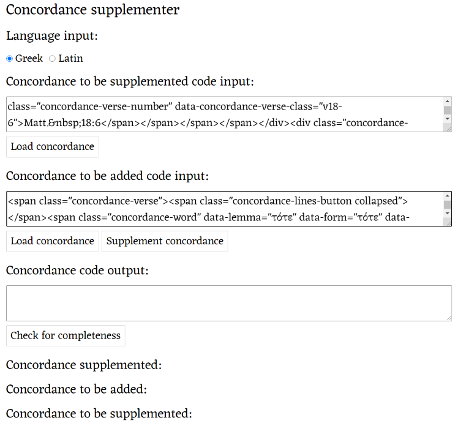
Let's say we want to compile grammatical concordance for all books of the New Testament starting from Gospel according to Matthew and ending with Revelation to John the Theologian. To achieve this we at first need to supplement concordance of the Gospel according to Matthew with the concordance of the Gospel according to Mark, then the resulting concordance we should supplement with the concordance of the Gospel according to Luke etc. until we reach the last book of the New Testament, the Revelation to John the Theologian.
The value of the form‘s field "Language" should be "Greek" because New Testament is in Greek.
The value of the form‘s field "Concordance to be supplemented" should be the code of the concordance of the Gospel according to Matthew.
The value of the form‘s field "Concordance to be supplemented" should be the code of the concordance of the Gospel according to Mark.
Having filled form's fields with these values, we should load both concordances by clicking "Load concordance" buttons and then we should click the button "Supplement concordance". The code of resulting concordance will be outputted in "Concordance code" textarea and resulting concordance will be displayed under "Concordance supplemented:" heading. Now we can click "Check for completeness" button to see if everything which was included in concordance to be supplemented and in concordance to be added is also included in resulting concordance. All words and line numbers of the concordance to be supplemented and of the concordance to be added should become green. If any word or line number became red and is included in square brackets (symbols []), inform about it senior editor.
Now that we have grammatical concordance of the Gospels according to Matthew and Mark, let's copy its code and paste it in the field "Concordance to be supplemented", then let's paste the code of the concordance of the Gospel according to Luke in the field "Concordance to be added". After clicking button "Supplement concordance" we will have concordance which includes words of these three books. We can repeat this process untill we compile concordance for all 27 books of the New Testament. The resulting concordance code should be converted to string and be made the second argument of the function "ParsedClassicsData._loadResource" as has been described above.
The code of the function "ParsedClassicsData._loadResource" with its arguments should be saved in the file named, e.g. "nt_conc_by_parsedclassics.js". The file should be placed in directory /data/resources/concordance .
Creating contents file
Concordance data file includes for each word form the list book abbreviations together with line numbers indicating places where the word form is present. Clicking the line number should open the original text in exact place. To enable this functionality we need to add contents file.
Let's create contents file for concordance containing words of all 27 New Testament's books. The name of the contents file should be formed by adding "lines_" and "_contents" to respectively beginning and end of the data file's name, and this way we get file name "lines_nt_conc_by_parsedclassics_contents.js".
The code inside the file "lines_nt_conc_by_parsedclassics_contents.js" will be as follows:
var lines_nt_conc_by_parsedclassics_contents = {
"nt_matthew_parsed_text": "Matt."
, "nt_mark_parsed_text": "Mark"
, "nt_luke_parsed_text": "Luke"
, "nt_john_parsed_text": "John"
, "nt_acts_parsed_text": "Acts"
, "nt_james_parsed_text": "James"
, "nt_peter_1_parsed_text": "1 Pet."
, "nt_peter_2_parsed_text": "2 Pet."
, "nt_john_1_parsed_text": "1 John"
, "nt_john_2_parsed_text": "2 John"
, "nt_john_3_parsed_text": "3 John"
, "nt_jude_parsed_text": "Jude"
, "nt_romans_parsed_text": "Rom."
, "nt_corinthians_1_parsed_text": "1 Cor."
, "nt_corinthians_2_parsed_text": "2 Cor."
, "nt_galatians_parsed_text": "Gal."
, "nt_ephesians_parsed_text": "Eph."
, "nt_philippians_parsed_text": "Phil."
, "nt_colossians_parsed_text": "Col."
, "nt_thessalonians_1_parsed_text": "1 Thess."
, "nt_thessalonians_2_parsed_text": "2 Thess."
, "nt_hebrews_parsed_text": "Heb."
, "nt_timothy_1_parsed_text": "1 Tim."
, "nt_timothy_2_parsed_text": "2 Tim."
, "nt_titus_parsed_text": "Titus"
, "nt_philemon_parsed_text": "Philem."
, "nt_revelation_parsed_text": "Rev."
, "titles": {
"nt_matthew_parsed_text": {
"author_orig": "Ἡ Καινὴ Διαθήκη"
, "collections_page_title_orig": "Τὸ κατὰ Ματθαῖον εὐαγγέλιον"
, "library_app_panel_text_from": "The New Testament in the original Greek. Byzantine textform. Compiled and arranged by M. A. Robinson and W. G. Pierpont. 2005. Southborough, MA: Chilton book publishing."
, "scanned_source_shortname": "new_testament_in_original_greek_ed_robinson_pierpont"
, "library_app_panel_note": "Parsing based on: morphological tagging by J. K. Tauber (2016)."
}
, "nt_mark_parsed_text": {
"author_orig": "Ἡ Καινὴ Διαθήκη"
, "collections_page_title_orig": "Τὸ κατὰ Μάρκον εὐαγγέλιον"
, "library_app_panel_text_from": "The New Testament in the original Greek. Byzantine textform. Compiled and arranged by M. A. Robinson and W. G. Pierpont. 2005. Southborough, MA: Chilton book publishing."
, "scanned_source_shortname": "new_testament_in_original_greek_ed_robinson_pierpont"
, "library_app_panel_note": "Parsing based on: morphological tagging by J. K. Tauber (2016)."
}
, "nt_luke_parsed_text": {
"author_orig": "Ἡ Καινὴ Διαθήκη"
, "collections_page_title_orig": "Τὸ κατὰ Λουκᾶν εὐαγγέλιον"
, "library_app_panel_text_from": "The New Testament in the original Greek. Byzantine textform. Compiled and arranged by M. A. Robinson and W. G. Pierpont. 2005. Southborough, MA: Chilton book publishing."
, "scanned_source_shortname": "new_testament_in_original_greek_ed_robinson_pierpont"
, "library_app_panel_note": "Parsing based on: morphological tagging by J. K. Tauber (2016)."
}
// part of code has been cut out
, "nt_revelation_parsed_text": {
"author_orig": "Ἡ Καινὴ Διαθήκη"
, "collections_page_title_orig": "Ἀποκάλυψις Ἰωάννου τοῦ θεολόγου"
, "library_app_panel_text_from": "The New Testament in the original Greek. Byzantine textform. Compiled and arranged by M. A. Robinson and W. G. Pierpont. 2005. Southborough, MA: Chilton book publishing."
, "scanned_source_shortname": "new_testament_in_original_greek_ed_robinson_pierpont"
, "library_app_panel_note": "Parsing based on: morphological tagging by J. K. Tauber (2016)."
}
}
};
This code initializes global variable "lines_nt_conc_by_parsedclassics_contents", which as you see has the same name as the file. The value of this variable JSON object. The keys of this object are resource shortnames of parsed text resources and the values of these keys are abbreviations of the titles of the New Testament books. There are also the key "titles" whose value is an JSON object having as its keys also resource shortnames of the parsed text resources. The values of these keys are JSON objects having several keys: "author_orig", "collections_page_title_orig", "library_app_panel_text_from", "scanned_source_shortname", "library_app_panel_note". These keys together with their values should be copied from the files which contain relevant collection definitions, i.e. from files in /data/catalogues directory.
Now put the file "lines_nt_conc_by_parsedclassics_contents.js" to the directory /data/contents and then clicking on line numbers in concordance should open the original text in exact place.
Lexicon (scanned)
Creating image files
To create scanned resource of the type "Lexicon" you first need a series of JPG images, each image picturing one page of the book. Scanned resource always includes all pages of the book, i.e. each page from the title page to the last, not including covers and promotional materials. About creating a series of JPG files for scanned resource, read in Common tasks the sections on scanning a book, on converting PDF file to images, on batch renaming of files, on cropping images, on retouching images, on optimizing size of JPG files.
When you have a series of JPG files each image picturing one page of the book and named starting from page0001.jpg, submit them to the senior editor which will upload those files to the server. The files will be uploaded to the directory specified in catalogue file as the value of the key "scanned_source_shortname". For example in the Epistle to Titus collection the Greek and English lexicon of the New Testament by E. Robinson has been listed and the value of the key "scanned_source_shortname" is "greek_and_english_lexicon_of_nt_by_robinson". It means that the pictures of the pages must be uploaded to the directory /_scans/greek_and_english_lexicon_of_nt_by_robinson .
Having uploaded the images of the pages to the server, senior editor should list the scanned book as described in section Listing scanned books.
After uploading the files of the scanned book and listing it among scanned books, it can be browsed using the value of the key "scanned_source_shortname" in the URL: parsedclassics.com/reader/embedded_bookreader.html?greek_and_english_lexicon_of_nt_by_robinson
In order for lexicon to work in sync with parsed text, the contents file should be prepared. Lexicon resources, which use the same scanned book, share the same contents file. This means that there can be two cases: (1) there is no contents file and we need to create it; (2) there is contents file and we need to supplement it.
Creating new contents file
To create new contents file go to Word list generator page and fill the form:
The value of the form‘s field "Language" should be "Greek" because in Epistle to Titus collection parsed text resource is in Greek.
The value of the form‘s field "Parsed text code" should be full HTML code of the parsed text. Use browser’s HTML inspector (available on right-click in every major browser) to copy parsed text's HTML code from Library app’s page. To do this right-click inside HTML inspector's panel on the "div" element having "class" attribute "pc-content-panel-inner" and in context menu select option "Copy outerHTML":
Then paste the copied string into form‘s field. After that select and delete opening and closing "div" tags from the code pasted into field:
After filling fields with these values, click the button "Load text" and the text will be displayed beneath "Parsed text:" heading.
Then click the button "Generate list" and the pipe delimited alphabetical list of all words in the text will appear in "Word list" textarea.
The word list will be as this:
ἀγαθός|ἀγάπη|ἅγιος|ἁγνός|ἀδιαφθορία|ἀδόκιμος|ἀεί|αἱρετικός|αἰσχροκερδής|αἰσχρός|αἰτία|αἰών|αἰώνιος|ἄκαρπος|ἀκατάγνωστος|ἀλήθεια|ἀληθής|ἀλλά|ἀλλήλων|ἁμαρτάνω|ἄμαχος|ἀμήν|ἀναγκαῖος|ἀνακαίνωσις|ἀνατρέπω|ἀνέγκλητος|ἀνήρ|ἄνθρωπος|ἀνόητος|ἀνομία|ἀντέχομαι|ἀντιλέγω|ἀνυπότακτος|ἀνωφελής|ἀπειθής|ἄπιστος|ἀπό|Ἀπολλῶς|ἀπόστολος|ἀποστρέφω|ἀποτόμως|ἀργός|ἀρνέομαι|Ἀρτεμᾶς|ἀρχή|ἀσέβεια|ἀσπάζομαι|ἀσωτία|αὐθάδης|αὐτοκατάκριτος|αὐτός|ἀφθαρσία|ἀψευδής|βδελυκτός|βλασφημέω|βούλομαι|γάρ|γαστήρ|γενεαλογία|γίνομαι|γνήσιος|γυνή|δέ|δεσπότης|δεύτερος|δέω|διά|διαβεβαιόομαι|διάβολος|διάγω|διατάσσω|διδασκαλία|διδάσκω|διδαχή|δίδωμι|δίκαιος|δικαιοσύνη|δικαιόω|δικαίως|δόξα|δουλεύω|δοῦλος|δουλόω|δυνατός|ἑαυτοῦ|ἐγκρατής|ἐγώ|εἰ|εἰμί|εἰρήνη|εἷς|εἰς|ἐκ|ἐκεῖ|ἐκεῖνος|ἐκλεκτός|ἐκστρέφομαι|ἐκχέω|ἐλέγχω|ἔλεος|ἐλπίς|ἐν|ἐναντίος|ἐνδείκνυμι|ἐντολή|ἐντρέπω|ἐξουσία|ἐπαγγέλλομαι|ἐπί|ἐπίγνωσις|ἐπιδιορθόω|ἐπιεικής|ἐπιθυμία|ἐπίσκοπος|ἐπιστομίζω|ἐπιταγή|ἐπιφαίνω|ἐπιφάνεια|ἔργον|ἔρις|ἔρχομαι|ἕτοιμος|εὐάρεστος|εὐσέβεια|εὐσεβῶς|ἔχω|ζάω|ζηλωτής|Ζηνᾶς|ζήτησις|ζωή|ἤ|ἡδονή|ἡμέτερος|θεός|θηρίον|ἴδιος|ἱεροπρεπής|Ἰησοῦς|ἵνα|Ἰουδαϊκός|καθαρίζω|καθαρός|καθίστημι|καί|καιρός|κακία|κακός|καλοδιδάσκαλος|καλός|κατά|καταλείπω|κατάστημα|κατηγορία|κέρδος|κήρυγμα|κληρονόμος|κοινός|κοσμέω|κοσμικός|Κρής|Κρήτη|κρίνω|κύριους|λαλέω|λαός|λέγω|λείπω|λόγος|λουτρόν|λυτρόομαι|μακάριος|μάλιστα|μανθάνω|μαρτυρία|ματαιολόγος|μάταιος|μάχη|μέγας|μέν|μετά|μή|μηδείς|μιαίνω|μισέω|μῦθος|μωρός|νέος|νηφάλιος|Νικόπολις|νομικός|νοσφίζομαι|νουθεσία|νοῦς|νῦν|ὁ|οἶδα|οἰκονόμος|οἶκος|οἰκουργός|οἶνος|ὅλος|ὁμολογέω|ὁράω|ὀργίλος|ὅς|ὅσιος|ὅστις|ὅταν|ὅτε|ὅτι|οὐ|οὐδείς|οὗτος|παιδεύω|παλιγγενεσία|παραιτέομαι|παρακαλέω|παραχειμάζω|παρέχω|πάροινος|πᾶς|πατήρ|Παῦλος|πειθαρχέω|πέμπω|περί|περιΐστημι|περιούσιος|περιτομή|περιφρονέω|πιστεύω|πίστις|πιστός|πλανάω|πλήκτης|πλουσίως|πνεῦμα|ποιέω|ποικίλος|πόλις|πολύς|ποτέ|πραΰτης|πρέπω|πρεσβύτερος|πρεσβύτης|πρεσβῦτις|πρό|προΐστημι|προπέμπω|πρός|προσδέχομαι|προσέχω|προφήτης|σεαυτοῦ|σεμνός|σεμνότης|σπουδάζω|σπουδαίως|στυγητός|σύ|συνείδησις|σῴζω|σωτήρ|σωτήριος|σωφρονέω|σωφρονίζω|σωφρόνως|σώφρων|τέκνον|τίς|τις|Τίτος|τοιοῦτος|τύπος|Τυχικός|ὑγιαίνω|ὑγιής|ὑπέρ|ὑπομιμνῄσκω|ὑπομονή|ὑποτάσσω|φανερόω|φαῦλος|φθόνος|φιλάγαθος|φίλανδρος|φιλανθρωπία|φιλέω|φιλόξενος|φιλότεκνος|φρεναπάτης|φροντίζω|χάριν|χάρις|χρεία|χρηστότης|χριστός|χρόνος|ψεύστης|ὡς|ὡσαύτως|ὠφέλιμος
Then click the button "Check for completeness". After this all words beneath the heading "Parsed text" should be displayed on green backgound. If some words remain on white background, it means that the script was not able to generate complete list of words. Inform about it senior editor.
When you have pipe delimited alphabetical list of all words in the parsed text, go to Lexicon contents generator page and fill the form:
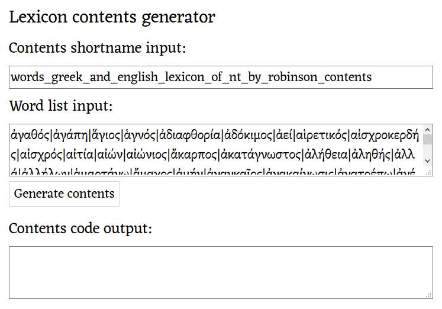
The value of the form‘s field "Contents shortname" should be the same as the value of the key "contents_shortname" in collection‘s catalogue. While creating collection‘s catalogue for Epistle to Titus collection we entered for this key the value "words_greek_and_english_lexicon_of_nt_by_robinson_contents", so we now should enter it as the value of the field "Contents shortname".
The value of the form‘s field "Word list" should be just created pipe delimited alphabetical list of all words in the parsed text.
After filling fields with these values click the button "Generate contents" and the contents code will appear in "Contents code" textarea.
The contents code will be as this:
var words_greek_and_english_lexicon_of_nt_by_robinson_contents = {
/*Title page*/ "w-title": ""
, /*ἀγαθός*/ "w-7936-947-945-952-972-962": ""
, /*ἀγάπη*/ "w-7936-947-940-960-951": ""
, /*ἅγιος*/ "w-7941-947-953-959-962": ""
, /*ἁγνός*/ "w-7937-947-957-972-962": ""
// part of code has been cut out
, /*χριστός*/ "w-967-961-953-963-964-972-962": ""
, /*χρόνος*/ "w-967-961-972-957-959-962": ""
, /*ψεύστης*/ "w-968-949-973-963-964-951-962": ""
, /*ὡς*/ "w-8033-962": ""
, /*ὡσαύτως*/ "w-8033-963-945-973-964-969-962": ""
, /*ὠφέλιμος*/ "w-8032-966-941-955-953-956-959-962": ""
};
Now we need to enter values for each key of this JSON object. The keys are strings starting with "w" and consisting from numerical letter codes. "v-title" is the key for the title page of the lexicon. The values should be numbers from image file names (without zero padding). View images of the scanned files, look for the numbers in their file names and enter those numbers as the values for relevant keys.
We get the following code:
var words_greek_and_english_lexicon_of_nt_by_robinson_contents = {
/*Title page*/ "w-title": ""
, /*ἀγαθός*/ "w-7936-947-945-952-972-962": "15"
, /*ἀγάπη*/ "w-7936-947-940-960-951": "17"
, /*ἅγιος*/ "w-7941-947-953-959-962": "19"
, /*ἁγνός*/ "w-7937-947-957-972-962": "21"
// part of code has been cut out
, /*χριστός*/ "w-967-961-953-963-964-972-962": "799"
, /*χρόνος*/ "w-967-961-972-957-959-962": "800"
, /*ψεύστης*/ "w-968-949-973-963-964-951-962": "804"
, /*ὡς*/ "w-8033-962": "810"
, /*ὡσαύτως*/ "w-8033-963-945-973-964-969-962": "813"
, /*ὠφέλιμος*/ "w-8032-966-941-955-953-956-959-962": "815"
};
This code should be saved in the file having the same name as the value in "Contents shortname" field. The file should be placed in "contents" directory: /data/contents/words_greek_and_english_lexicon_of_nt_by_robinson_contents.js
After doing this concordance resource should work in sync with parsed text resource.
Supplementing contents file
In case there is already contents file for scanned lexicon we need to supplement contents.
To do this go to Lexicon contents supplementer page and fill the form:
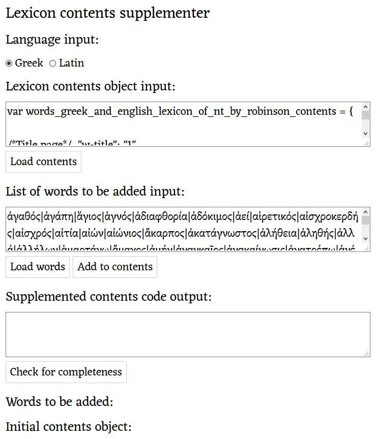
The value of the form‘s field "Language" should be "Greek" because in Epistle to Titus collection parsed text resource is in Greek.
The value of the form‘s field "Lexicon contents object" should be complete content of the lexicon contents file. In previous section we saved it as /data/contents/words_greek_and_english_lexicon_of_nt_by_robinson_contents.js
The value of the form‘s field "List of words to be added" should be pipe delimited alphabetical list of words contained in parsed text resource. How to create such word list has been described in the section Creating new contents file.
After filling fields with these values, click the button "Load contents" and the code of the lexicon contents object will be displayed beneath "Initial contents object:" heading.
Then click the button "Load words" and the list of words to be added to contents will be displayed beneath "Words to be added:" heading.
After that click the button "Add to contents" and the code of supplemented contents object will appear in "Supplemented contents code" textarea.
Then click the button "Check for completeness" and all words beneath the headings "Words to be added:" and "Initial contents object:" should be displayed in green background. If some words will not be displayed in green background, inform about it senior editor.
The code generated will be as this:
var words_greek_and_english_lexicon_of_nt_by_robinson_contents = {
/*Title page*/ "w-title": "1"
, /*ἀγαθός*/ "w-7936-947-945-952-972-962": "15"
, /*ἀγαπάω*/ "w-7936-947-945-960-940-969": "16"
, /*ἀγάπη*/ "w-7936-947-940-960-951": "17"
, /*ἀγαπητός*/ "w-7936-947-945-960-951-964-972-962": "17"
, /*ἄγγελος*/ "w-7940-947-947-949-955-959-962": "18"
, /*ἅγιος*/ "w-7941-947-953-959-962": "19"
, /*ἁγνός*/ "w-7937-947-957-972-962": ""
, /*ἀγών*/ "w-7936-947-974-957": "23"
// part of code has been cut out
, /*χρόνος*/ "w-967-961-972-957-959-962": ""
, /*ψαλμός*/ "w-968-945-955-956-972-962": "803"
, /*ψεύδομαι*/ "w-968-949-973-948-959-956-945-953": "803"
, /*ψεύστης*/ "w-968-949-973-963-964-951-962": ""
, /*ψυχή*/ "w-968-965-967-942": "805"
, /*ὧδε*/ "w-8039-948-949": "808"
, /*ᾠδή*/ "w-8096-948-942": "808"
, /*ὡς*/ "w-8033-962": "810"
, /*ὡσαύτως*/ "w-8033-963-945-973-964-969-962": ""
, /*ὠφέλιμος*/ "w-8032-966-941-955-953-956-959-962": ""
};
Notice, tat some keys have numerical values while the other keys have empty strings as their values. The latter represents the words which were not included in the initial contents object.
Now we need to enter numerical values for each key having empty string as its value. The values should be numbers from image file names (without zero padding). So, view images of the scanned files, look for the numbers in their file names and enter those numbers as the values for relevant keys.
We get the following code:
var words_greek_and_english_lexicon_of_nt_by_robinson_contents = {
/*Title page*/ "w-title": "1"
, /*ἀγαθός*/ "w-7936-947-945-952-972-962": "15"
, /*ἀγαπάω*/ "w-7936-947-945-960-940-969": "16"
, /*ἀγάπη*/ "w-7936-947-940-960-951": "17"
, /*ἀγαπητός*/ "w-7936-947-945-960-951-964-972-962": "17"
, /*ἄγγελος*/ "w-7940-947-947-949-955-959-962": "18"
, /*ἅγιος*/ "w-7941-947-953-959-962": "19"
, /*ἁγνός*/ "w-7937-947-957-972-962": "21"
, /*ἀγών*/ "w-7936-947-974-957": "23"
// part of code has been cut out
, /*χρόνος*/ "w-967-961-972-957-959-962": "800"
, /*ψαλμός*/ "w-968-945-955-956-972-962": "803"
, /*ψεύδομαι*/ "w-968-949-973-948-959-956-945-953": "803"
, /*ψεύστης*/ "w-968-949-973-963-964-951-962": "804"
, /*ψυχή*/ "w-968-965-967-942": "805"
, /*ὧδε*/ "w-8039-948-949": "808"
, /*ᾠδή*/ "w-8096-948-942": "808"
, /*ὡς*/ "w-8033-962": "810"
, /*ὡσαύτως*/ "w-8033-963-945-973-964-969-962": "813"
, /*ὠφέλιμος*/ "w-8032-966-941-955-953-956-959-962": "815"
};
Replace with this code the contents of the file from which initial code was taken (in our case this was the file /data/contents/words_greek_and_english_lexicon_of_nt_by_robinson_contents.js) and save it.
After doing this lexicon resource should work in sync with parsed text resource.
Workflows for multiple collections
Usually scanned resource of the type "Lexicon" is being included into several collections. E.g. such resource as E. Robinson's Greek and English lexicon of the New Testament will be used in every collection dedicated to certain book of the New Testament. This means that the same contents file of the scanned resource of the type "Lexicon" will be used by all relevant collections.
There are several workflows for creating contents file to be used by several collections.
Supplementing in stages
One possible workflow is as follows: at first we create new contents file to be used by certain single collection and fill the gaps with page numbers for all lemmas found in the original text of that collection. Then we supplement the contents file with the lemmas found in original text of another collection and fill the gaps with page numbers of these lemmas. And we repeat this process again and again untill all lemmas of the all original texts of the all relevant collections are included in the contents file and all relevant page numbers are filled in.
This workflow has the advantage that we can work only with lemmas of the original text of the single collection and doing so quickly prepare one or more resources of the type "Lexicon" to be used inside single collection. The disadvantage is that in each cycle we need again to browse through all pages of the scanned book in search for relevant lemmas and that takes a lot of time.
Supplementing at start
Another possible workflow is as follows: at first we create new contents file to be used by certain single collection. Then we don't fill the gaps with page numbers, but instead supplement the contents file with the lemmas found in original text of another collection. And we repeat this process again and again untill all lemmas of the all original texts of the all relevant collections are included in the contents file. Then we browse through all scanned pages of the scanned book, find the page numbers of the all lemmas and fill the gaps in contents file with these page numbers.
This workflow has the advantage that we must browse though all pages of the scanned book only once and this takes much less time than repeated browsing of the workflow described above. But the disadvantage is that we cannot work with the single collection at the time and must create huge contents file at once.
Cleaning page numbers
By using the first or the second workflow of those described above we get contents file of the resource of the type "Lexicon" which is being used by multiple collections. We may need to add another resource of the type "Lexicon" to the same collections. E.g. after having added E. Robinson's Greek and English lexicon of the New Testament to every collection dedicated to certain book of the New Testament we may need to add F. Zorell's Lexicon Graecum Novi Testamenti to the same collections. In such cases we can shortcut the process by using the third workflow.
The contents file for the new resource of the type "Lexicon" should contain the same lemmas. This means that we can reuse existing contens file: we only need to remove page numbers, to change the name of the contents object and to change the name of the file. To remove page numbers from the contents file use Lexicon page numbers cleaner. Copy contents object from the contens file, paste it in the field "Lexicon contents object" and click the button "Clean page numbers":
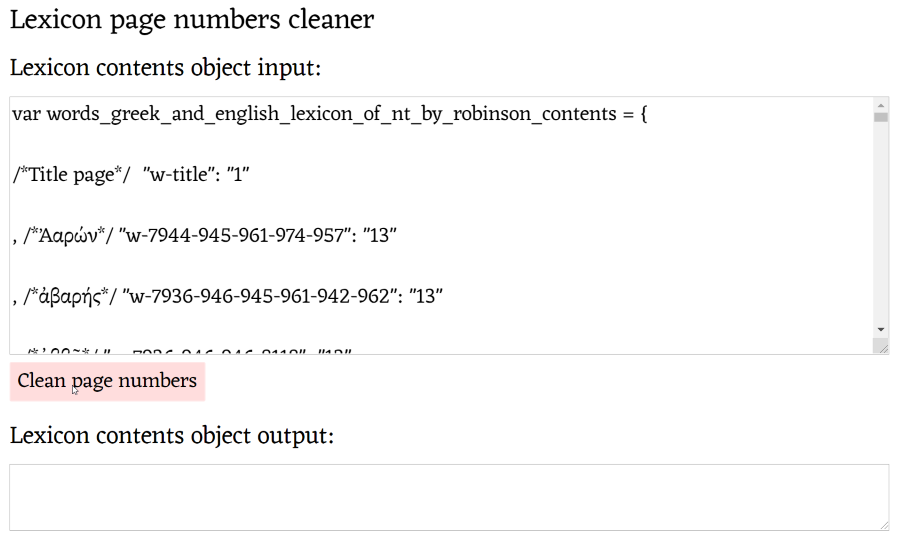
Then save the outputted contens object without page numbers using relevant contents object name and file name.
Importing after cleaning
It may happen that one resource of the type "Lexicon" has been added to multiple collections and another resource of the type "Lexicon" has been added to just single or several collections. E.g. such resource as E. Robinson's Greek and English lexicon of the New Testament has been added to every collection dedicated to certain book of the New Testament, but such resource as F. Zorell's Lexicon Graecum Novi Testamenti has been added to one or couple of collections. Now we need to add this resource to remaining collections.
In this case we need to use the following workflow. At first we should take that bigger contents file which contains comprehensive list of lemmas found in multiple collections and remove the page numbers from it. After that we need to import data into cleaned contents object from the contents object which contains less comprehensive list of lemmas from single collection or couple of collections. To do this go to Lexicon contents importer form anf fill the fields:
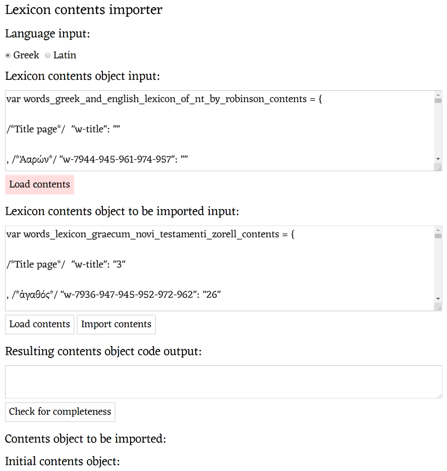
The value of the form‘s field "Language" should be "Greek" because lemmas in both contents objects are in Greek.
The value of the field "Lexicon contents object" should be contents object in which page numbers have been removed, i.e. that contents object which contains comprehensive list of lemmas found in multiple collections.
The value of the field "Lexicon contents object to be imported" should be contents object with all page numbers intact which contains less comprehensive list of lemmas from single collection or couple of collections.
After filling fields with such values click the button "Load contents" which is below the first textarea and the list of lemmas contained in the initial contents object will be displayed below the heading "Initial contents object:". Then click the button "Load contents" which is below the second textarea and the list of lemmas contained in contents object to be imported will be displayed below the heading "Contents object to be imported:". After that click the button "Import contents" and the resulting contents object will be outputted inside textarea "Resulting contents object code". Then click the button "Check for completeness". All lemmas below the headings "Contents object to be imported:" and "Initial contents object:" should be colored green. If certain lemmas remain not colored, inform about it senior editor.
Then save the resulting contents object using relevant object name and file name.
Lexicon (transcribed)
Usually lexicon contains many hundreds of pages of text which uses complex formatting. In such situation there are no sense to create transcribed resource; scanned resource will be adequate solution.
But there are some smaller and simpler lexicons which do not use complex formatting. In such case creating transcribed resource might be considered. As an example of transcribed lexicon resource Greek-English lexicon to the New Testament by Th. S. Green has been listed in the Epistle to Titus collection.
Creating transcribed resource of the type "lexicon" involves creating one data file.
Creating data file
The text of lexicon articles should be HTML formatted according simple convention. Here is example of HTML formatted lexicon articles:
<h3>Α, α, <i>Ἄλφα</i></h3>
<dl>
<dt><span class="lexicon-heading" data-lemma="α">Α</span>, α, <i>Alpha</i>,</dt>
<dd>the first letter in the Greek Alphabet, and used for the <i>first</i>, Re. 1.8, 11; 21.6; 22.13.</dd>
<dd>In composition, it denotes privation; sometimes augmentation, and union.</dd>
<dt><span class="lexicon-heading" data-lemma="αβαρής">Αβᾰρής</span>, έος, οῦς, ὁ, ἡ, τὸ, -ές, (ἀ & <a class="inner-link" data-anchor="green-nt-lex-βαρος">βάρος</a>)</dt>
<dd>not burdensome, not chargeable, 2 Co. 11.9.</dd>
<dt><span class="lexicon-heading" data-lemma="αββᾶ">Αββᾶ</span></dt>
<dd>ind. ch. or Sy. <span class="hebrew">אבא</span>, father, Mar. 14.36. Ro.8.15 Ga. 4.6.</dd>
<dt><span class="lexicon-heading" data-lemma="ἄβυσσος">Ἄβυσσος</span>, ου, ἡ,</dt>
<dd><i>pr.</i> bottomless; place of the dead, hell.</dd>
<dt><span class="lexicon-heading" data-lemma="ἀγαθοεργέω">Ἀγαθοεργέω</span>, ῶ, Ἀγαθουργῶ, (<a class="inner-link" data-anchor="green-nt-lex-αγαθος">ἀγαθός</a> & <a class="inner-link" data-anchor="green-nt-lex-εργον">ἔργον</a>)</dt>
<dd>f. ήσω, </dd>
<dd>to do good, confer benefits, 1 Ti.6.18 N.T.</dd>
<dt><span class="lexicon-heading" data-lemma="αγαθοποιέω">Αγαθοποιέω</span>, ῶ, (<a class="inner-link" data-anchor="green-nt-lex-αγαθος">ἀγαθός</a> & <a class="inner-link" data-anchor="green-nt-lex-ποιεω">ποιέω</a>)</dt>
<dd>f. ήσω, </dd>
<dd>to do good, benefit, do well: (S.) <i>whence</i></dd>
<dt><span class="lexicon-heading" data-lemma="ἀγαθοποιΐα">Ἀγαθοποιΐα</span>, ας, ἡ,</dt>
<dd>well-doing, probity, 1 Pe. 4.19 L.G.</dd>
<dt><span class="lexicon-heading" data-lemma="ἀγαθοποιός">Ἀγαθοποιός</span>, οῦ, ὁ, ἡ,</dt>
<dd>a well-doer, 1 Pe. 2.14 L.G.</dd>
<dt><a class="pc-anchor" id="green-nt-lex-αγαθος"><span class="lexicon-heading" data-lemma="ἀγαθός">Ἀγᾰθός</span></a>, ή, όν, </dt>
<dd>good, profitable, generous, beneficent, upright, virtuous: <i>whence</i></dd>
<!-- part of code has been cut out -->
</dl>
<h3>Β, β, <i>Βῆτα</i></h3>
<dl>
<dt><a class="pc-anchor" id="green-nt-lex-βαθμος"><span class="lexicon-heading" data-lemma="βαθμός">Βαθμός</span></a>, οῦ, ὁ, (<a class="inner-link" data-anchor="green-nt-lex-βαινω">βαίνω</a>)</dt>
<dd><i>pr.</i> a step, stair; <i>met.</i> grade of dignity, degree, rank standing, 1 Ti 3.13.</dd>
<dt><span class="lexicon-heading" data-lemma="βάθος">Βάθος</span>, εος, ους, τό,</dt>
<dd>depth; τὸ βάθος, deep water, Lu. 5.4. Mat. 13.5, et al.; <i>met.</i> fullness, abundance, immensity, Ro. 11.33. 2 Co. 8.2; an extreme degree, 2 Co. 8.2; <i>pl.</i> deep laid plans, profound, secret things, 1 Co. 2.10. Re. 2.24.</dd>
<dt><span class="lexicon-heading" data-lemma="βαθύνω">Βαθύνω</span>, </dt>
<dd>f. ῠνῶ, </dd>
<dd>to deepen, excavate, Lu. 6.48 <i>from</i></dd>
<dt><a class="pc-anchor" id="green-nt-lex-βαθυς"><span class="lexicon-heading" data-lemma="βαθύς">Βαθύς</span></a>, εῖα, ύ, </dt>
<dd>deep. Jno. 4.11; <i>met.</i> deep, profound, Ac. 20.9; ὄρθρου βαθέος, <i>lit.</i> at deep morning twilight <i>i.e.</i> at the earliest dawn, Lu. 24.1.</dd>
<dt><span class="lexicon-heading" data-lemma="βάϊον">Βάϊον</span>, <i>v.</i> Βαΐον, ου, τό, </dt>
<dd>a palm branch, Jno. 12.13. S.</dd>
<dt><span class="lexicon-heading" data-lemma="βαλάντιον">Βαλάντιον</span>, ου, τό, </dt>
<dd>a bag, purse, Lu. 10.4; 12.33; 22.35, 36.</dd>
<!-- part of code has been cut out -->
<dt><a class="pc-anchor" id="green-nt-lex-βαρος"><span class="lexicon-heading" data-lemma="βάρος">Βάρος</span></a>, εος, τό,</dt>
<dd>weight, heaviness; a burden, any thing grievous and hard to be borne, Mat. 20.12. Ac. 15.28. Re. 2.24; burden, charge, <i>or,</i> weight, influence, dignity, honour, 1 Thes. 2.6; <i>with another noun in government,</i> fullness, abundance, excellence, 2 Co. 4.17.</dd>
<!-- part of code has been cut out -->
</dl>
<!-- part of code has been cut out -->
The following conventions are used to format lexicon articles.
(1) On the top of the series of articles on words starting from certain letter is that letter wrapped by "h3" tag.
(2) Series of articles on words starting from certain letter is wrapped by "dl" tag.
(3) The words which the lexicon explains are wrapped by "dt" tag.
(4) The lemmas of explained words are wrapped by "span" tags having "class" attribute value "lexicon-heading". These "span" tags have "data-lemma" attribute. The value of this attribute is lowercase lemma of the explained word.
(5) Explanation of the word is wrapped by "dd" tag. Certain word may have several explanations, so below "dt" tag may stand several "dd" tags.
(6) Inner links, i.e. the links that lead from one place in the lexicon to another place in the same lexicon are wrapped by "a" tags. Inner link anchor has "class" attribute value "pc-anchor" and "id" attribute value consisting from lowercase lemma prefixed by certain string indicating lexicon title. Inner link himself has "class" attribute value "inner-link" and "data-anchor" attribute value consisting from lowercase lemma prefixed by certain string indicating lexicon title. In code example above there is link <a class="inner-link" data-anchor="green-nt-lex-βαρος" >βάρος</a> which leads to its anchor <a class="pc-anchor" id="green-nt-lex-βαρος" >Βάρος</a>.
Using these conventions lexicon articles should be formatted. There are no definite conventions how to format introduction, table of contents, various indexes, etc. Ask about it senior editor.
HTML formatted lexicon text should be converted to javascript string. It is easy to do by wrapping each line by apostroph symbols and using plus symbol at the end of the lines (if there are apostrophs in the text, they should be escaped using "\" symbol):
'<h3>Α, α, <i>Ἄλφα</i></h3>' +
'<dl>' +
'<dt><span class="lexicon-heading" data-lemma="α">Α</span>, α, <i>Alpha</i>,</dt>' +
'<dd>the first letter in the Greek Alphabet, and used for the <i>first</i>, Re. 1.8, 11; 21.6; 22.13.</dd>' +
'<dd>In composition, it denotes privation; sometimes augmentation, and union.</dd>' +
'<dt><span class="lexicon-heading" data-lemma="αβαρής">Αβᾰρής</span>, έος, οῦς, ὁ, ἡ, τὸ, -ές, (ἀ & <a class="inner-link" data-anchor="green-nt-lex-βαρος">βάρος</a>)</dt>' +
'<dd>not burdensome, not chargeable, 2 Co. 11.9.</dd>' +
'<dt><span class="lexicon-heading" data-lemma="αββᾶ">Αββᾶ</span></dt>' +
'<dd>ind. ch. or Sy. <span class="hebrew">אבא</span>, father, Mar. 14.36. Ro.8.15 Ga. 4.6.</dd>' +
'<dt><span class="lexicon-heading" data-lemma="ἄβυσσος">Ἄβυσσος</span>, ου, ἡ,</dt>' +
'<dd><i>pr.</i> bottomless; place of the dead, hell.</dd>' +
'<dt><span class="lexicon-heading" data-lemma="ἀγαθοεργέω">Ἀγαθοεργέω</span>, ῶ, Ἀγαθουργῶ, (<a class="inner-link" data-anchor="green-nt-lex-αγαθος">ἀγαθός</a> & <a class="inner-link" data-anchor="green-nt-lex-εργον">ἔργον</a>)</dt>' +
'<dd>f. ήσω, </dd>' +
'<dd>to do good, confer benefits, 1 Ti.6.18 N.T.</dd>' +
'<dt><span class="lexicon-heading" data-lemma="αγαθοποιέω">Αγαθοποιέω</span>, ῶ, (<a class="inner-link" data-anchor="green-nt-lex-αγαθος">ἀγαθός</a> & <a class="inner-link" data-anchor="green-nt-lex-ποιεω">ποιέω</a>)</dt>' +
'<dd>f. ήσω, </dd>' +
'<dd>to do good, benefit, do well: (S.) <i>whence</i></dd>' +
'<dt><span class="lexicon-heading" data-lemma="ἀγαθοποιΐα">Ἀγαθοποιΐα</span>, ας, ἡ,</dt>' +
'<dd>well-doing, probity, 1 Pe. 4.19 L.G.</dd>' +
'<dt><span class="lexicon-heading" data-lemma="ἀγαθοποιός">Ἀγαθοποιός</span>, οῦ, ὁ, ἡ,</dt>' +
'<dd>a well-doer, 1 Pe. 2.14 L.G.</dd>' +
'<dt><a class="pc-anchor" id="green-nt-lex-αγαθος"><span class="lexicon-heading" data-lemma="ἀγαθός">Ἀγᾰθός</span></a>, ή, όν, </dt>' +
'<dd>good, profitable, generous, beneficent, upright, virtuous: <i>whence</i></dd>' +
// part of code has been cut out
'</dl>' +
'<h3>Β, β, <i>Βῆτα</i></h3>' +
'<dl>' +
'<dt><a class="pc-anchor" id="green-nt-lex-βαθμος"><span class="lexicon-heading" data-lemma="βαθμός">Βαθμός</span></a>, οῦ, ὁ, (<a class="inner-link" data-anchor="green-nt-lex-βαινω">βαίνω</a>)</dt>' +
'<dd><i>pr.</i> a step, stair; <i>met.</i> grade of dignity, degree, rank standing, 1 Ti 3.13.</dd>' +
'<dt><span class="lexicon-heading" data-lemma="βάθος">Βάθος</span>, εος, ους, τό,</dt>' +
'<dd>depth; τὸ βάθος, deep water, Lu. 5.4. Mat. 13.5, et al.; <i>met.</i> fullness, abundance, immensity, Ro. 11.33. 2 Co. 8.2; an extreme degree, 2 Co. 8.2; <i>pl.</i> deep laid plans, profound, secret things, 1 Co. 2.10. Re. 2.24.</dd>' +
'<dt><span class="lexicon-heading" data-lemma="βαθύνω">Βαθύνω</span>, </dt>' +
'<dd>f. ῠνῶ, </dd>' +
'<dd>to deepen, excavate, Lu. 6.48 <i>from</i></dd>' +
'<dt><a class="pc-anchor" id="green-nt-lex-βαθυς"><span class="lexicon-heading" data-lemma="βαθύς">Βαθύς</span></a>, εῖα, ύ, </dt>' +
'<dd>deep. Jno. 4.11; <i>met.</i> deep, profound, Ac. 20.9; ὄρθρου βαθέος, <i>lit.</i> at deep morning twilight <i>i.e.</i> at the earliest dawn, Lu. 24.1.</dd>' +
'<dt><span class="lexicon-heading" data-lemma="βάϊον">Βάϊον</span>, <i>v.</i> Βαΐον, ου, τό, </dt>' +
'<dd>a palm branch, Jno. 12.13. S.</dd>' +
'<dt><span class="lexicon-heading" data-lemma="βαλάντιον">Βαλάντιον</span>, ου, τό, </dt>' +
'<dd>a bag, purse, Lu. 10.4; 12.33; 22.35, 36.</dd>' +
// part of code has been cut out
'<dt><a class="pc-anchor" id="green-nt-lex-βαρος"><span class="lexicon-heading" data-lemma="βάρος">Βάρος</span></a>, εος, τό,</dt>' +
'<dd>weight, heaviness; a burden, any thing grievous and hard to be borne, Mat. 20.12. Ac. 15.28. Re. 2.24; burden, charge, <i>or,</i> weight, influence, dignity, honour, 1 Thes. 2.6; <i>with another noun in government,</i> fullness, abundance, excellence, 2 Co. 4.17.</dd>' +
// part of code has been cut out
'</dl>' +
// part of code has been cut out
This string should be made the second argument of the function "ParsedClassicsData._loadResource". The first argument of this function should be the value of the key "resource_shortname" from collection catalogue. Transcribed lexicon resource shortname from Epistle to Titus catalogue is "greek_lexicon_to_nt_by_green", so this string will be the first argument.
This way we get such data file:
ParsedClassicsData._loadResource("greek_lexicon_to_nt_by_green",
'<h3>Α, α, <i>Ἄλφα</i></h3>' +
'<dl>' +
'<dt><span class="lexicon-heading" data-lemma="α">Α</span>, α, <i>Alpha</i>,</dt>' +
'<dd>the first letter in the Greek Alphabet, and used for the <i>first</i>, Re. 1.8, 11; 21.6; 22.13.</dd>' +
'<dd>In composition, it denotes privation; sometimes augmentation, and union.</dd>' +
'<dt><span class="lexicon-heading" data-lemma="αβαρής">Αβᾰρής</span>, έος, οῦς, ὁ, ἡ, τὸ, -ές, (ἀ & <a class="inner-link" data-anchor="green-nt-lex-βαρος">βάρος</a>)</dt>' +
'<dd>not burdensome, not chargeable, 2 Co. 11.9.</dd>' +
'<dt><span class="lexicon-heading" data-lemma="αββᾶ">Αββᾶ</span></dt>' +
'<dd>ind. ch. or Sy. <span class="hebrew">אבא</span>, father, Mar. 14.36. Ro.8.15 Ga. 4.6.</dd>' +
'<dt><span class="lexicon-heading" data-lemma="ἄβυσσος">Ἄβυσσος</span>, ου, ἡ,</dt>' +
'<dd><i>pr.</i> bottomless; place of the dead, hell.</dd>' +
'<dt><span class="lexicon-heading" data-lemma="ἀγαθοεργέω">Ἀγαθοεργέω</span>, ῶ, Ἀγαθουργῶ, (<a class="inner-link" data-anchor="green-nt-lex-αγαθος">ἀγαθός</a> & <a class="inner-link" data-anchor="green-nt-lex-εργον">ἔργον</a>)</dt>' +
'<dd>f. ήσω, </dd>' +
'<dd>to do good, confer benefits, 1 Ti.6.18 N.T.</dd>' +
'<dt><span class="lexicon-heading" data-lemma="αγαθοποιέω">Αγαθοποιέω</span>, ῶ, (<a class="inner-link" data-anchor="green-nt-lex-αγαθος">ἀγαθός</a> & <a class="inner-link" data-anchor="green-nt-lex-ποιεω">ποιέω</a>)</dt>' +
'<dd>f. ήσω, </dd>' +
'<dd>to do good, benefit, do well: (S.) <i>whence</i></dd>' +
'<dt><span class="lexicon-heading" data-lemma="ἀγαθοποιΐα">Ἀγαθοποιΐα</span>, ας, ἡ,</dt>' +
'<dd>well-doing, probity, 1 Pe. 4.19 L.G.</dd>' +
'<dt><span class="lexicon-heading" data-lemma="ἀγαθοποιός">Ἀγαθοποιός</span>, οῦ, ὁ, ἡ,</dt>' +
'<dd>a well-doer, 1 Pe. 2.14 L.G.</dd>' +
'<dt><a class="pc-anchor" id="green-nt-lex-αγαθος"><span class="lexicon-heading" data-lemma="ἀγαθός">Ἀγᾰθός</span></a>, ή, όν, </dt>' +
'<dd>good, profitable, generous, beneficent, upright, virtuous: <i>whence</i></dd>' +
// part of code has been cut out
'</dl>' +
'<h3>Β, β, <i>Βῆτα</i></h3>' +
'<dl>' +
'<dt><a class="pc-anchor" id="green-nt-lex-βαθμος"><span class="lexicon-heading" data-lemma="βαθμός">Βαθμός</span></a>, οῦ, ὁ, (<a class="inner-link" data-anchor="green-nt-lex-βαινω">βαίνω</a>)</dt>' +
'<dd><i>pr.</i> a step, stair; <i>met.</i> grade of dignity, degree, rank standing, 1 Ti 3.13.</dd>' +
'<dt><span class="lexicon-heading" data-lemma="βάθος">Βάθος</span>, εος, ους, τό,</dt>' +
'<dd>depth; τὸ βάθος, deep water, Lu. 5.4. Mat. 13.5, et al.; <i>met.</i> fullness, abundance, immensity, Ro. 11.33. 2 Co. 8.2; an extreme degree, 2 Co. 8.2; <i>pl.</i> deep laid plans, profound, secret things, 1 Co. 2.10. Re. 2.24.</dd>' +
'<dt><span class="lexicon-heading" data-lemma="βαθύνω">Βαθύνω</span>, </dt>' +
'<dd>f. ῠνῶ, </dd>' +
'<dd>to deepen, excavate, Lu. 6.48 <i>from</i></dd>' +
'<dt><a class="pc-anchor" id="green-nt-lex-βαθυς"><span class="lexicon-heading" data-lemma="βαθύς">Βαθύς</span></a>, εῖα, ύ, </dt>' +
'<dd>deep. Jno. 4.11; <i>met.</i> deep, profound, Ac. 20.9; ὄρθρου βαθέος, <i>lit.</i> at deep morning twilight <i>i.e.</i> at the earliest dawn, Lu. 24.1.</dd>' +
'<dt><span class="lexicon-heading" data-lemma="βάϊον">Βάϊον</span>, <i>v.</i> Βαΐον, ου, τό, </dt>' +
'<dd>a palm branch, Jno. 12.13. S.</dd>' +
'<dt><span class="lexicon-heading" data-lemma="βαλάντιον">Βαλάντιον</span>, ου, τό, </dt>' +
'<dd>a bag, purse, Lu. 10.4; 12.33; 22.35, 36.</dd>' +
// part of code has been cut out
'<dt><a class="pc-anchor" id="green-nt-lex-βαρος"><span class="lexicon-heading" data-lemma="βάρος">Βάρος</span></a>, εος, τό,</dt>' +
'<dd>weight, heaviness; a burden, any thing grievous and hard to be borne, Mat. 20.12. Ac. 15.28. Re. 2.24; burden, charge, <i>or,</i> weight, influence, dignity, honour, 1 Thes. 2.6; <i>with another noun in government,</i> fullness, abundance, excellence, 2 Co. 4.17.</dd>' +
// part of code has been cut out
'</dl>' +
// part of code has been cut out
''
);
Data file‘s name should be the same as the value of the key "resource_shortname" from collection catalogue. Transcribed lexicon resource shortname from Epistle to Titus catalogue is "greek_lexicon_to_nt_by_green", so this should be data file‘s name. Data file should be placed in "lexicons" directory: /data/resources/lexicons/greek_lexicon_to_nt_by_green.js
After doing this transcribed lexicon resource should work in sync with parsed text resource.
Checking completeness
Created transcribed lexicon resource should be checked for completenes.
To do this go to Lexicon completeness checker page and fill the form:
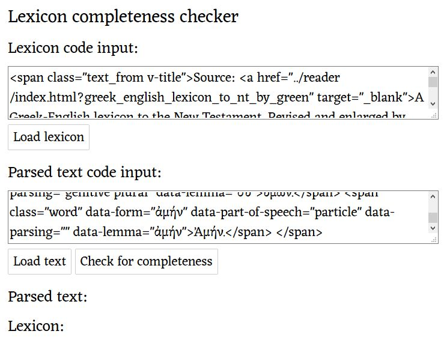
The value of the form‘s field "Lexicon code" should be full HTML code of the lexicon. Use browser’s HTML inspector (available on right-click in every major browser) to copy lexicon‘s HTML code from Library app’s page. To do this right-click inside HTML inspector's panel on the "div" element having "class" attribute "pc-content-panel-inner" and in context menu select option "Copy outerHTML":
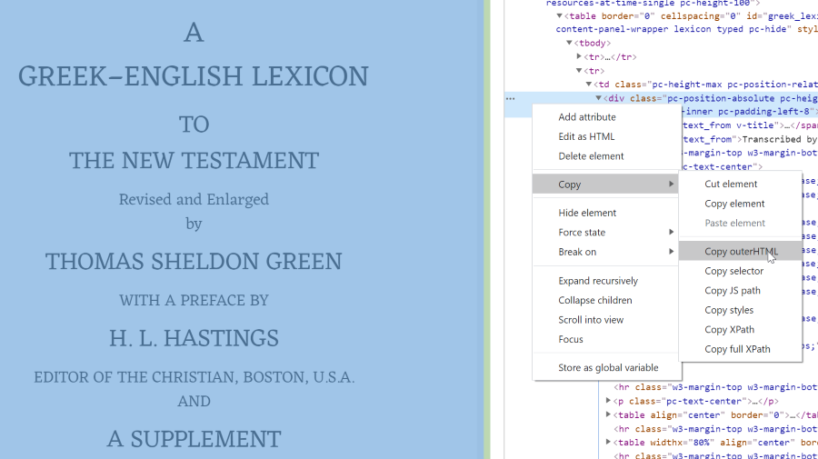
Then paste the copied string into form‘s field. After that select and delete opening and closing "div" tags from the code pasted into field:
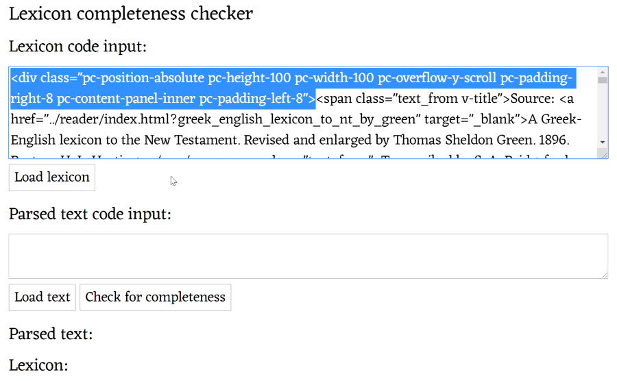
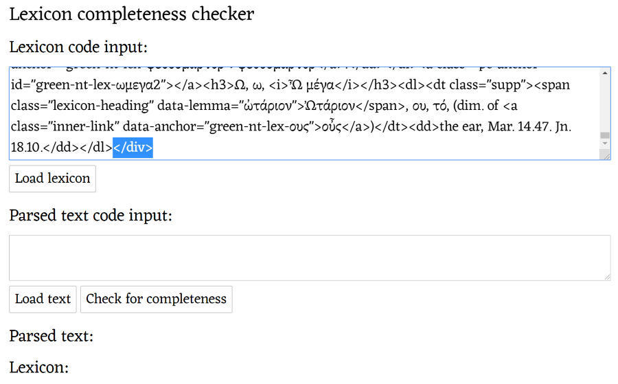
The value of the form‘s field "Parsed text code" should be HTML code of the parsed text. Use browser’s HTML inspector to copy this part of code from Library app’s page. As with lexicon's code, right-click inside HTML inspector's panel on the "div" element having "class" attribute "pc-content-panel-inner" and in context menu select option "Copy outerHTML"; after that select and delete opening and closing "div" tags from the code pasted into field.
After filling fields with these values, click the button "Load lexicon" and the lexicon text will be displayed beneath "Lexicon:" heading.
Then click the button "Load text" and the text will be displayed beneath "Parsed text:" heading.
After loading lexicon and parsed text click the button "Check for completeness" and all words beneath the heading "Parsed text:" should be displayed in green background.
If some words will not be displayed in green background, this may be for two reasons: (1) the word is not included in the lexicon (proper names are often not included in smaller lexicons); (2) the lemma of the same word in parsed text and in the lexicon are slightly different.
In the case (2) the code of lexicon‘s data file should be edited.
For example, in Epistle to Titus collection parsed text data file there is such line:
' <span class="word" data-form="ἐπηγγείλατο" data-part-of-speech="verb" data-parsing="aorist middle indicative 3rd person singular" data-lemma="ἐπαγγέλλομαι">ἐπηγγείλατο</span>' +
In Th. S. Green‘s Greek-English lexicon resource data file the code of the relevant article is as follows:
'<dt><span class="lexicon-heading" data-lemma="ἐπαγγέλλω">Ἐπαγγέλλω</span>, (<a class="inner-link" data-anchor="green-nt-lex-επι">ἐπί</a> & <a class="inner-link" data-anchor="green-nt-lex-αγγελλω">ἀγγέλλω</a>)</dt>' + '<dd>f. ελώ,</dd>' + '<dd>to declare, announce; <i>mid.</i> to promise, undertake, Mar. 14.11. Ro. 4.21, et al.; to profess, 1 Ti. 2.10: <i>whence</i></dd>' +
The value of "data-lemma" attribute in parsed text code is "ἐπαγγέλλομαι"; the value of "data-lemma" attribute in lexicon is "ἐπαγγέλλω". Since the values of "data-lemma" attribute in parsed text code and in lexicon code do not match, clicking on the word in parsed text pane will result into error message being displayed inside lexicon‘s content panel. To avoid this we need to add another "span" tag having class attribute value "lexicon-heading" and "data-lemma" attribute value "ἐπαγγέλλομαι":
'<dt><span class="lexicon-heading" data-lemma="ἐπαγγέλλω"><span class="lexicon-heading" data-lemma="ἐπαγγέλλομαι">Ἐπαγγέλλω</span></span>, (<a class="inner-link" data-anchor="green-nt-lex-επι">ἐπί</a> & <a class="inner-link" data-anchor="green-nt-lex-αγγελλω">ἀγγέλλω</a>)</dt>' + '<dd>f. ελώ,</dd>' + '<dd>to declare, announce; <i>mid.</i> to promise, undertake, Mar. 14.11. Ro. 4.21, et al.; to profess, 1 Ti. 2.10: <i>whence</i></dd>' +
This should solve the issue. Similarly proceed with the other words which were not displayed in the green background.
Coding policy
Dealing with alternative characters
In unicode two or more code points may encode characters which look identically or have only stylistic difference. In order for all functionality to work correctly the uniformity of encoding must be enforced by using only characters from certain "standard" set. To achieve this go to Unicode Characters changer and use the form to change unicode characters into "standard" ones.
Translation (scanned)
Creating image files
To create scanned resource of the type "translation" you first need a series of JPG images, each image picturing one page of the book. Scanned resource always includes all pages of the book, i.e. each page from the title page to the last, not including covers and promotional materials. About creating a series of JPG files for scanned resource, read in Common tasks the sections on scanning a book, on converting PDF file to images, on batch renaming of files, on cropping images, on retouching images, on optimizing size of JPG files.
When you have a series of JPG files each image picturing one page of the book and named starting from page0001.jpg, submit them to the senior editor who will upload those files to the server. The files will be uploaded to the directory specified in catalogue file as the value of the key "scanned_source_shortname". For example in the Epistle to Titus collection the translation to Latin by Saint Jerome has been listed and the value of the key "scanned_source_shortname" is "novum_testamentum_latine_ed_brandscheid". It means that the pictures of the pages must be uploaded to the directory /_scans/novum_testamentum_latine_ed_brandscheid .
Having uploaded the images of the pages to the server, senior editor should list the scanned book as described in section Listing scanned books.
After uploading the files of the scanned book and listing it among scanned books, it can be browsed using the value of the key "scanned_source_shortname" in the URL: parsedclassics.com/reader/embedded_bookreader.html?novum_testamentum_latine_ed_brandscheid
Creating contents file
In order for translation to work in sync with parsed text, the contents file must be created. To create contents file go to Scanned book contents generator page and fill the form:
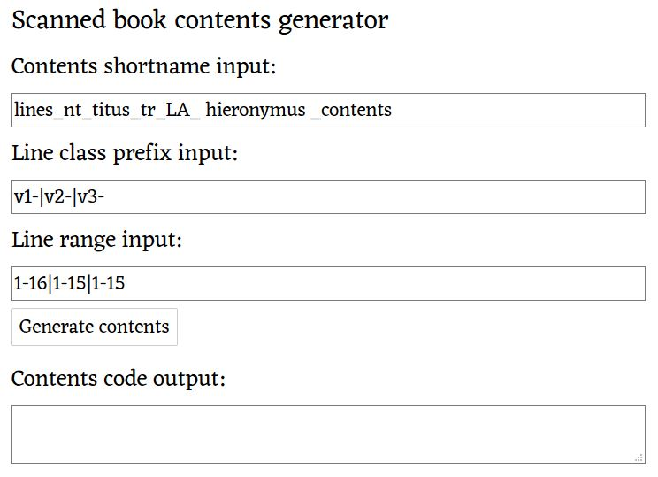
The value of the form‘s field "Line range" should be pipe delimited line ranges. In Epistle to Titus there are three chapters, the first having 16 verses, the second – 15 verses and the third – 15 verses. So, the value of this field should be 1-16|1-15|1-15.
The value of the form‘s field "Line class prefix" should be be pipe delimited class prefixes, one for each chapter. The chapters of the New Testament are usually indicated by the number written to the left from verse number; colon usually used to separate chapter number from verse number. Class prefix should start with the letter "v" and follow with line number prefix in which special symbols are replaced with dashes. So, we replace colons in line number prefixes, add leading letter "v" and get the value for this field v1-|v2-|v3- .
The value of the form‘s field "Contents shortname" should be the same as the value of the key "contents_shortname" in collection‘s catalogue. While creating collection‘s catalogue for Epistle to Titus collection we entered for this key the value "lines_nt_titus_tr_LA_hieronymus_contents", so we now should enter it as the value of the field "Contents shortname".
After filling fields with these values, click the button "Generate contents" and the contents code will be displayed in "Contents code output" textarea.
The code will be as this:
var lines_nt_titus_tr_LA_ hieronymus _contents = {
"v-title": ""
, "v1-1": ""
, "v1-2": ""
// part of code has been cut out
, "v1-15": ""
, "v1-16": ""
, "v2-1": ""
, "v2-2": ""
// part of code has been cut out
, "v2-14": ""
, "v2-15": ""
, "v3-1": ""
, "v3-2": ""
// part of code has been cut out
, "v3-14": ""
, "v3-15": ""
};
Now we need to enter values for each key of this JSON object. The keys are class names of lines of the parsed text. "v-title" is the class name of the title of the parsed text. The values should be numbers from image file names (without zero padding). View images of the scanned files, look for the numbers in their file names and enter those numbers as the values for relevant keys.
We get the following code:
var lines_nt_titus_tr_LA_ hieronymus _contents = {
"v-title": "589"
, "v1-1": "589"
, "v1-2": "589"
// part of code has been cut out
, "v1-15": "590"
, "v1-16": "590"
, "v2-1": "590"
, "v2-2": "590"
// part of code has been cut out
, "v2-14": "591"
, "v2-15": "591"
, "v3-1": "591"
, "v3-2": "591"
// part of code has been cut out
, "v3-14": "592"
, "v3-15": "592"
};
This code should be saved in the file having the same name as the value in "Contents shortname" field. The file should be placed in "contents" directory: /data/contents/lines_nt_titus_tr_LA_hieronymus_contents.js
After doing this translation resource should work in sync with parsed text resource.
Translation (transcribed)
Creating transcribed resource of the type "Translation" involves creating one data file.
Creating data file
Data file uses certain formatting conventions.
HTML "span" tag having class attribute "verse" should wrap each line of the text.
"span" tag having class attribute "verse-number" should wrap verse number in each line. The same "span" element should also have as its class attribute the string indicating line number, such as "v1-1", "v1-2", etc. The latter class strings should be the same as in parsed text resource.
"span" tag having class attribute "para" should mark start of each new paragraph.
HTML code formatted using these "span" tags should be converted to string and made the second argument of the function "ParsedClassicsData._loadResource". The first argument of this function should be the value of the key "resource_shortname" from collection catalogue. Transcribed translation resource shortname from Epistle to Titus catalogue is "nt_titus_tr_EN_young", so this string will be the first argument.
This way we get such data file:
ParsedClassicsData._loadResource("nt_titus_tr_EN_young",
'<span class="verse"><span class="verse-number v1-1">1:1</span> Paul, a servant of God, and an apostle of Jesus Christ, according to the faith of the choice ones of God, and an acknowledging of truth that [is] according to piety, </span>' +
'<span class="verse"><span class="verse-number v1-2">1:2</span> upon hope of life age-during, which God, who doth not lie, did promise before times of ages, </span>' +
'<span class="verse"><span class="verse-number v1-3">1:3</span> (and He manifested in proper times His word,) in preaching, which I was entrusted with, according to a charge of God our Saviour, </span>' +
'<span class="verse"><span class="verse-number v1-4">1:4</span> to Titus — true child according to a common faith: Grace, kindness, peace, from God the Father, and the Lord Jesus Christ our Saviour! </span>' +
'<span class="verse"><span class="verse-number v1-5">1:5</span> For this cause left I thee in Crete, that the things lacking thou mayest arrange, and mayest set down in every city elders, as I did appoint to thee; </span>' +
'<span class="para"></span>' +
'<span class="verse"><span class="verse-number v1-6">1:6</span> if any one is blameless, of one wife a husband, having children stedfast, not under accusation of riotous living or insubordinate — </span>' +
'<span class="verse"><span class="verse-number v1-7">1:7</span> for it behoveth the overseer to be blameless, as God’s steward, not self-pleased, nor irascible, not given to wine, not a striker, not given to filthy lucre; </span>' +
// part of code has been cut out
'<span class="verse"><span class="verse-number v3-8">3:8</span> Stedfast [is] the word; and concerning these things I counsel thee to affirm fully, that they may be thoughtful, to be leading in good works — who have believed God; these are the good and profitable things to men, </span>' +
'<span class="verse"><span class="verse-number v3-9">3:9</span> and foolish questions, and genealogies, and contentions, and strivings about law, stand away from — for they are unprofitable and vain. </span>' +
'<span class="para"></span>' +
'<span class="verse"><span class="verse-number v3-10">3:10</span> A sectarian man, after a first and second admonition be rejecting, </span>' +
'<span class="verse"><span class="verse-number v3-11">3:11</span> having known that he hath been subverted who [is] such, and doth sin, being self-condemned. </span>' +
'<span class="para"></span>' +
'<span class="verse"><span class="verse-number v3-12">3:12</span> When I shall send Artemas unto thee, or Tychicus, be diligent to come unto me to Nicopolis, for there to winter I have determined. </span>' +
'<span class="verse"><span class="verse-number v3-13">3:13</span> Zenas the lawyer and Apollos bring diligently on their way, that nothing to them may be lacking, </span>' +
'<span class="verse"><span class="verse-number v3-14">3:14</span> and let them learn — ours also — to be leading in good works to the necessary uses, that they may not be unfruitful. </span>' +
'<span class="verse"><span class="verse-number v3-15">3:15</span> Salute thee do all those with me; salute those loving us in faith; the grace [is] with you all! </span>' +
""
);
Data file‘s name should be the same as the value of the key "resource_shortname" from collection catalogue. Transcribed translation resource shortname from Epistle to Titus catalogue is "nt_titus_tr_EN_young", so this should be data file‘s name. Data file should be placed in "translations" directory: /data/resources/translations/nt_titus_tr_EN_young.js
After doing this translation resource should work in sync with parsed text resource.
Commentary (scanned)
Creating image files
To create scanned resource of the type "Commentary" you first need a series of JPG images, each image picturing one page of the book. Scanned resource always includes all pages of the book, i.e. each page from the title page to the last, not including covers and promotional materials. About creating a series of JPG files for scanned resource read in Common tasks the sections on scanning a book, on converting PDF file to images, on batch renaming of files, on cropping images, on retouching images, on optimizing size of JPG files.
When you have a series of JPG files each image picturing one page of the book and named starting from page0001.jpg, submit them to the senior editor who will upload those files to the server. The files will be uploaded to the directory specified in catalogue file as the value of the key "scanned_source_shortname". For example in the Epistle to Titus collection the commentary edited by W. R. Nicoll has been listed and the value of the key "scanned_source_shortname" is "expositors_greek_testament_ed_nicoll_vol_4". It means that the pictures of the pages must be uploaded to the directory /_scans/expositors_greek_testament_ed_nicoll_vol_4 .
Having uploaded the images of the pages to the server, senior editor should list the scanned book as described in section Listing scanned books.
After uploading the files of the scanned book and listing it among scanned books, it can be browsed using the value of the key "scanned_source_shortname" in the URL: parsedclassics.com/reader/embedded_bookreader.html?expositors_greek_testament_ed_nicoll_vol_4
Creating contents file
In order for commentary edition to work in sync with parsed text, the contents file must be created. To create contents file go to Scanned book contents generator page and fill the form:
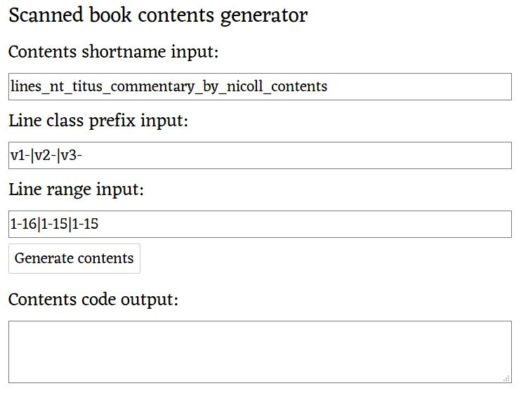
The value of the form‘s field "Line range" should be pipe delimited line ranges. In Epistle to Titus there are three chapters, the first having 16 verses, the second – 15 verses and the third – 15 verses. So, the value of this field should be 1-16|1-15|1-15.
The value of the form‘s field "Line class prefix" should be be pipe delimited class prefixes, one for each chapter. The chapters of the New Testament are usually indicated by the number written to the left from verse number; colon usually used to separate chapter number from verse number. Class prefix should start with the letter "v" and follow with line number prefix in which special symbols are replaced with dashes. So, we replace colons in line number prefixes, add leading letter "v" and get the value for this field v1-|v2-|v3- .
The value of the form‘s field "Contents shortname" should be the same as the value of the key "contents_shortname" in collection‘s catalogue. While creating collection‘s catalogue for Epistle to Titus collection we entered for this key the value "lines_nt_titus_commentary_by_nicoll_contents", so we now should enter it as the value of the field "Contents shortname".
After filling fields with these values, click the button "Generate contents" and the contents code will be displayed in "Contents code output" textarea.
The code will be as this:
var lines_nt_titus_commentary_by_nicoll_contents = {
"v-title": ""
, "v1-1": ""
, "v1-2": ""
// part of code has been cut out
, "v1-15": ""
, "v1-16": ""
, "v2-1": ""
, "v2-2": ""
// part of code has been cut out
, "v2-14": ""
, "v2-15": ""
, "v3-1": ""
, "v3-2": ""
// part of code has been cut out
, "v3-14": ""
, "v3-15": ""
};
Now we need to enter values for each key of this JSON object. The keys are class names of lines of the parsed text. "v-title" is the class name of the title of the parsed text. The values should be numbers from image file names (without zero padding). View images of the scanned files, look for the numbers in their file names and enter those numbers as the values for relevant keys.
We get the following code:
var lines_nt_titus_commentary_by_nicoll_contents = {
"v-title": "189"
, "v1-1": "189"
, "v1-2": "189"
// part of code has been cut out
, "v1-15": "194"
, "v1-16": "194"
, "v2-1": "195"
, "v2-2": "195"
// part of code has been cut out
, "v2-14": "200"
, "v2-15": "201"
, "v3-1": "201"
, "v3-2": "201"
// part of code has been cut out
, "v3-14": "206"
, "v3-15": "206"
};
This code should be saved in the file having the same name as the value in "Contents shortname" field. The file should be placed in "contents" directory: /data/contents/lines_nt_titus_commentary_by_nicoll_contents.js
After doing this commentary resource should work in sync with parsed text resource.
Commentary (transcribed)
Creating transcribed resource of the type "Commentary" involves creating one data file.
Creating data file
Data file uses certain formatting conventions.
HTML "span" tag having class attribute "verse" should wrap each line of the text.
"span" tag having class attribute "verse-number" should wrap verse number in each line. The same "span" element should also have as its class attribute the string indicating line number, such as "v1-1", "v1-2", etc. The latter class strings should be the same as in parsed text resource.
"span" tag having class attribute "para" should mark start of each new paragraph.
HTML code formatted using these "span" tags should be converted to string and made the second argument of the function "ParsedClassicsData._loadResource". The first argument of this function should be the value of the key "resource_shortname" from collection catalogue. Transcribed commentary resource shortname from Epistle to Titus catalogue is "nt_titus_commentary_by_bengel", so this string will be the first argument.
This way we get such data file:
ParsedClassicsData._loadResource("nt_titus_commentary_by_bengel",
'<span class="verse"><span class="verse-number v1-1">1:1</span> Παυλος, <em>Paul<em/>) A title suitable to the character of Paul, and to the office of Titus.—κατὰ, <em>according to<em/>) Comp. κατὰ, Titus 1:4; Titus 1:9; 2 Timothy 1:1, note. </span>' +
'<span class="para"></span>' +
'It is the duty of an apostle to propagate the faith, Romans 1:5.—πίστιν, <em>faith<em/>) <em>faith—hope<em/> are the sum of Christianity; and these things Titus ought to regard in all his teaching, and avoid everything else; comp. 1 Timothy 1:5; 1 Timothy 3:15-16; 1 Timothy 4:1; 1 Timothy 4:3; 1 Timothy 4:10.—ἐκλεκτῶν Θεοῦ, <em>the elect of God<em/>) for whose sake we ought to do and endure all things, 2 Timothy 2:10. <em>The elect<em/> were from among Jews and Gentiles; and their faith was <em>common<em/>, Titus 1:4; 2 Peter 1:1 : of the former was Paul; of the latter, Titus. </span>' +
'<span class="verse"><span class="verse-number v1-2">1:2</span> Ἐλπίδι ζωῆς αἰωνίου, in <em>the hope of eternal life<em/>) ch. Titus 3:7. Hope has reference to <em>the promise<em/>.—ἣν, <em>which<em/>) <em>life<em/>.—ἀψευδὴς, <em>who cannot lie<em/>) The foundation of our confidence.—πρὸ χρόνων αἰωνίων, <em>before eternal ages, before the world began<em/>) <em>The promise<em/> of eternal life is already contained in the appellation, <em>the God of Abraham<em/>, etc.[Luke 20:37]. There is here implied an explicit promise to men. See Genesis 3, etc. The χρόνοι αἰωνιοι <em>followed<em/> the creation and the fall. </span>' +
'<span class="verse"><span class="verse-number v1-3">1:3</span> Καιροῖς) χρόνοι were longer than these. </span>' +
// part of code has been cut out
'<span class="verse"><span class="verse-number v3-12">3:12</span> Ἀρτεμᾶν ἢ Τυχιχὸν, <em>Artemas or Tychicus<em/>) into whose hands Titus might deliver the lamp of the Gospel.—ἐλθεῖν πρός με, <em>to come to me<em/>) when affairs in Crete shall have been more fully set in order.—ἐκεῖ, <em>there<em/>) He does not say <em>here<em/>. Paul was not yet at Nicopolis. </span>' +
'<span class="verse"><span class="verse-number v3-13">3:13</span> Ἵνα μηδὲν, <em>that nothing<em/>) Titus therefore had the means. They did not go empty. </span>' +
'<span class="verse"><span class="verse-number v3-14">3:14</span> Μανθανέτωσαν, <em>let them learn<em/>) by thy admonition and example.—καὶ οἱ ἡμέτεροι, <em>ours also<em/>) not only we, but also ours, whom we have gained at Crete. These seem not to have given sufficient assistance to Zenas and Apollos, when they ought to have done so. [<em>It is not proper that some should ever and anon devolve the business in hand from themselves upon others.<em/>—V. g.] Zenas and Apollos were already in Crete with Titus; for this is the reason why he distinguishes them from Artemas and Tychicus, who were not until afterwards to be sent.—εἰς τὰς ἀναγκείας χρείας, <em>for necessary uses<em/>) even as spiritual <em>necessity<em/> [<em>i.e.<em/> the <em>tie<em/> which <em>necessarily<em/> binds saints to help one another] requires; so χρεία, Acts 6:3. <em>Spiritual necessity<em/> [‘necessitudo,’ tie of necessary obligation or relationship] lays the foundation of obligations, so that one cannot withdraw from another [so as not to help him]. </span>' +
""
);
Data file‘s name should be the same as the value of the key "resource_shortname" from collection catalogue. Transcribed commentary resource shortname from Epistle to Titus catalogue is "nt_titus_commentary_by_bengel", so this should be data file‘s name. Data file should be placed in "commentaries" directory: /data/resources/commentaries/nt_titus_commentary_by_bengel.js
After doing this commentary resource should work in sync with parsed text resource.
Grammar references (transcribed)
Creating resource of the type "grammar references" involves creating data file and image files of the grammar books. The data file contains links to image files of the scanned grammar books, so the latter should be created first.
Creating image files
To create resource of the type "grammar references" you first need to have one or more scanned grammar books. To create a scanned grammar book you need a series of JPG images, each image picturing one page of the book. Scanned book includes all pages, i.e. each page from the title page to the last, not including covers and promotional materials. About creating a series of JPG files for scanned book, read in Common tasks the sections on scanning a book, on converting PDF file to images, on batch renaming of files, on cropping images, on retouching images, on optimizing size of JPG files.
When you have a series of JPG files each image picturing one page of the book and named starting from page0001.jpg, submit them to the senior editor who will list the scanned book in the file _scanned_books.js and upload image files to the server. About the file _scanned_books.js read in the section on Listing scanned books. The image files will be uploaded to the directory named according to the key in the file _scanned_books.js . For example, in the file _scanned_books.js the key of the entry for A. T. Robertson's "Grammar of the New Testament in the light of historical research" is "grammar_of_greek_nt_in_light_of_hist_research_robertson". That means that image files of this book should be uploaded to the directory /_scans/grammar_of_greek_nt_in_light_of_hist_research_robertson .
After listing the book in the file _scanned_books.js and uploading the image files to the server, the book can be browsed using its key from the file _scanned_books.js in the URL: parsedclassics.com/reader/embedded_bookreader.html?grammar_of_greek_nt_in_light_of_hist_research_robertson
Creating data file
Data file uses certain formatting conventions.
The file should contain "Grammars" heading and "References" heading both wrapped by "h2" tags. The heading "Grammars" should contain empty "span" tag having class attribute "v-title".
Below the heading "Grammars" should be list of grammars. Earch item of the list should be wrapped by "span" tag having class attribute "text_from". Every list item should contain abbreviated name of the grammar on the left and its bibliographical data to the right, separated by n-dash. Bibliographical data should be wrapped by "a" tag, having the value "_blank" of the attribute "target" and the relative URL as the value of the attribute "href".
Below the heading "References" should be list of references to grammars for the each line of the classical text. "span" tag having class attribute "verse" should wrap all references for the single line. "span" tag having class attribute "verse-number" should wrap verse number of the line. The same "span" element should also have as its class attribute the line class as in data file of parsed text resource.
Each reference to the grammar book consists of abbreviated grammar name and page number. Abbreviated name and page number should be wrapped by "a" tag having attribute "data-grammar" and attribute "data-page". The value of the attribute "data-grammar" should be the key of the relevant grammar from the file _scanned_books.js. The value of the attribute "data-page" should be the number from the name of the image file (not the number of the page pictured!).
HTML code formatted using these tags should be converted to string and made the second argument of the function "ParsedClassicsData._loadResource". The first argument of this function should be the value of the key "resource_shortname" from collection catalogue. Grammar references resource shortname from Epistle to Philemon catalogue is "nt_philemon_grammar_refs_by_parsedclassics", so this string will be the first argument.
This way we get such data file:
ParsedClassicsData._loadResource("nt_philemon_grammar_refs_by_parsedclassics",
'<h2><span class="v-title"></span>Grammars</h2>' +
'<span class="text_from">Robertson – <a href="../reader/index.html?grammar_of_greek_nt_in_light_of_hist_research_robertson" target="blank">A Grammar of the Greek New Testament in the light of historical research. By A.T. Robertson. 4-th edition. 1924. New York: George H. Doran Company.</a></span>' +
'<h2>References</h2>' +
'<span class="verse"><span class="verse-number v1-2">1:2</span>' +
' <a data-grammar="grammar_of_greek_nt_in_light_of_hist_research_robertson" data-page="301">Robertson 215</a>' +
' </span>' +
'<span class="verse"><span class="verse-number v1-5">1:5</span>' +
' <a data-grammar="grammar_of_greek_nt_in_light_of_hist_research_robertson" data-page="710">Robertson 624</a>,' +
' <a data-grammar="grammar_of_greek_nt_in_light_of_hist_research_robertson" data-page="1286">Robertson 1200</a>' +
' </span>' +
'<span class="verse"><span class="verse-number v1-9">1:9</span>' +
' <a data-grammar="grammar_of_greek_nt_in_light_of_hist_research_robertson" data-page="287">Robertson 201</a>,' +
' <a data-grammar="grammar_of_greek_nt_in_light_of_hist_research_robertson" data-page="796">Robertson 710</a>' +
' </span>' +
'<span class="verse"><span class="verse-number v1-10">1:10</span>' +
' <a data-grammar="grammar_of_greek_nt_in_light_of_hist_research_robertson" data-page="799">Robertson 713</a>,' +
' <a data-grammar="grammar_of_greek_nt_in_light_of_hist_research_robertson" data-page="804">Robertson 718</a>' +
' </span>' +
// part of code has been cut out
""
);
Data file‘s name should be the same as the value of the key "resource_shortname" from collection catalogue. Grammar references resource shortname from Epistle to Philemon catalogue is "nt_philemon_grammar_refs_by_parsedclassics", so this should be data file‘s name. Data file should be placed in "grammar_references" directory: /data/resources/grammar_references/nt_philemon_grammar_refs_by_parsedclassics.js
After doing this grammar references resource should work in sync with parsed text resource.
Diagram set (transcribed)
Creating resource of the type "diagram set" involves creating diagram images and data file.
Tools for creating diagrams
For creating diagram images you need OmniGraffle program (Mac, commercial). Only Pro version is suitable, so if you own Standard version, upgrade it to Pro.
OmniGraffle is quite complex application. If you are new to it, read its documentation before starting to create syntax diagrams.
After you are sufficiently familiar with OmniGraffle, you need to install template and stencils.
Download template and stencils.
Then click on Stencils tab and right-click on any stencil name and select "Show in Finder":
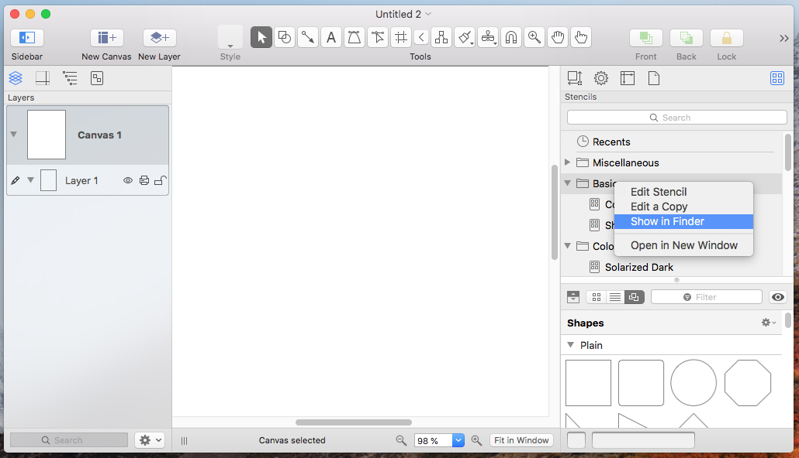
In the opened Finder window locate the folders "Stencils" and "Templates":
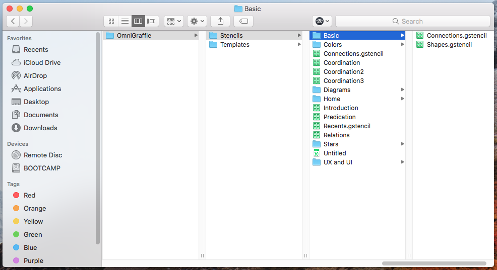
Unzip the file _ParsedClassicsStencils.zip to the folder "Stencils". After that you should be able to see several new stencils in the Stencils tab:
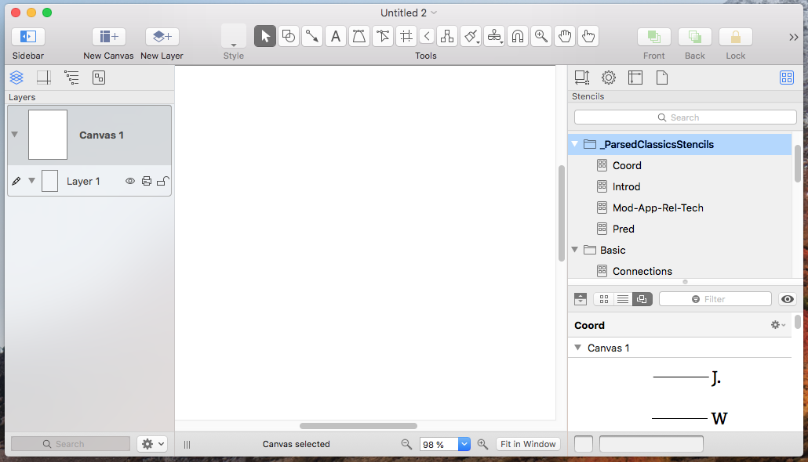
Unzip the file ParsedClassicsTemplates.zip to the folder "Templates". Then go File > Resource Browser, find the folder "ParsedClassicsTemplates", select the template "pc_diagram_template" and click button "Set as Default":
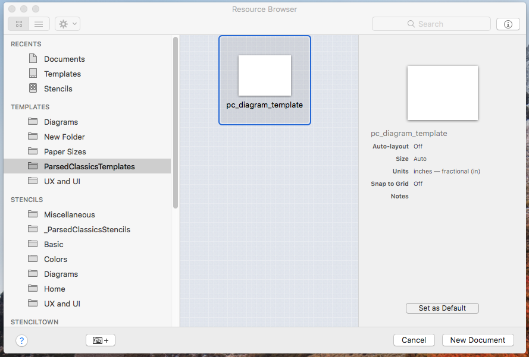
Syntax diagrams use Eczar font. Download this font (the files Eczar-Bold.ttf, Eczar-ExtraBold.ttf, Eczar-Medium.ttf, Eczar-Regular.ttf, Eczar-SemiBold.ttf) from GitHub and install on your system.
Creating syntax diagrams
Syntax diagrams are being created in OmniGraffle program by dragging objects from ParsedClassics stencils to the canvas, joining them and filling text boxes.
Notice, that in stencils some objects look identical and are put into pairs. Identical looking objects are not the same: the upper one has straight line and the one below has curved line. Accordingly, use the upper when you need to draw straight line and the one below – when you need to draw curved line.
Text boxes in the stencil objects are indicated by
(1) uppercase letter ending with dot; in this case the word should be pasted on the right from the dot;
(2) uppercase letter "W"; in this case the letter "W" should be substituted with word;
(3) lowercase letter; lowercase letter is placeholder for index and should be replaced with other lowercase letter.
The diagram created on OmniGraffle canvas should be saved both as OmniGraffle document and JPG file.
The saving of created diagram is done using "artboard". Click in the toolbar the button "Artboard Tool" and select the area in the canvas which should be visible in diagram image:
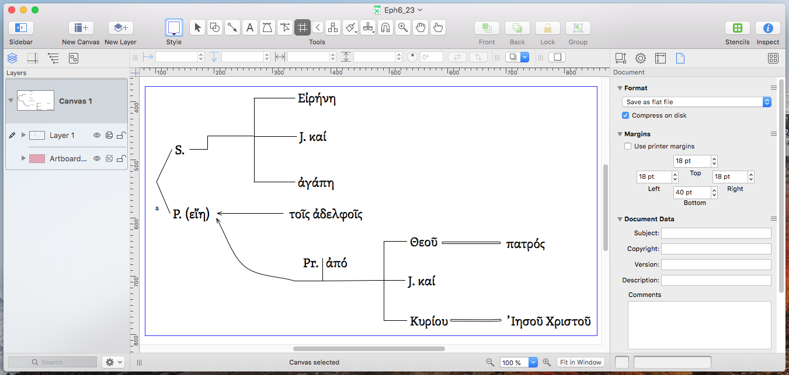
Then go File > Save As and save the diagram as OmniGraffle document. The file name should contain short title of the text, chapter and line numbers. For numbers zero padding should be used: to 2 for chapters and to 3 for line numbers. For example, syntax diagram which displays lines 1-5 of the first chapter of the Epistle to Titus should be named "nt_titus_01_001-005".
After that export the diagram as JPG image. Go File > Export and in the opened modal dialogue window select the tab "JPG" and click the button "Export".
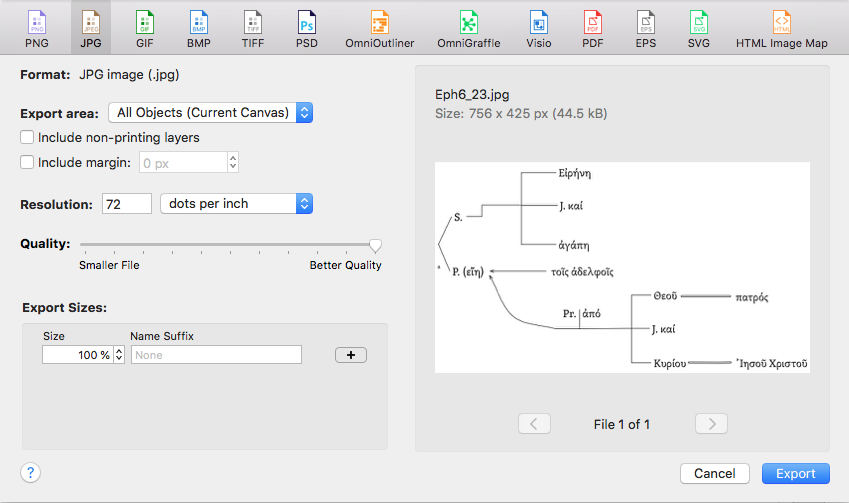
Give for the exported image the same name as you gave for OmniGraffle document.
Diagram files (both OmniGraffle documents and JPG files) should be uploaded to directory, named after the value of the key "resource_shortname". For example, in the Epistle of Titus collection the resource of the type "Diagram set" has been defined and its key "resource_shortname" has the value "nt_titus_diagrams_by_hieronymus". It means that diagram files should be uploaded to the folder /_diagrams/nt_titus_diagrams_by_hieronymus .
Creating data file
Data file uses certain formatting conventions.
HTML "span" tag having class attribute "verse" should wrap each line of the text.
"span" tag having class attribute "verse-number" should wrap verse number in each line. The same "span" element should also have as its class attribute the string indicating line number, such as "v1-1", "v1-2", etc. The latter class strings should be the same as in parsed text resource.
After one or several "span" tag having class attribute "verse" should be "img" tag having as the value of its "src" attribute the relative URL leading to diagram image.
After "img" tag should be another "span" tag having class attribute "verse" which contains info about types of clauses represented in the diagram.
HTML code formatted using these "span" tags should be converted to string and made the second argument of the function "ParsedClassicsData._loadResource". The first argument of this function should be the value of the key "resource_shortname" from collection catalogue. Diagram set resource shortname from Epistle to Titus catalogue is "nt_titus_diagrams_by_parsedclassics", so this string will be the first argument.
This way we get such data file:
ParsedClassicsData._loadResource("nt_titus_diagrams_by_parsedclassics",
// part of code has been cut out
"<span class='verse'><span class='verse-number v1-10'>Tit. 1:10</span> Εἰσὶν γὰρ πολλοὶ καὶ ἀνυπότακτοι, ματαιολόγοι καὶ φρεναπάται, μάλιστα οἱ ἐκ περιτομῆς,</span>" +
"<span class='verse'><span class='verse-number v1-11'>Tit. 1:11</span> οὓς δεῖ ἐπιστομίζειν· οἵτινες ὅλους οἴκους ἀνατρέπουσιν, διδάσκοντες ἃ μὴ δεῖ, αἰσχροῦ κέρδους χάριν.</span>" +
"<img src='../_diagrams/nt_titus_diagrams_by_hieronymus/nt_titus_01_010-011.jpg'>" +
"<span class='verse'>" +
"a, b – existencial clauses;" +
"c, d – relative clauses;" +
"e – participial circumstancial clause." +
"</span>" +
"<span class='verse'><span class='verse-number v1-12'>Tit. 1:12</span> Εἶπέν τις ἐξ αὐτῶν, ἴδιος αὐτῶν προφήτης, Κρῆτες ἀεὶ ψεῦσται, κακὰ θηρία, γαστέρες ἀργαί.</span>" +
"<img src='../_diagrams/nt_titus_diagrams_by_hieronymus/nt_titus_01_012.jpg'>" +
"<span class='verse'>" +
"a, b, c, d, e – declarative clauses." +
"</span>" +
// part of code has been cut out
""
);
Data file‘s name should be the same as the value of the key "resource_shortname" from collection catalogue. Diagram set resource shortname from Epistle to Titus catalogue is "nt_titus_diagrams_by_hieronymus", so this should be data file‘s name. Data file should be placed in "diagrams" directory: /data/resources/diagrams/nt_titus_diagrams_by_parsedclassics.js
After doing this diagram set resource should work in sync with parsed text resource.
Audio recording (transcribed)
Creating resource of the type "audio recording" involves creating three files: MP3 sound file, data file and contents file.
Creating MP3 sound file
The resource of the type "audio recording" syncronizes sound with text. In order this to be possible MP3 file should be encoded using Constant bit rate (CBR) mode. If you don‘t know constant or variable bit rate mode was used, you should convert the file.
To convert the file the program Free Easy MP3 Joiner (Win, free) can be used. The following options should be selected.
On the main program window should be selected "export format" – mp3 and "export type" – convert:

Then push the button "Settings", select "Specify Settings" and push "Configure" button:

In the opened window "Configure MP3 Settings" choose "Mode" – Stereo, "Constant bit rate" – 192 kbps (this is MOST important), "Set flags" – deselected:

Sound file‘s name should be the same as the value of the key "resource_shortname" from collection catalogue. Audio recording resource shortname from Epistle to Titus catalogue is "nt_titus_audio_by_robinson", so this should be sound file‘s name. Sound file should be placed in "_audio" directory: /_audio/nt_titus_audio_by_robinson.mp3
After doing this you should be able to listen to the recording using audio controls in resources pane.
Creating data file
To see in resource pane not only audio controls, but also the text which is in sync with the sound, we need to create data file.
In the data file we need to paste the original text and before each line to mark its start time in square brackets. The start time of each line should be marked with the precision of hundredths of the second. To see when the line starts, some software should be used, such as Seventh String Transcribe! (Win/Mac, commercial).
The code will be as this:
[00:00.00] [00:08.10]1:1 Παῦλος, δοῦλος θεοῦ, ἀπόστολος δὲ Ἰησοῦ χριστοῦ, κατὰ πίστιν ἐκλεκτῶν θεοῦ καὶ ἐπίγνωσιν ἀληθείας τῆς κατ’ εὐσέβειαν, [00:23.00]1:2 ἐπ’ ἐλπίδι ζωῆς αἰωνίου, ἣν ἐπηγγείλατο ὁ ἀψευδὴς θεὸς πρὸ χρόνων αἰωνίων, [00:33.80]1:3 ἐφανέρωσεν δὲ καιροῖς ἰδίοις τὸν λόγον αὐτοῦ ἐν κηρύγματι ὃ ἐπιστεύθην ἐγὼ κατ’ ἐπιταγὴν τοῦ σωτῆρος ἡμῶν θεοῦ, [00:49.50]1:4 Τίτῳ γνησίῳ τέκνῳ κατὰ κοινὴν πίστιν· χάρις, ἔλεος, εἰρήνη ἀπὸ θεοῦ πατρός, καὶ κυρίου Ἰησοῦ χριστοῦ τοῦ σωτῆρος ἡμῶν. [01:05.80]1:5 Τούτου χάριν κατέλιπόν σε ἐν Κρήτῃ, ἵνα τὰ λείποντα ἐπιδιορθώσῃ, καὶ καταστήσῃς κατὰ πόλιν πρεσβυτέρους, ὡς ἐγώ σοι διεταξάμην· // part of code has been cut out [04:05.90] [04:07.70]2:1 Σὺ δὲ λάλει ἃ πρέπει τῇ ὑγιαινούσῃ διδασκαλίᾳ· [04:14.80]2:2 πρεσβύτας νηφαλέους εἶναι, σεμνούς, σώφρονας, ὑγιαίνοντας τῇ πίστει, τῇ ἀγάπῃ, τῇ ὑπομονῇ· [04:28.20]2:3 πρεσβύτιδας ὡσαύτως ἐν καταστήματι ἱεροπρεπεῖς, μὴ διαβόλους, μὴ οἴνῳ πολλῷ δεδουλωμένας, καλοδιδασκάλους, [04:43.30]2:4 ἵνα σωφρονίζωσιν τὰς νέας φιλάνδρους εἶναι, φιλοτέκνους, [04:51.60]2:5 σώφρονας, ἁγνάς, οἰκουρούς ἀγαθάς, ὑποτασσομένας τοῖς ἰδίοις ἀνδράσιν, ἵνα μὴ ὁ λόγος τοῦ θεοῦ βλασφημῆται· // part of code has been cut out [07:13.70] [07:15.80]3:1 Ὑπομίμνησκε αὐτοὺς ἀρχαῖς καὶ ἐξουσίαις ὑποτάσσεσθαι, πειθαρχεῖν, πρὸς πᾶν ἔργον ἀγαθὸν ἑτοίμους εἶναι, [07:29.30]3:2 μηδένα βλασφημεῖν, ἀμάχους εἶναι, ἐπιεικεῖς, πᾶσαν ἐνδεικνυμένους πρᾳότητα πρὸς πάντας ἀνθρώπους. [07:42.40]3:3 Ἦμεν γάρ ποτε καὶ ἡμεῖς ἀνόητοι, ἀπειθεῖς, πλανώμενοι, δουλεύοντες ἐπιθυμίαις καὶ ἡδοναῖς ποικίλαις, ἐν κακίᾳ καὶ φθόνῳ διάγοντες, στυγητοί, μισοῦντες ἀλλήλους. [08:04.90]3:4 Ὅτε δὲ ἡ χρηστότης καὶ ἡ φιλανθρωπία ἐπεφάνη τοῦ σωτῆρος ἡμῶν θεοῦ, [08:15.10]3:5 οὐκ ἐξ ἔργων τῶν ἐν δικαιοσύνῃ ὧν ἐποιήσαμεν ἡμεῖς, ἀλλὰ κατὰ τὸν αὐτοῦ ἔλεον ἔσωσεν ἡμᾶς, διὰ λουτροῦ παλιγγενεσίας καὶ ἀνακαινώσεως πνεύματος ἁγίου, // part of code has been cut out [10:43.60]
Notice, that in the code there are three places where the time is indicated without any text to the right. These are starting points in the sound file where there are no text to sync with.
IMPORTANT! The time without any text to the right indicating the end of the recording is required at the end of the file, otherwise the last line will remain highlighted after playing of the recording will end.
This code should be converted to javascript string. It should be done by wrapping each line by apostroph symbols on the left and new line symbol, apostroph symbol, plus symbol on the right (if there are apostrophs in the text, they should be escaped using "\" symbol):
'[00:00.00]\n' + '[00:08.10]1:1 Παῦλος, δοῦλος θεοῦ, ἀπόστολος δὲ Ἰησοῦ χριστοῦ, κατὰ πίστιν ἐκλεκτῶν θεοῦ καὶ ἐπίγνωσιν ἀληθείας τῆς κατ’ εὐσέβειαν,\n' + '[00:23.00]1:2 ἐπ’ ἐλπίδι ζωῆς αἰωνίου, ἣν ἐπηγγείλατο ὁ ἀψευδὴς θεὸς πρὸ χρόνων αἰωνίων,\n' + '[00:33.80]1:3 ἐφανέρωσεν δὲ καιροῖς ἰδίοις τὸν λόγον αὐτοῦ ἐν κηρύγματι ὃ ἐπιστεύθην ἐγὼ κατ’ ἐπιταγὴν τοῦ σωτῆρος ἡμῶν θεοῦ,\n' + '[00:49.50]1:4 Τίτῳ γνησίῳ τέκνῳ κατὰ κοινὴν πίστιν· χάρις, ἔλεος, εἰρήνη ἀπὸ θεοῦ πατρός, καὶ κυρίου Ἰησοῦ χριστοῦ τοῦ σωτῆρος ἡμῶν.\n' + '[01:05.80]1:5 Τούτου χάριν κατέλιπόν σε ἐν Κρήτῃ, ἵνα τὰ λείποντα ἐπιδιορθώσῃ, καὶ καταστήσῃς κατὰ πόλιν πρεσβυτέρους, ὡς ἐγώ σοι διεταξάμην·\n' + // part of code has been cut out '[04:05.90]\n' + '[04:07.70]2:1 Σὺ δὲ λάλει ἃ πρέπει τῇ ὑγιαινούσῃ διδασκαλίᾳ·\n' + '[04:14.80]2:2 πρεσβύτας νηφαλέους εἶναι, σεμνούς, σώφρονας, ὑγιαίνοντας τῇ πίστει, τῇ ἀγάπῃ, τῇ ὑπομονῇ·\n' + '[04:28.20]2:3 πρεσβύτιδας ὡσαύτως ἐν καταστήματι ἱεροπρεπεῖς, μὴ διαβόλους, μὴ οἴνῳ πολλῷ δεδουλωμένας, καλοδιδασκάλους,\n' + '[04:43.30]2:4 ἵνα σωφρονίζωσιν τὰς νέας φιλάνδρους εἶναι, φιλοτέκνους,\n' + '[04:51.60]2:5 σώφρονας, ἁγνάς, οἰκουρούς ἀγαθάς, ὑποτασσομένας τοῖς ἰδίοις ἀνδράσιν, ἵνα μὴ ὁ λόγος τοῦ θεοῦ βλασφημῆται·\n' + // part of code has been cut out '[07:13.70]\n' + '[07:15.80]3:1 Ὑπομίμνησκε αὐτοὺς ἀρχαῖς καὶ ἐξουσίαις ὑποτάσσεσθαι, πειθαρχεῖν, πρὸς πᾶν ἔργον ἀγαθὸν ἑτοίμους εἶναι,\n' + '[07:29.30]3:2 μηδένα βλασφημεῖν, ἀμάχους εἶναι, ἐπιεικεῖς, πᾶσαν ἐνδεικνυμένους πρᾳότητα πρὸς πάντας ἀνθρώπους.\n' + '[07:42.40]3:3 Ἦμεν γάρ ποτε καὶ ἡμεῖς ἀνόητοι, ἀπειθεῖς, πλανώμενοι, δουλεύοντες ἐπιθυμίαις καὶ ἡδοναῖς ποικίλαις, ἐν κακίᾳ καὶ φθόνῳ διάγοντες, στυγητοί, μισοῦντες ἀλλήλους.\n' + '[08:04.90]3:4 Ὅτε δὲ ἡ χρηστότης καὶ ἡ φιλανθρωπία ἐπεφάνη τοῦ σωτῆρος ἡμῶν θεοῦ,\n' + '[08:15.10]3:5 οὐκ ἐξ ἔργων τῶν ἐν δικαιοσύνῃ ὧν ἐποιήσαμεν ἡμεῖς, ἀλλὰ κατὰ τὸν αὐτοῦ ἔλεον ἔσωσεν ἡμᾶς, διὰ λουτροῦ παλιγγενεσίας καὶ ἀνακαινώσεως πνεύματος ἁγίου,\n' + // part of code has been cut out '[10:43.60]\n' +
This string should be made the second argument of the function "ParsedClassicsData._loadResource". The first argument of this function should be the value of the key "resource_shortname" from collection catalogue. Audio recording resource shortname from Epistle to Titus catalogue is "nt_titus_audio_by_robinson", so this string will be the first argument.
This way we get such data file:
ParsedClassicsData._loadResource("nt_titus_audio_by_robinson",
'[00:00.00]\n' +
'[00:08.10]1:1 Παῦλος, δοῦλος θεοῦ, ἀπόστολος δὲ Ἰησοῦ χριστοῦ, κατὰ πίστιν ἐκλεκτῶν θεοῦ καὶ ἐπίγνωσιν ἀληθείας τῆς κατ’ εὐσέβειαν,\n' +
'[00:23.00]1:2 ἐπ’ ἐλπίδι ζωῆς αἰωνίου, ἣν ἐπηγγείλατο ὁ ἀψευδὴς θεὸς πρὸ χρόνων αἰωνίων,\n' +
'[00:33.80]1:3 ἐφανέρωσεν δὲ καιροῖς ἰδίοις τὸν λόγον αὐτοῦ ἐν κηρύγματι ὃ ἐπιστεύθην ἐγὼ κατ’ ἐπιταγὴν τοῦ σωτῆρος ἡμῶν θεοῦ,\n' +
'[00:49.50]1:4 Τίτῳ γνησίῳ τέκνῳ κατὰ κοινὴν πίστιν· χάρις, ἔλεος, εἰρήνη ἀπὸ θεοῦ πατρός, καὶ κυρίου Ἰησοῦ χριστοῦ τοῦ σωτῆρος ἡμῶν.\n' +
'[01:05.80]1:5 Τούτου χάριν κατέλιπόν σε ἐν Κρήτῃ, ἵνα τὰ λείποντα ἐπιδιορθώσῃ, καὶ καταστήσῃς κατὰ πόλιν πρεσβυτέρους, ὡς ἐγώ σοι διεταξάμην·\n' +
// part of code has been cut out
'[04:05.90]\n' +
'[04:07.70]2:1 Σὺ δὲ λάλει ἃ πρέπει τῇ ὑγιαινούσῃ διδασκαλίᾳ·\n' +
'[04:14.80]2:2 πρεσβύτας νηφαλέους εἶναι, σεμνούς, σώφρονας, ὑγιαίνοντας τῇ πίστει, τῇ ἀγάπῃ, τῇ ὑπομονῇ·\n' +
'[04:28.20]2:3 πρεσβύτιδας ὡσαύτως ἐν καταστήματι ἱεροπρεπεῖς, μὴ διαβόλους, μὴ οἴνῳ πολλῷ δεδουλωμένας, καλοδιδασκάλους,\n' +
'[04:43.30]2:4 ἵνα σωφρονίζωσιν τὰς νέας φιλάνδρους εἶναι, φιλοτέκνους,\n' +
'[04:51.60]2:5 σώφρονας, ἁγνάς, οἰκουρούς ἀγαθάς, ὑποτασσομένας τοῖς ἰδίοις ἀνδράσιν, ἵνα μὴ ὁ λόγος τοῦ θεοῦ βλασφημῆται·\n' +
// part of code has been cut out
'[07:13.70]\n' +
'[07:15.80]3:1 Ὑπομίμνησκε αὐτοὺς ἀρχαῖς καὶ ἐξουσίαις ὑποτάσσεσθαι, πειθαρχεῖν, πρὸς πᾶν ἔργον ἀγαθὸν ἑτοίμους εἶναι,\n' +
'[07:29.30]3:2 μηδένα βλασφημεῖν, ἀμάχους εἶναι, ἐπιεικεῖς, πᾶσαν ἐνδεικνυμένους πρᾳότητα πρὸς πάντας ἀνθρώπους.\n' +
'[07:42.40]3:3 Ἦμεν γάρ ποτε καὶ ἡμεῖς ἀνόητοι, ἀπειθεῖς, πλανώμενοι, δουλεύοντες ἐπιθυμίαις καὶ ἡδοναῖς ποικίλαις, ἐν κακίᾳ καὶ φθόνῳ διάγοντες, στυγητοί, μισοῦντες ἀλλήλους.\n' +
'[08:04.90]3:4 Ὅτε δὲ ἡ χρηστότης καὶ ἡ φιλανθρωπία ἐπεφάνη τοῦ σωτῆρος ἡμῶν θεοῦ,\n' +
'[08:15.10]3:5 οὐκ ἐξ ἔργων τῶν ἐν δικαιοσύνῃ ὧν ἐποιήσαμεν ἡμεῖς, ἀλλὰ κατὰ τὸν αὐτοῦ ἔλεον ἔσωσεν ἡμᾶς, διὰ λουτροῦ παλιγγενεσίας καὶ ἀνακαινώσεως πνεύματος ἁγίου,\n' +
// part of code has been cut out
'[10:43.60]\n' +
""
);
Data file‘s name should be the same as the value of the key "resource_shortname" from collection catalogue. Audio recording resource shortname from Epistle to Titus catalogue is "nt_titus_audio_by_robinson", so this should be data file‘s name. Data file should be placed in "audio" directory: /data/resources/audio/nt_titus_audio_by_robinson.js
After doing this the the text from the data file should be synchronized with the sound.
Creating data file can be made easier by using Audio recording data file generator.

The value of the form‘s field "Data file shortname" should be shortname of the resource.
The value of the form‘s field "Recorded text" should be the lines of the text with line numbers on the left of each line. Each line should be separated from the next line by new line symbol. The easiest way to get the text formatted this way is to copy and paste the text from parsed text pane. IMPORTANT! Copy and paste the text using Chrome or Opera browser, because using Mozilla browser new line symbols may be lost.
After filling the fields with these values click the button "Load text". The text will be displayed below the heading "Recorded text:". Then click the button "Generate code" and the data file code will appear in "Data file code" textarea.
Save the code in the file as described above and enter relevant numbers inside the strings "[00:00.00]" at the beginning of the each line of text.
Creating contents file
In order for audio recording resource to work in sync with parsed text, the contens file should be created.
To create contents file go to Audio recording contents generator page and fill the form:
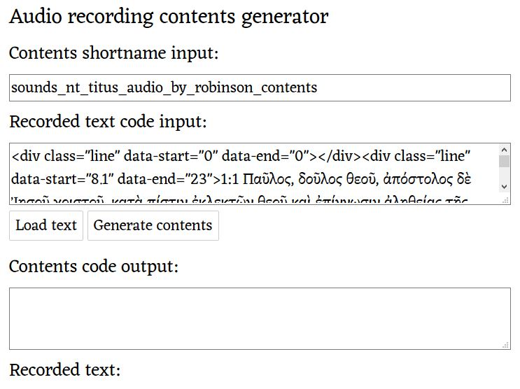
The value of the form‘s field "Contents shortname" should be the same as the value of the key "contents_shortname" in collection‘s catalogue. While creating collection‘s catalogue for Epistle to Titus collection we entered for this key the value "sounds_nt_titus_audio_by_robinson_contents", so we now should enter it as the value of the field "Contents shortname".
The value of the form‘s field "Recorded text code" should be HTML code of the recorded text starting from the first "div" tag having class attribute value "line" and ending with the last "div" tag having the same attribute value. Use browser’s HTML inspector (available on right-click in every major browser) to copy this part of code from Library app’s page.
After filling fields with these values, click the button "Load text" and the text will be displayed beneath "Parsed text:" heading.
After loading text click the button "Generate contents" and contents code will appear in "Contents code" textarea.
The contents code will be as this:
var sounds_nt_titus_audio_by_robinson_contents = {
"v-title": 0
, "v1-1": 8.1
, "v1-2": 23
, "v1-3": 33.8
, "v1-4": 49.5
, "v1-5": 65.8
// part of code has been cut out
, "v3-11": 580.3
, "v3-12": 590.8
, "v3-13": 606.8
, "v3-14": 616.6
, "v3-15": 630.9
};
This code should be saved in the file having the same name as the value in "Contents shortname" field. The file should be placed in "contents" directory: /data/contents/sounds_nt_titus_audio_by_robinson_contents.js
After doing this audio recording resource should work in sync with parsed text resource.
Coding policy
Dealing with unrecorded lines
It may happen that certain lines, which are included in parsed text resource are not recorded inside audio recording. E.g. inside parsed text of apostle Paul's Epistle to Romans there are lines 14:24-26 which are not recorded in Th. Karvounakis's audio recording. If we ignore this discrepancy, clicking on the lines 14:24-26 inside parsed text pane will not bring in sync the audio resource. The recomended way of dealing with this situation is as follows.
First, check how long is the silence inside the sound file at the place where unrecorded lines might be. In case there are at least 0.25 second of silence for each unrecorded line, we can leave the sound file as it is and make changes only to data file and contens file. Inside data file we should to add numbers of unrecorded lines indicating that each should play 0.25 second or a little longer:
// part of code has been cut out '[51:53.45]14:23 Ὁ δὲ διακρινόμενος, ἐὰν φάγῃ, κατακέκριται, ὅτι οὐκ ἐκ πίστεως· πᾶν δὲ ὃ οὐκ ἐκ πίστεως, ἁμαρτία ἐστίν.\n' + '[52:03.20]14:24\n' + '[52:03.45]14:25\n' + '[52:03.70]14:26\n' + '[52:03.95]15:1 Ὀφείλομεν δὲ ἡμεῖς οἱ δυνατοὶ τὰ ἀσθενήματα τῶν ἀδυνάτων βαστάζειν, καὶ μὴ ἑαυτοῖς ἀρέσκειν.\n' + // part of code has been cut out
Then we should introduce relevant changes into contens file by using Audio recording contents generator as described above:
// part of code has been cut out , "v14-23": 3113.45 , "v14-24": 3123.20 , "v14-25": 3123.45 , "v14-26": 3123.70 , "v15-1": 3123.95 // part of code has been cut out
If there are not at least 0.25 second of silence for each unrecorded line, then we should add it. To do this use WavePad (Win/Mac, commercial) programme. Open the sound file in WavePad, select the place the silence should be inserted and go Edit > Insert Silence... > Current:

Then type the length of silence and click "Insert Silence":

Common tasks
Scanned resources
Scanning a book
The book needed for scanned resource should be scanned in full (pages from the title page to the last, not including covers and promotional materials). Each page should be scanned into separate JPG file. Scanning resolution should be at least 400dpi, scanning mode should be "color" or "greyscale".
Quite often it is more convenient to scan two pages of the book into one JPG file. In this case you will need to split each file into two files. This can be done usinge "TileMage" program (Win, free). This program places each pair of new files created into separate directory. So you will need to flatten directory structure. This can be made using program "Suction" (Win, free).
Removing watermark from PDF file
Quite often you may find a PDF file displaying scanned book. If its quality is good enough, PDF file can be used as the source of images for scanned resource. Unfortunately, quite often each page of PDF file is watermarked with some image or text, such as "Created with Cool PDF Soft". Such watermarks should be removed before converting PDF file to series of JPG images.
To remove watermark you can use Foxit Advanced PDF Editor (Win, commercial). Open watermarked PDF file, click "Object tool" in the toolbar and then click the watermark to select it:

Then in the menubar go Edit > Delete Across Pages... and in the Dialogue select "All Pages" and click the button "Delete". The watermark will be deleted from all pages:

Save the PDF file. Now it can be converted to series of JPG images.
Converting PDF file to images
To convert PDF file to series of images use conversion software "Boxoft PDF To JPG Converter" (Win, free).
To get JPG images of good quality you should set "DPI" value at least to 400 and "Quality" value at least to 75%; "Color mode" value should be "color" even in case the pages are black and white:

Bulk download of images
Quite often you may find a scanned book published in the internet as a set of .jpg failes inside some bookreading web app, as e.g. in archive.org. In this case you should copy all .jpg files of the scanned book. To copy images one by one would be tedious, so you should use tools which allow to do bulk download of the all needed files.
At first you need to generate list of URL addresses of the image files to be downloaded. To do that go to URL list generator, fill the form and click "Generate URL list" button:

The value of the field "Start number" should be the number from the URL of the first page of the scanned book.
The value of the field "End number" should be the number from the URL of the last page of the scanned book.
The value of the field "Zero padding to length" should be the length of the numbers in the file names. E.g. if the file names of the scanned images are scanned-page00001.jpg, scanned-page00002.jpg, scanned-page00003.jpg etc., then the value of this field should be "5", because the numbers 00001, 00002, 00003 atc. contain 5 positions.
The value of the field "URL template" should be URL of the scanned image with the number changed into "{index}" variable.
After you click the button "Generate URL list" the list of URLs will be outputted into Output textarea. Now you can copy this list and use it with some software providing bulk download functionality, e.g. with the program Free Download Manager (Win, free).
Using Free Download Manager at first you should copy generated URL list, then click hamburger menu, and inside dropdown click the option "Paste URLs from Clipboard":

After that you will see the dialogue as this:

In this dialogue select the folder in which downloaded images should be saved, leave the field "Create subfolder" empty and click the button "Download". All images from the list will be dowloaded into specified directory.
Batch renaming of files
Images created by the scanner or extracted from PDF file should be renamed in order to get sequence of files page0001.jpg, page0002.jpg, page0003.jpg etc. This can easily be achived using program "ReNamer Lite" (Win; free).
In order to rename as described the batch of files we need to add three rules.
1. Add rule > Serialize. Insert where: Replace current name

2. Add rule > Padding. Add zero padding to length: 4

3. Add rule > Insert. Insert: "page"; Where: Prefix

Having added these three rules click "Rename" and all files will be renamed.
Cropping images
Often images created by the scanner or extracted from PDF file need to be cropped.
To crop single file you can use the program "Photoshop" (Win/Mac; commercial).
Open in Photoshop the file to be cropped. Click the button "Rectangular Marquee Tool" on the left. The click the button "New selection" on the top. Select on the top in the dropdown "Style" the value "Fixed size". Then on the top enter pixel values in "Width" and "Height" boxes. After doing that click the top left or top right corner of the area to be selected. The selected area will be marked by dashed line:

Then go Image > Crop:

After clicking menu item "Crop" the picture will be reduced to the selected area. Then go File > Save As and save the picture as JPG file:

To batch crop the image files you can use the program IrfanView (Win/Mac; free).
Go to File > Batch Conversion/Rename:

In the top right of the window opened select the folder containing images to be cropped and click the button "Add all". Then click the button "Browse" and select the folder in which the cropped images will be saved. The select in radio group "Work As" the value "Batch conversion" and click the button "Advanced":

In the new window select the checkbox "CROP" and enter pixel values in the fields "X-pos", "Y-pos", "With" and "Height". Then select the value in "Start corner" radio group: the value "Left top" in case you need to crop the images of the left pages or the value "Right top" in case you need to crop the images of the right pages, and click the button "OK":

After that the images will be cropped and saved in the directory you have chosen.
Rotating images at arbitrary angle
The lines of the physical book often appear inclined more or less to the left or to the right in the image. In case the image has the white background this inclination of the lines can be fixed by rotating image at certain angle.
A convenient software for rotating images at arbitrary angle is "Adobe Photoshop" (Win/Mac, commercial).
Open image to be rotated in Photoshop:

Then go Image > Image Size, deselect the option "Resample Image" and click "OK":

Now click the button "Rectangle Marquee Tool" on the left and in the dropdown "Style" on the top select the value "Normal":

Then select the part of page which needs to be rotated at certain angle:

After that right-click inside the selected area and select the option "Layer Via Copy" from the context menu:

Now select the just created layer in the right pane and push the keys "Ctrl" and "t" in the keyboard. You will see the frame and the handle:

Using the handle rotate the layer at needed angle:

Now go File > Save As and inside the dialogue click the button "Apply":

Another dialogue will be displayed. For the option "Format" select the value "JPG" and click the button "Save":

Yet another dialogue will ask do you want to replace the file. Click "OK":

In the last dialogue set the value "10" or "11" for the option "Quality", values "Progressive" and "3" for the "Format Options" and "Scans" respectively. Then click "OK" and the image will be saved:

Retouching images
Images of the scanned pages may contain various defects: inscriptions or marks left be previous owners or readers, library stamps etc. It is better to remove such defects by retouching images. This is time-consuming task, so choose for scanning the copy which has the minimal number of such defects!
A convenient software for retouching images is "Adobe Photoshop" (Win/Mac, commercial). Using this program you will need Spot Healing Brush tool.
To use this tool right-click "Spot Healing Brush tool" button on the left of the window and select "Spot Healing Brush tool" in the menu:

Optimizing size of JPG files
Very often the size of JPG file can be reduced without loss of quality. This can be achieved using such programs as ImageOptim (Mac, free) or FileOptimizer (Win, free). These programs change original files, so make backup copy before running the program.
FileOptimizer program by default creates in the same directory backup files having .bak extension. Disable this feature in the Options:

Dealing with "landscape" pages
In the books which have "portrait" pages there can be some "landscape" pages. Since the Bookreader which is used to display scanned books in Library app does not allow to rotate pages, the "landscape" pages need special treatment.
At first we need to look what are dimensions of the images of the scanned book. Let's say, dimensions are 1000px with and 1500px height. Then we need to generate the image of these dimentions having as background color the color used in Bookreader of the Library app.
After that we need to rotate our "landscape" page, resize it so that its width would be 1000px and add it on the top of just generated monochrome image. The result will be as this:
"Landscape" page viewed in Bookreader will probably be too small, but it can be zoomed in order to discern the details comfortably.
Transcribed resources
Using regex
While editing code of the file of the transcribed resource, there is often the need to remove or replace certain parts of the HTML code. For example, you may need to remove "id" or "href" attributes, to remove opening or closing part of certain tags, to reverse order of tags, to extract certain numbers and put them in another place. The most efficient way to do this is using regular expressions (regex).
Regular can be used with such code editors as Notepad++ (Win, free), ActiveState Komodo Edit (Win/Mac, free) and many others.
For using regular expressions with Notepad++ code editor go Search > Replace and inside the dialogue check "Regular expression", enter regex in the "Find" field, enter another expression in the field "Replace" or leave it blank if you need to delete and click "Replace All". Or click "Replace All in All Opened Documents" if you need to make replacements in several files. All strings which match the regular expression will be replaced:

For using regular expressions with ActiveState Komodo Edit code editor go Menu > Replace and inside the dialogue click the button "Treat the pattern as a regular expression", enter regex in the "Find" field, enter another expression in the field "Replace" or leave it blank if you need to delete and click "Replace all". All strings which match the regular expression will be deleted:

Below are examples of regular expressions:
| Find field | Replace field | Used for | Tested with |
|---|---|---|---|
| \shref="([^"]*)" | empty | removing "href" attributes | Notepad++ |
| \sid="([^"]*)" | empty | removing "id" attributes | Notepad++ |
| <\s*div.*?> | empty | removing opening part of "div" tags | Notepad++ |
| <\s*\/\s*div\s*.*?> | empty | removing closing part of "div" tags | Notepad++ |
| </span> | </span>\r\n | adding new line after closing "span" tags | Notepad++ |
| >[\r\n]*<span | ><span | removing new lines before opening "span" tags | Notepad++ |
| (<a[^<>]*class="verse_num"[^<>]*>[\s\S]*?</a>)(<span[^<>]*class="verse"[^<>]*>) | \2\1 | reversing order of the "a" tag having class "verse_num" with the opening part of the "span" tag having class "verse" | Notepad++ |
| (<a[^<>]*data-verse="(\d+)-\d+"[^<>]*>)(\d+)(</a>) | \1\2:\3\4 | extracting chapter number fom attribute "data-verse" and put it before line number inside the text of "a" tag | Notepad++ |
| ([0-9]+)(\s+) | 1:$1 | adding chapter number (in this case "1:") before line number and empty space after line number (empty space symbol not seen in "Replace" regex) | Notepad++ |
Comparing versions of text
While editing transcribed resource, there is often the need to compare different versions of the text. This can be done using certain online text comparision tool such as available at diffchecker.com .
Alternatively a desktop program can be used, such as WinMerge (Win, free). To compare two versions of the excerpt of the text, open the program, push the keys "Ctrl" and "N". This will open program window split into two panes:

In order to see the text as wrapped lines go View > Wrap Lines:

Then paste one version of the text into left pane, another version – into another pane, and push the button "F5". Differences of the text versions will be highlighted: